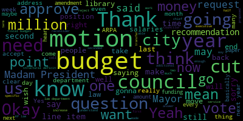
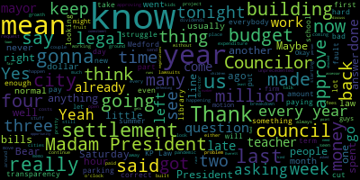
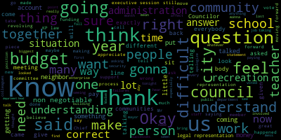
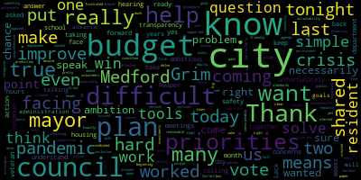
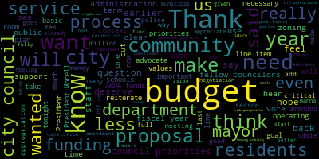
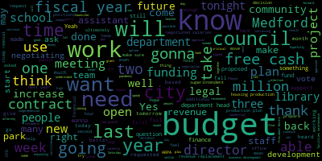
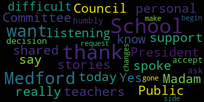
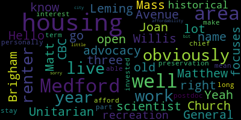

AI-generated transcript of City Council 06-28-22
English | español | português | 中国人 | kreyol ayisyen | tiếng việt | ខ្មែរ | русский | عربي | 한국인
Back to all transcripts
Heatmap of speakers
[Morell]: 26, the regular meeting of the Medford City Council, June 28th, 2022 is called to order. Mr. Clerk, please call the roll.
[Hurtubise]: Vice President Bears. Present. Councilor Caraviello. Present. Councilor Collins. Present. Councilor Knight. Present. Councilor Scarpelli. Present. Councilor Tseng. Present. President Morell.
[Morell]: Present. Seven present, zero absent. Please rise to salute the flag.
[Hurtubise]: I pledge allegiance to the flag of the United States of America, and to the republic for which it stands, one nation, under God, indivisible,
[Morell]: Madam President, motion to suspend the rules to take communications from the mayor on the motion of ice is embarrassed to suspend the rules to take communications from the mayor second by council night all those in favor. All those opposed the motion passes to to dash 422 the electronic delivery to the Honorable President and members of the Medford City Council regarding year and transfers for fiscal year 2022. Dear President Morell and members of the city council, I respectfully request and recommend that your honorable body approves the following end of year transfers for FY 2022. From finance personnel, $55,000 to finance ordinary $55,000. From police personnel, $20,000 to finance ordinary $20,000. From treasury personnel, $5,666 to treasury ordinary $5,666. From fire department personnel, $192,000 to law ordinary $192,000. From data processing personnel, $25,000 to data processing ordinary $25,000. From clerk personnel, $468 to clerk ordinary $468. From cable PEG personnel, $26,948 to cable PEG ordinary $26,948. from Chevalier theater personnel $1,087 to Chevalier theater ordinary $1,087 from fire department personnel. $25,946 to Fire Department Ordinary, $25,946. From Traffic Commission Personnel, $176 to Traffic Commission Ordinary, $176. From Parks Department Personnel, $9,640 to Parks Department Ordinary, $9,640. From Pool Slash Ponds Ordinary, $405 to Pool Slash Ponds Personnel, $405. From human resources personnel slash ordinary $100,000 to diversity personnel slash ordinary $100,000 from insurance personnel slash ordinary $11,541 to workers comp personnel slash ordinary $11,541. From police personnel, $100,000 to parking, ordinary $100,000. From police personnel, $50,000 to elections personnel, $50,000. From facilities personnel, $30,000 to electrical personnel, $30,000. From facilities personnel, $55,000 to building personnel, $55,000. Total $708,877. Thank you for your kind attention to this matter. Sincerely yours, Breanna Lungo-Koehn mayor. Do I have any discussion on the end of year transfers?
[Knight]: If we could get a financial presentation from the finance department, Madam President.
[Morell]: Absolutely. Dr. Dickinson, if you could.
[Bob Dickinson]: Hi, all. Essentially, this is year end cleanup. These are budgets that were overspent. We went through the budget, looked at every department, as voted from the votes you took a year ago. And... No, of course not. I need my own microphone. In order to, this is just... It doesn't reach. No, it doesn't have long enough. We'll rip it apart. Oh boy. I got a green light. He's working on it. Testing one, two, three. Z-Y-X-W-E-T-S-R-Q-P-O-N-M-L-K-G-I-H. Yes, so we go through the budget, budget to expenses. We looked at what you voted last spring. These unfortunately are departments that are slightly overspent. So, I mean, the individual like Chevalier Theater, a thousand bucks. Ordinarily in my life, we'd be looking at this stuff starting in, March, but unfortunately I wasn't working here then. So this is really just cleaning up so we're not over appropriation on any of these categories. Some of them are actually, we've put a little bit more in there in case there are other expenses that might come through at the end of the year.
[Morell]: President Bears.
[Bears]: Thank you, Madam President. I understand the end of your transfer process pretty well at this point, but I have one question. How did we end up overspending by almost $200,000 in the law department?
[Bob Dickinson]: Those were some legal bills that we incurred in the middle of the year that were not entered into the system. So I can't really speak to what they were for.
[Bears]: Would anyone else from the administration have a potential answer as to what those were for and who they were paid to?
[Nina Nazarian]: If allowable by the City Council, I would offer to Finance Director Dickinson to hold on to that microphone. I won't be needing it. Thank you very much. I believe we have a attorney on Zoom at this point, but I'm just messaging them right now. One of those items is actually a settlement in the amount of $137,000. The other item is $55,000, which the city council had previously approved, but mechanically based on the timing of that approval, it needs to be revoted essentially, is the short answer. So 137 plus the 55 is the number that's in before you today. And who are we looking for on Zoom?
[Knight]: Madam President for me.
[Nina Nazarian]: Councilor Neill.
[Knight]: Can you just discuss the nature of the settlement for $137,000?
[Nina Nazarian]: I defer to council and it looks like they're probably online, hopefully. What's the name? It might be Deborah Ecker.
[Caraviello]: It might be.
[Nina Nazarian]: Deb Ecker.
[Morell]: Not seeing unless they're under a different name.
[Nina Nazarian]: I know that Ms. Ecker is- She's in the waiting room. Thank you.
[Morell]: All right. I see two on mute. Deborah Ecker, name and address for the record, please, and you, there you go.
[SPEAKER_24]: Hi, I'm Deborah Ecker. I am at 101 Arch Street in Boston. This is my K.P. Law.
[Morell]: Okay, if you could please, if you can offer some insight into the settlements that were referenced.
[SPEAKER_24]: I actually didn't hear the beginning because I just jumped on the first one is a hot is that the one that was one of the ones that was referenced $137,000 and $55,000. Right, okay. So the 137 is, it was an accident. There is a cap of $200,000. There were two plaintiffs. Liability is clear. There were admissions that were propounded and responded to by predecessor city solicitor. And so in my opinion, obviously liability was clear. The damages were clear as well. So I recommended settlement below the cap. which I thought was advantageous. I'm sorry.
[Knight]: Previous city solicitor did something happen to our existing city solicitor that we need to know about.
[SPEAKER_24]: No, no, no, no, no, not at all. I'm just when the, the, this is case has been ongoing so in discovery was being exchanged.
[Knight]: That's all. Madam President, in my, on my desk today when I came in I found a packet. And it was provided to us from local 22. I look at 25 rather and going through it. It has a number of charges documents. I'm wondering if, you know, based upon the fact that there's $192,000 of overspending in this account right now, and the administration's asking us to transfer that from the fire department public safety to legal. I'm hoping maybe gentlemen that gave us this packet can just give us a brief outline as to what's in it so that we have a better understanding as to what's going on on the side of things.
[Caraviello]: What have been finished men and persons. Why wasn't the council made to approve the settlements. Usually, usually the council approves our legal settlements over a certain dollar amounts.
[SPEAKER_24]: Can you speak to that attorney Ecker or. So for, for the data it's the city solicitor who approves at least the settlement amount. The settlement. It's a toy was a tort claim.
[Caraviello]: Council usually approves settlements. Anything over $2,500, the council has to approve appropriation for. And how many other settlements were made that we didn't approve? Do we have an answer to that?
[SPEAKER_24]: I do not know, not from me.
[Caraviello]: Okay. Yeah, that's the normal procedures. City council approves settlements.
[Morell]: No one can answer why those settlements didn't come before the council.
[Scarpelli]: If I can, Councilor Caraviello brings up a good point. If it's 137 for one, and we've always been under the impression that anything over $2,500 comes to this council. And were there any others other than in the past year, other than that 137? Thank you.
[Morell]: Madam Chief of Staff, can you speak to that?
[Nina Nazarian]: this point in time, I am not aware of any other settlements that require City Council approval or any other settlements for that matter. I know that there are obviously cases that are pending and going through the process, but I'm not aware of any specific settlements that have been signed and need to be funded at this time.
[Morell]: And can you speak to why these didn't, these, well, I understand you said this 55,000 was previously approved, but the 137,000, do you know why that didn't come to this body? I would have to defer to Council on that. Okay.
[Knight]: On the underlying question, Madam President, if we could just get a review of the packet related to the law line item from- Yeah, I'm not sure I even did that.
[Morell]: I don't think I got that packet. Did I get that packet?
[Knight]: The messenger did pass it out.
[Hurtubise]: Oh, okay.
[Knight]: It's quite voluminous.
[Morell]: Sure.
[Bears]: I mean, I just don't know what- We do have a limit of five minutes.
[Morell]: I'm sorry?
[Bears]: We have a participant- Five minutes.
[Morell]: Yes.
[Bears]: You have five minutes, Steve.
[Morell]: Please keep it up to five minutes as that's our, our limiting we have a pack house tonight. They may address for the record, please.
[South]: Good evening, Madam President, members of the city council. My name is Stephen South. I'm the secretary treasurer of teamsters local 25. And I also live at 106 Damon Road. So I'm here tonight to speak to you about some items. And first of all, before I begin, I just want to Thank all of you for all of your hard work during the budget season I know it's a stressful time. And I also want to recognize all of the hard working teachers in the audience and say that I appreciate that all they do including for my children. It was brought to my attention that a couple meetings ago that one or more Councilors asked the mayor's office for an update on open litigation, much like you're doing tonight, and that the comment was made by the member of the mayor's staff that he doesn't feel comfortable commenting on open litigation. Well, thankfully, I do feel comfortable commenting on open litigation and not just verbally with my opinions, but I brought you copies of every single litigation that Local 25 has open right now, which is somewhere about between 35 and 40 separate cases. So I briefly just want to give you an overview of those. So the first little piece here, and I just wanted to talk about money that's been, spent pretty frivolously within the city when we're talking about budget cuts, getting rid of teachers. We have multiple school custodians, jobs that are not filled. At the end of March, the city eliminated the security guard position in Medford Public Schools. There are no longer any security guards in Medford, which I find very troubling with recent things that we see in the news. But I just want to show you some of these things, the way Medford's spending the money. So first of all, the first packet. These are private investigator reports, where private investigators are following members of the general of the city employees for that work for the DPW. And if you look at the first line it says in March of 2021 city of Medford Mayor Breanna Lungo-Koehn became aware of a rumor that a snowplow driver had been asked to take care of a municipal employee. So now we're spending tens of thousands of dollars on rumors, and then I'll bring you to the end of the report where, and I'll read the last line. Now this is after over 40 employees and contractors were interviewed by private investigators and people were followed. This investigation was unable to identify any snow plow driver who offered any information that would corroborate the allegation. Other than the original rumor, no information was uncovered that indicated a pay to plow scheme exists or existed in Medford. So that was last April. So what did the city do? If you look further in the document, Last fall they started a new investigation on another rumor. Okay, and you can see that a private investigator or multiple investigators spent basically entire days over the course of many weeks just driving around the city taking pictures, following people, and also affixing secret GPS trackers to people's vehicles. Go to the next document. Now I'll go through the rest quickly. These three documents are three complaints that we have at the Secretary of State's office for the city, refusing to provide requested information to me both as a taxpayer and also the union, representing many hundreds of employees within the city. The next is a packet of unfair labor practice charges that Teamsters Local 25 filed at the Massachusetts Department of Labor Relations. In the last nine months, there's about 25 separate cases, and we'll be hearing all those cases separately, minus a few that were settled, and the city pays an attorney for all those cases and all of those hearings. The next. These are all. These are all AAA arbitration notices, we filed I believe 11 and we have about nine pending. We actually had an arbitration today in the city is paying an astronomical amount to KP law to try all these cases versus me and my attorneys. The next one. Now this is one of the requests for information that the city did provide, not one of the ones that we have complaints on, but if you can see 100% of the information in the documents are redacted so basically they, They gave me blacked out documents and what these are, these are all the city's legal bills, and the city is claiming that it's attorney, attorney client privilege they can't give us the unredacted legal bills because it's private, which we disagree in many communities, including Medford, these were always public record, up until a few years ago, and The one thing that I do want to point out, and the reason that we think that it is all redacted and I'll tell you because today at arbitration, an official from the city of Medford from the administration testified that KP law hires all these private investigators, and the city reimburses KP law so that's how they get around giving a the information to the union or the general public. Lastly, these are three federal lawsuits that have been filed in the last 12 months against the city of Medford, one of which was just settled in the last few weeks for $475,000. And I know because it's my members, 34 of my members are being paid that lawsuit. So when the city says they're not aware of any other ones, maybe they should take a look at this. Maybe the city administration doesn't know of the lawsuits they're paying out or their attorney that was just speaking, not knowing about other lawsuits. So that's being dealt directly with the city. And lastly, and I apologize, I may have went a minute over, but I just wanna say that with the city making all the cuts in the schools, but then spending upwards close to a million dollars on legal fees and settlements and all these other litigations, which about somewhere around 35 to 40 are still pending that you're still going to pay for. I would ask the council to take a hard look at all these items and see if there's ways that they can spend the city's money more fiscally responsible, and maybe figure out why you have all these lawsuits, why you're paying all these settlements, and maybe we can make some positive changes to make it better in the future. And with that, I thank you for your kind attention.
[Hurtubise]: Thank you, Mr. Scott. Vice President Bears.
[Bears]: Thank you, Madam President. Wow. That was information I didn't have until right now. Obviously, gonna read these documents when I have a chance and look into it more. My only question again, so if 137,000 of this is a single settlement and 55,000 is apparently something we've already approved but have to approve again, how much of that money would be going to KP Law is my only question.
[Morell]: Attorney Ecker, can you, or Madam Chief of Staff?
[Nina Nazarian]: Thank you, President Morell. $55,000 is the amount to be allocated to KP Law. Again, this is the amount that was approved by the City Council in, I believe, at its first meeting in January. Mechanically, it needs to be revoted at this time.
[Bears]: Could you just, yeah, that's fine. Could you just explain why that's the mechanics of it for me?
[Nina Nazarian]: Absolutely. Once the tax rate is set, the amount can't be raised on the recap. And based on the timing of that approval, it's not able to be transacted. The first time that that item came before the city council was obviously when the FY22 budget was presented. And at the time, once the paper was essentially came before the city council the second time, essentially, at that time, it was past the tax rate being set.
[Bears]: Thank you. And my only other question is, has any additional funding, ARPA funding or other federal funding been used to pay KP law?
[Nina Nazarian]: Yes, ARPA funding has been used as a mechanism to pay for KP law bills in this same amount. essentially to cover the cost so that we didn't have bills outstanding while we were looking for this transfer.
[Bears]: So this money is gonna go back into ARPA?
[Nina Nazarian]: At this point in time, that's a possible option, yes.
[Bears]: Okay. Yeah, I mean, thank you for answering the questions. I have serious concerns about this. I guess, what happens if we were to not approve this or are we, you know, Just kidding, we have a motion to sever out a specific item in these end of year transfers.
[Nina Nazarian]: If you were not to approve this item, then the settlement couldn't obviously be settled upon. And secondly, the city may not be able to make payment on its bills in a timely fashion, because there are also further bills as well. That being said, you know, the city council, I do believe has the discretion, but I would need to confer with either legal or check statutes to confirm to reduce authorizations that are presented, recommendations that are presented.
[Bears]: Has the $55,000 already been expended effectively?
[Nina Nazarian]: In terms of obligations, yes.
[Bears]: Okay, I would make a motion, one, that we get a listing of any settlements made over $2,500 after July 1, 2021, and have that provided to us since we didn't know about this settlement, and it appears there may be other settlements that haven't come to the council. And then I would motion to cut the end of year transfer between the fire department and the law department by $55,000, and then approve the end of year transfers.
[Morell]: You want those two separate motions?
[Bears]: Yeah, the first one for the request for the information, the second one to cut 55,000 and then approve the... Still have a few councilors that wanna speak, do I have a second for those motions?
[Caraviello]: Thank you, Madam President, you know, Council's been asking for the last three years, the bills, I don't know how many requests have been made, but we haven't gotten any. I'd like to amend Councilor Bears's motion on the settlements made, not sure, but how many settlements have been made going back the last two years that we don't know about? I know there was others that went through and now, let's see, you got 137, you got, now we're hearing about another 475,000. I remember, The budget for KP law was said $5,000 a month. That was the budget. There's other Councilors that we had when that was made because we got rid of in-house counsel. This is exceeding well above that. And we've never been notified of any spending over the last three years for this law firm. Again, we keep asking for bills. We keep asking for bills. You guys keep approving settlements without asking us I just don't know. Where's the transparency everybody talks about? Everybody, transparency, transparency. We're hiding the stuff.
[Hurtubise]: Sorry, I'm not saying.
[Bears]: I'm happy to accept that amendment.
[Caraviello]: Yeah. Again, I don't know what to say. Getting told about $137,000 settlement tonight without this council approving settlements is wrong.
[Morell]: Councilor Scarapelli.
[Scarpelli]: Thank you. Just one question. I don't know if it was the KP law attorney or yourself mentioned that, Mr. South, is it true that part of the KP law budget that we're paying for legal representation, that's what pays for the private investigator? Is that coming out of the same line?
[Nina Nazarian]: Thank you, Madam President, if I may, through you to Councilor Scarapelli. there are circumstances where the city hires outside parties through KP law to conduct matters that are obviously confidential matters of personnel. And so there That is a possibility. Yes, that's the best way I can say it. I will stand before you and I will contend that these bills could compromise and are under attorney-client privilege, the city's position with regard to various matters and issues going on.
[Knight]: I just do want to point back out to the meeting we had with Mr. Silverstein that said that these attorneys are not attorneys for the city of Medford. These attorneys don't work for the city council. His attorneys don't work for anybody but the mayor's office. Their client is the mayor. That's who their client is. That's where their loyalties lie, not to the taxpayers of this community. He made that clear.
[Hurtubise]: He said that.
[Nina Nazarian]: Madam President, a point of information is one that requires a question. Mr. Knight, what is your question?
[Knight]: How much longer is the lying going to go on? That's my question. How much longer is the buffaloing going to go on? How much longer are we going to be left in the dock? And then in the last 11th hour, you come up here and ask us to spend hundreds and hundreds of thousands, if not millions of dollars. That's my question.
[Morell]: I understand your frustration, but I would like to remind you- How much longer do we need to wait for the Warren articles that you requested for three years?
[Knight]: How much longer do we have to wait for the quarterly presentations from the finance director that we've asked for for three years? Those are questions I can ask, too, if those are the questions you were willing and ready to answer. We've been giving you an opportunity now for 36 months to do so.
[Morell]: Madam Chief of Staff, I'm not sure what the question is. Thank you, President Morell. Thank you.
[Nina Nazarian]: So again, this is where, you know, I know that
[Scarpelli]: Emotions are high because we have so many gaps and so many needs in this community. And what we're seeing as concerning is that one of the biggest line items is a law department that we've been asking for an understanding where this money is going and no one's told us a thing. Again, I revert back to the first budget meeting we had where I was very concerned That was very intense and understanding these are the questions that are so frustrating. When I teach us on afforded reasonable raise pox and shambles our streets and sidewalks are a mess. And then we present a money paper that counts a caveat was correct. This council voted $5,000. legal fees for representations a month. So we looked at that as $60,000. And we then came in at the beginning of the season, the new term, and we talked with our new Councilors. And unfortunately, we were screaming for a representative that could represent the council legal representation. And that hasn't happened, which has left us in pretty vulnerable situations that actually afforded us few negative situations that came out legally, because we didn't have the representation. And we've asked over and over again. And I believe the council was promised legal representation of this council if that paper was voted on, I believe. And as we look at the budget, we don't have that. So correct that that hasn't been added.
[Nina Nazarian]: President Morell, my recollection differs from yours, Councilor Scarapelli, but I do recall specifically that City Council making its comments with regard to wanting to see legal representation. I also will say that, reiterate my comments from back then, there's a tremendous, this is a $200 million corporation. You all, through the city, as the legislative body for the city, The mayor of this city runs a $200 million corporation. We need to have special counsel for special purposes. It is critically important. There is no one general counsel who can represent or assistant counsel that can represent all the needs of a $200 million corporation. I'm not sure if I used those words when we spoke last on this matter, but that is the reality that I want to present to you again. that it's important that we have the depth and the knowledge to properly represent the city on various matters that come up. And they're not all going to be ones that general counsel can take on.
[Scarpelli]: And I'll say this again, like I said the other evening, normal and other communities, Councilors and the CEO of their communities work together to find solutions to make our city succeed. So it's not, this is the problem. This is a blaring problem. It's just not the mayor who's running the CEO of this community. We understand that. If there was give and taken, we understood, but there isn't. This body has been disrespected time after time. You're coming to us with information that we've been asking for for months, if not years. And then we have to, we have to, under pressure, vote it through so we can run the business of our administration. So it falls on deaf ears when it's a plea that the mayor needs this for all this work. So do we. We're hired to follow the ordinance and laws of this community. And we need that assistance to make sure that we can help this community grow. So again, like I said, if we work together, like was promised, and if we shared our failures and shared our successes together, we could have a lot of great things happen in this community, but instead we're here. Thank you.
[Nina Nazarian]: President Morales, I'm not gonna rebut the items Councilor Scarapelli stated and Councilor Scarapelli, I don't materially disagree with you. The only one thing I will point out. is that matters pertaining to personnel and legal matters are ones that the city has an obligation to be cautious very very cautious on it is something it is a position I have taken for the last decade in administration. And it is not it is I can't speak to what other communities do. And frankly, I don't even know if this community. took that position before I started here. But it's important that we ensure the privacy and ensure that you all, unfortunately, are a public body. By your being a public body, information that is provided to you as a public body is then becoming a public record. And it's important legally from that perspective. I don't disagree with you, Councilor Scarapelli, on the other matters that we can share successes. And frankly, I can do a better job at that.
[Scarpelli]: I'll just leave it at that, but I and I'm gonna, I'll end with this, and I, we understand. We're not naive not to understand that we're a public body and understanding that the confidentiality rules, but that still doesn't allow the administration not to meet with us on understanding what the monies, how much money and where it's going. It doesn't have to be the person's name. It doesn't have to be the situation, but understanding the process, that's all we're asking for. So we could understand that because when we hear things and we sit here like nights like tonight, we're given things, it would be nice to understand that what Mr. South presented They're names all over this, and maybe that's right or wrong, but if we sat with our administration in executive session and explained to us where our money was going and what situation without the person's name, that doesn't affect any kind of privacy issues. So that's all I'm saying. So thank you.
[Morell]: Thank you. President Paris.
[Bears]: Thank you, Madam President. I mean, if we're gonna use a corporation analogy, I can't think of any $200 million corporation where the board, the legislature would just say, the chief executive officer could do whatever they want. We don't need to know what's going on. I just don't think that would happen. I would just ask that we, unless there's additional comment, that we vote on these motions. And I again, happily accept Councilor Scarpelli's amendment to go back all the way to January 1, 2020 regarding settlements over $2,500.
[Morell]: Mr. South, we do have a rule that you can only speak once on a topic. We're just going to try to move through. Thank you. So we have too much on the floor from Vice Mayor Bears. Is there any further discussion from the council? Is there any from the public who would like to speak on this who has not spoken yet?
[Caraviello]: I have a question. Why are we giving parking another $100,000? We have close to a million dollar budget.
[Nina Nazarian]: President Morell through you to Councilor Caraviello, this would be for the prior, the current fiscal year, not the fiscal year that begins July one. It's, as you may recall, their budget was only $250,000 in salaries and $100,000 for fiscal 22 in ordinary expenses. The city council did approve a transfer for $45,000 for salaries but again the salaries really begin half the year. So this is getting closer to a more representative budget for what's presented before the city council for fiscal 23. Again, this this paper is this transfer is only for fiscal 22.
[Morell]: Any further discussion from the council. Two motions on the floor from Vice President Bears. So the first one as amended by Councilor Caraviello, request from the administration, any settlements over $2,500 from the past year, and that was amended by Councilor Caraviello to go to the past two years, correct? January 1, 2020, okay. Do I have a second on that motion? Seconded by Councilor Knight. So on the motion of Vice President Bears, as amended by Councilor Caraviello, seconded by Councilor Knight. All those in favor? All those opposed? Motion passes. So the second motion is to cut the transfer line of the fire department personnel to the law department, which the original amount is $192,000. Vice President Bears has motion to cut that by $55,000. Does that motion have a second? Seconded by Councilor Collins. Mr. Clerk, please call the roll. It's a money.
[Nina Nazarian]: President wrong, if I may really quickly. I just want to make one last comment about this subject and that is just, I know the city council knows, but the city council has been utilizing the services of KP law for a number of ordinances over the course of the past fiscal year. This ultimately is paying for those resources that were allocated. That's, that's the only thing I'll mention here right and right now. Thank you.
[Caraviello]: President, this is I've been here 11 years. This is unprecedented. The amount of legal work that's had to go into this unprecedented and all the mayors that have been there. I don't think I don't think we've ever had 40 lawsuits against the city in one term or term. However, well along this this encompasses. This is totally unacceptable.
[Nina Nazarian]: President Morell, through you to Councilor Caraviello, please do not conflate lawsuits and alleged unfair labor practices. They're alleged unfair labor practices. If you look through those documents, there will be some, if those documents are unredacted, you will look through those documents and you will find some just as comical as I do.
[Caraviello]: Again, I have an essay, I just got this tonight and I'm quite upset that I don't know about 40 lawsuits happening in the city of Medford.
[Nina Nazarian]: Again, please do not conflate the two. Mr. Clerk, please call the roll.
[Hurtubise]: Vice President Bears.
[Bears]: Yes.
[Hurtubise]: Councilor Caraviello. Yes. Councilor Collins. Yes. Councilor Knight. Yes. Councilor Scarpelli. Yes. Councilor Tseng. Yes. President Morell.
[Morell]: Yes. Seven in favor, zero in the negative. The motion passes. Do I have a motion on the main paper?
[Bears]: Motion approved.
[Morell]: On the motion of Vice President Bears to approve the main paper seconded by Councilor Collins, Mr. Clerk, please call the roll. This is the yes, yes. So the motion is to approve the main paper, minus the cost we just voted for.
[Hurtubise]: Vice President Bears.
[Bears]: Yes.
[Hurtubise]: Councilor Caraviello. Councilor Collins.
[Bears]: Yes.
[Hurtubise]: Councilor Knight. Yes. Councilor Scripp-Kelley. Yes. Councilor Tseng. Yes. President Morell.
[Morell]: Yes, seven firms here in the negative emotion passes to dash 423 to the honorable President and members of the Medford City Council regarding use of retained earnings your present morale and members of the City Council I respectfully request and recommend that your honorable body, approve the appropriation of retained earnings and the amount of $500,000 and zero cents the amount is being Requested to subsidize the fiscal year 2023 water and sewer enterprise fund budget retained earnings are reserves of the water and sewer fund reserves can be used for any lawful purpose but serve primarily to provide financial security in cases of unforeseen events or to reduce the need for additional revenue from increased water and sewer rates. Thank you for your kind attention to this matter since daily Breanna Lungo-Koehn Mayor, Madam President want to know that we did get an attempted amendment by the mayor on this paper. Unfortunately, because it was not posted on the agenda, and we can't amend the money paper on the spot. She would have to come back with that amendment. I would motion to table this pending a resubmission at our July meeting on the motion of vice president bears to table second by Councilor Knight.
[Bears]: Madam Chair is undebatable.
[Morell]: Yeah, I mean, it's the motion table is undebatable. I mean, if you have something, Dr. Dickinson, that's gonna inform us, but.
[Bob Dickinson]: Information wise, retained earnings expire as of June 30th. So if we don't vote any now, we don't vote any until we recertify retained earnings, which hopefully will be this fall. It won't be next June. but you will not be able to use retained earnings to subsidize the rents.
[Bears]: I withdraw my motion. Mr. Dickinson, we received a, I've withdrawn the motion to table, but we received a message requesting an amendment to 750,000. We can't do that because it's been submitted as a money paper at 500,000, we can't amend it. So if we approve 500,000. Yeah, we'll vote for 500. I just want to understand how that affects the plans, considering that the number was changed after the agenda deadline.
[Nina Nazarian]: If I may propose through you, President Morell, that we table this until towards the end, we can get legal counsel on to confirm or deny the comment about not being able to amend it here and right now. I do think that it is possible, and it was within your means, but let's double check with counsel because this is a timing issue. This, this, let me also further add that as finance finance director Dickinson stated this $500,000 obviously is to maintain and reduce the water and sewer rates. It's being recommended at a higher amount, both by the Water and Sewer Commission, which occurred after the posting of this agenda, as well as the mayor and other certain key officials. The mayor, when we researched the subject, in order to have the city council vote a higher number, which we learned recently, that higher number would have to be voted, would have to be recommended by the mayor. So that is what's before you. Councilor Knight.
[Knight]: Why can't we just approve the 500, and then when they certify the retained earnings, come back in the fall and do the other 250?
[Morell]: Are you able to address that question, why we can't vote through the 500,000?
[Bob Dickinson]: If I may, when I met with the Water Commission about this, that's not still on. When I met with the Water Commission about setting rates and recommendations for retained earnings. I was under the impression that $500,000 would keep the rates at pretty much what the increase in the budget is which is roughly 3%. The consultant from Raftelis who sets the water rates once the budget and the retained earnings subsidy is given to him said they gave me basically four different scenarios. With a $500,000 retained earnings subsidy. We're looking at a 5.25% rate increase which means the average residential customer will pay approximately $6 more per month. We go to 750 it's four and a quarter and then they'll pay $5 more per month. per month, the million dollars would be three and a quarter and roughly 350, 375 per month. So in order to keep it closer to what the rate increases have been historically, We sat down and the mayor said probably 750 would be good. The sewer commission, I mean, the water commission had wanted to go as high as a million dollars to keep it at three and a quarter percent. Again, monthly, every dollar matters, obviously, but it's not, we're not talking 20, $30 a month, we're talking somewhere between four and $8 a month, depending on what this council votes. So yes, we could certainly just go with $500,000 in retained earnings. That's what before you now, I believe it's perfectly acceptable for you to up that to $750,000. Just informationally, retained earnings this year were $8.7 million. If we use 750,000, it would be around $8 million. left and retained earnings, that's a reasonably healthy amount to have as reserves for your water sewer enterprise fund. That would probably be around 30% of the yearly budget, which is healthy. Many communities have much less. The consultant had said that Having over 25% is, there's no actual studies out there to say what it should be, but 25% and more is a good number. So it's really, if it's 500,000, it's 500,000, and the rates will go up by five and a quarter percent. At least that's what I'm being told now.
[Knight]: But then after the retained earnings get certified in the fall, can you come back and request an additional 250,000 and then provide that additional rate?
[Bob Dickinson]: Well, I'm not exactly sure how that would work because we have to set the rates. So we're making, I don't know that we can set rates assuming that we'll come back in the fall and have another quarter of a million dollars in retained earnings. That's, that's the problem that, you know, it's not going to spend a million.
[Knight]: Well, I know, but earnings in three months, or maybe the way things are going.
[Bob Dickinson]: No, no, no, no, no, that's not happening. But again, we can't set the rates based on the assumption that this council will vote.
[Knight]: So right now, the only option we have is to either vote this paper through with $500,000 or table it until such time as the chief of staff can get the legal advice that this council has been asking for to have here during these meetings to get a determination as to whether or not the mayor's allowed to amend the paper for $250,000 on the floor the night of the meeting after it's been proposed.
[Morell]: The amendment actually hasn't been submitted because we've got an email.
[Caraviello]: This is a memo. This is not an official paper. It's a memo. I would move to approve 500,000.
[Bears]: On the motion of Vice President Bears to approve the original amendment.
[Tseng]: I just want to make the point, it's not necessarily that we're, you know, opposed to something, it's a procedure problem. It's a, we just can't, we can't amend a money paper.
[Knight]: It's a lot of procedure problems.
[Morell]: It's a procedure problem and it's just, we got this update in our email. It's not something that's been publicly posted. People aren't able to speak on it.
[Tseng]: Exactly, right.
[Morell]: just wanted to be any further discussion for the council.
[Knight]: I just want to be adamantly clear that I'm 110% favor of water sewer rate relief. I mean, that's what the retained earnings are flawed. That's what we should be doing with this money. Keep a healthy amount of reserves and then get the money back to the taxpayer, the back to the ratepayer for relief. I certainly think that this is the way to go. The question is just when can we follow the proper mechanism to do it so that we don't find ourselves in a financial situation or a legal situation.
[Morell]: On the motion of vice president bears to approve the original amount before a seconded by counter Caraviello, Mr. Clerk, please call the roll.
[Caraviello]: Yes.
[Hurtubise]: Yes. Yes.
[Morell]: Yes, seven in front of zero negative the motion passes to two dash four to four to honorable president and members of the Medford City Council regarding these casino community impact funds for fiscal year 2023 budget your president morale and members of the city council I respectfully request and recommend that your honorable body appropriate $135,247 and zero cents and casino community impact funds for the FY 23 budget to fund a staff transportation engineer position and motor vehicle garage repairman me oh three in the DPW this request is in compliance with the Medford and when casino surrounding community impact agreement, thank you for your kind attention to this matter. Sincerely, Mayor.
[Knight]: Any discussion on this paper from the Council, Madam President, the way I'm reading it is that this paper is in accord with the surrounding agreement with when casino, which would mean that They're telling us we have to hire a motor vehicle graduate payment and a transportation engineer, or is this positions that were negotiated through this agreement? Maybe someone could elaborate. Are these positions something that we said, you know, when the casino gets open, we want you to fund these positions for the city of Medford annually, or is it a direct appropriation of money that they give us that we then turn and spend however we see fit?
[Morell]: Madam Chair and staff, there are seats in front too, so you don't have to keep going all the way.
[Nina Nazarian]: Thank you. The exercise is good for me. Thank you, President. I'm actually going to defer to Finance Director Dickinson on this. And I didn't, I wasn't able to hear some of your comments, Councilor Knight, so if you'd be so willing to.
[Knight]: Absolutely. I'm just wondering if this agreement dictates that these are the funds, these are where the funds need to be paid. When you read this, the language of it says that these appropriations are in accord with or in compliance with the Medford and Winn Casino surrounding Community Impact Agreement. So does that agreement say that when we'll fund an annual transportation engineer and an annual MEO3? Or does it say that they'll provide us with funds that we can use in a discretionary fashion when we see fit?
[Bob Dickinson]: My understanding is that a transfer like this to fund these positions has to be in accordance with what the community impact agreement is. We don't have to transfer the funds, but that's what we're putting in the budget. That's a funding source that we will be using to fund these positions in fiscal 2023.
[Knight]: So the agreement with Wynn says that we can use these funds for anything. We're choosing to use them for these two positions.
[Bob Dickinson]: I haven't read the agreement with when or the community impact agreement or gone through it with a fine tooth comb, I would assume there there are certain purposes that we can use these funds for. And these are some of them.
[Morell]: Motion to approve on the motion of ice and bears to approve seconded by Councilor Collins, Mr. Clerk, please call the roll.
[Van der Kloot]: Yes.
[Hurtubise]: Yes. Yes.
[Morell]: Yes, five in the affirmative, two in the negative, the motion passes. 22-425, to the Honorable President and members of the Medford City Council regarding cemetery perpetual care for fiscal year 2023 budget. Dear President Morell and members of the city council, I respectfully request and recommend that your honorable body appropriate $199,958.64 in cemetery perpetual care funds for the FY23 budget to fund the cemetery ordinary expense budget. Thank you for your kind attention to this matter. Sincerely, Brenna Langerford, Mayor. Any discussion on this paper? Vice President Bears.
[Bears]: Whereas this is a standard process that we do every year, I'd move to approve.
[Morell]: Any further discussion from the council on the motion of Vice President Bears, seconded by Councilor Scarpelli. Mr. Clerk, please call the roll.
[Hurtubise]: Yes. Yes. Yes.
[Morell]: Yes, seven in favor, zero in the negative, the motion passes. 22-426, the Honorable President and members of the Medford City Council, dear President Morell and city councilors, I respectfully request and recommend that your honorable body approves the appropriation of one free cash in the amount of $305,000 and zero cents to purchase the following items. $165,000 to purchase three hybrid police cruisers for the police department. $90,000 for the groundwater remediation project at 448 High Street and $50,000 to replace funding in the recreation revolving account which was used to make payment to the Department of Conservation and Recreation for five years worth of lease payments at the La Conte rink. The balance of free cash before this vote is $15,625,799. Two, retain earnings from the water enterprise in the amount of $220,000.00 to purchase the following items. $140,000.00 for a six-wheel dump truck for DPW Water Division and $80,000.00 for a small one-ton dump truck with plow for the DPW Water Division. The balance retained earnings in the water enterprise before this vote is $8,712,776. The following department heads will be available to answer any questions believe Chief Jack Buckley, DPW Commissioner Tim McGibbon, Superintendent of Equipment Mike Wenzel and Recreation Director, Kevin Bailey respectfully submitted Brianna Longo current mayor. So any questions from the Councilor or the department heads like to come up.
[Knight]: I'd like to sever the police cruisers from the rest of the paper of course.
[Morell]: on the motion of Councilor Knight to sever the police cruisers for the rest of the papers. I have a second on that motion.
[Bears]: Second.
[Morell]: Second by Vice President Bears. All those in favor?
[Bears]: Aye.
[Morell]: All those opposed? Motion passes. The paper is severed.
[Knight]: Madam President, we'll for approval or $165,000 to purchase a three new hybrid police cruisers to the police department.
[Scarpelli]: I do have a question. Councilor Scarpelli. I know that she, we, this is, I know that, We had some difficult times in the budget and presentations. I know that we just received the official budget just the other day, but I was under the impression that there wasn't anything in the budget for the cruisers and then the groundwater remediation. I don't, is that something that just happened recently? Chief, is that?
[Morell]: Do you want to speak on the cruisers chief?
[Scarpelli]: Because we're also talking about hybrid vehicles and would we be capable of having the hybrid vehicle with the docking stations and everything like that?
[Morell]: Well, it's hybrid and EV.
[Scarpelli]: Right, right. Sorry.
[Buckley]: Hold on a second. I missed a question.
[Scarpelli]: That's on now. No, I just, you're good. During the regular budget meeting, was this known? Because I thought we asked, when we asked the fleet if we're adding more police cruisers.
[Buckley]: I thought that, so there was a question at the debate on police cruises, but it has been like my entire career. We've never funded police cruises through the normal police budget. It's always been done outside of that. That's 24 or 25 years, in my knowledge.
[Scarpelli]: All right. I know that. Thank you, Chief. That's all. That's a great question. And then I know that the recreation, Mr. Bailey could just give us a description of the 50,000 for because I, this is this is the only piece that with the recreation quick question. Recreation is a revolving account. The only way that it survives is a revolving account. So when you take $50,000, it's going to hurt us. So if you just explain just real quick with that, just elaborate what that means with DCRA. I understand, but I think that as we In my capacity, we pay DCR for our ranks too, so if you just elaborate so people can understand what happened here.
[Kevin Bailey]: Yeah, so what happened is, as everyone is aware, this year we took over the operations of Laconie Rank. One of the first things starting back in September was reading the contract between the city and DCR on the use of the facility. One of the things that we've heard routinely and one of the things that we were really pressing on right in the beginning with DCR is figuring out who those point of contact people are, and to also make sure that they are also helping us out with the upkeep of the facility. We know there are certain things that needed to be done in the hockey rink and we want to see that DCR is able to meet those needs. When we started those discussions, one of the things that we did learn is that the contract with the city and DCR was just about to expire. And we learned that there was actually $75,000 that the city owed DCR on the lease. The administration was able to talk with DCR. We brought the amount down to $50,000 and we wanted to pay that as quickly as possible. Seeing that there was money in the recreation revolving accounts. We wanted to very quickly pay that lease and to be able to renew that contract as quickly as possible but also to use that as leverage for DC. to do the different repairs that you guys have seen this year, such as doing the roof over and insulating the rink. So that money was taken under the Recreation Revolving Account. Laconi Rink does have its own separate revolving account as well. So the request now is to take money from free cash and put it back into the Recreation Revolving Account.
[Scarpelli]: Okay, so the rink is an enterprise account for revolving. Sorry enterprise enterprise account Okay, so, so this was this what this this isn't wasn't your, you didn't know about this until you took it over. Correct. So, if anybody can anybody tell us what the city. How was, how did we lag and paying this for the last five years, prior to recreation taking it over.
[Kevin Bailey]: Do you know who's doing that, I can for certain give the answers to that as you know it was the first year that we took this operation over, I can say that it was a struggle working with DC are getting the invoice ourselves so that we could pay the contract to get the point person for other things that are needed into the rank and we're still working with DCR on things like our cooling tower to be replaced.
[Scarpelli]: So moving forward, this payment will not come straight out of the
[Kevin Bailey]: It should be coming out of the rank revolving out of the enterprise enterprise account. Sorry. All right.
[Scarpelli]: All right, but that 50 $50,000 is you're going to be, you're going to be able to recover that 50,000 because I know If we're taking that, you're okay with your programming and... So on a new contract each year, we should be paying it.
[Kevin Bailey]: So it shouldn't be a five year, one loan sum, we should be paying it each year.
[Scarpelli]: Right, but this came out of this year's account, correct?
[Kevin Bailey]: Correct, all five years.
[Scarpelli]: But it came out of the recreation revolving. Correct. So my question is, are you okay financially by taking $50,000 out of your account?
[Kevin Bailey]: Our rock revolving account, right now we are clearly spending more money than what we're taking in. So if we approve the 50,000 to go back into our account, we will have about 220,000. So we do need it because we have so many free programs that we're trying to do, free team programming.
[Scarpelli]: So without that- I gotta tell you, you're doing a lot with little, and I appreciate it. I mean, the pond and the pool is great. I see the partnerships all over the city. What you're doing together with different entities in the community, I think exactly what makes the recreation department so successful. And I commend you and your team of, I believe, three. By the way, I have 12. just so everybody knows my department. So, but thank you. He's in another city. I'm in another city, correct. Thank you.
[Morell]: Thank you. Councilor Caraviello.
[Caraviello]: Thank you Madam President. The $90,000 for the groundwater remediation, what is that gonna be paid for? I know that's not for you. Yeah, thank you. I know this is for the parking lot in West Medford, correct? Correct. What are we paying the 90,000 for? Are we still pumping chemicals into the ground?
[McGivern]: No, so this is this is the tail end of the project so I think there's been a long term commitment from the city well before my time. And then you know that commitment is just about complete. So this would basically be the very last couple years of monitoring and air testing to finish the project so this is really the home stretch, a little bit longer than we anticipated by about, you know, six months or so but We're at the home stretch, so hopefully things continue to go well.
[Caraviello]: And what's the status of the parking lot? I know it was pretty bad. I know you've been working on it for a long time. Where does it stand now?
[McGivern]: So this is a good milestone. I mean, really, the injections are complete. So really, this is making sure that the treatments worked, monitoring the groundwater, monitoring the air to make sure that it's clean and can proceed to the next step to close out the radiation.
[Caraviello]: So that's what I said this is really out of many hundreds of dollars this is no I know I said I've been, I've been when we started this project and that was it was pretty good. Thank you. You're welcome.
[Morell]: Thank you.
[Knight]: Thank you very much, Madam President, Mr. McGovern, how are you sir. Excellent. Quick question. this remediation project is the property owner responsible for payments of any of the radiation.
[McGivern]: So, yes, so the city of Medford is a property owner. And there was, I believe, you know, legal proceedings underneath, you know, under the, the contingency plan in Massachusetts contingency plan. And it was determined that the city did have a responsibility. The mayor at the time did make a commitment for, you know, putting the payments forward to obligate that commitment. And we have been doing doing that for a few years now, and this would be basically the end.
[Knight]: Are there any other remediation commitments from any of the neighbors that are privately owned parcels there? I believe they've been exhausted. Has the city made any payments to private entities or interests relative to the remediation that is possible or abiding?
[McGivern]: Not recently that I'm aware of.
[Knight]: If you can give me a breakdown of that please from your office if the expenses have been made payments to the to any of butter of the mediation project.
[McGivern]: Sure, if there was it was for my time we probably get that information.
[Knight]: Thank you.
[Collins]: Thank you, President real, not a question for you, Director McGovern but thank you so much. I just wanted to circle back quickly to the hundred $65,000 free cash appropriation for the three hybrid hybrid police cruisers. And first just thank you to all the department heads who have provided context around these appropriations more just a comment I know earlier in our budget process, you know we've. in the scope of other useful amendments to the budget process just to add some accountability transparency legibility for this council and also residents. You know as Councilors probably said this wasn't something that I think was included in the. budget presentation for the police department. It's good to know that this is typically a free cash appropriation when we buy new police cruisers. I just wanted to reiterate an idea that was floated earlier in budget season that we do a more thorough job of separating out capital expenses, operating budget. I think that it's useful for this council to be able to have a full accounting per department, even where those severances are the norm. And I think it's helpful for residents as well. to be able to get a fuller picture pre cash appropriation operating budget capital expenditures to get a fuller picture of the breakdown per department. Thank you.
[Morell]: Thank you. bears then back to Councilor Caraviello.
[Bears]: Thank you. Motion to rejoin and approve.
[Morell]: We'll go to Councilor Caraviello for taking up that motion.
[Caraviello]: One more question. I know some of the abutters have incurred some serious legal costs over the years of this. Are they going to be paid back any of their legal costs? It wasn't their fault.
[McGivern]: I do not know the answers to that. And I, I don't know, I haven't seen any commitments or claims come across my desk I review the reports and I pay the bills. But as I say, I do know that you'll be about as have, you know, we pay for the, the process for testing the air, I believe the electrical bills and right all that. So we're supporting them through the final testing phases, so they're not on the hook for that.
[Caraviello]: But I say, but I do know that they have on their own, their own legal bills trying to get this done. It's something that really wasn't there. It's not the city's fault either. People don't know it. Somewhere on the line, there was multiple dry cleaners there. And back in those days, I mean, the thing was just stumping out the back door and, you know, and there's a major water table under there that's moved, that goes all over the place. So I'm just glad that we, you know, we've got it cleaned up enough so it's not that contaminated anymore.
[Morell]: Any further discussion from councilors? So we do have a motion on the floor. Councilor Knight withdraws his motion. So we don't need to take up, but we already voted on your motion. We already, oh, sorry. We already voted on the motion to separate. We already approved that motion. So we have the motion on the floor from Vice-President Bears. Would you like to second that? Okay, seconded by Councilor Knight. Are there any members of the public would like to speak? I do see one just one question came through the zoom chat. If I could just anyone else like to speak. So this is just from Steve schnapp. So this is just a question which I think Councilor Collins kind of addresses why has the purchase of new police cruisers not been in the police department budget for the last two decades as was said is this because it's a capital item and it just Sorry, can you hear me? If you're able to provide background, well, historically, the police cruisers are not included in the yearly budget. There's just disprecedence.
[Hurtubise]: Right, because it's capital, because it's capital.
[Morell]: Yes, okay, because it's a capital request, right. Thank you.
[Hurtubise]: Councilor Scarlatti.
[Scarpelli]: eliminate security guys at the high school correct that's not true. Because I think that said and I just want to clarify for the public that's
[Morell]: Name and address, please.
[Murphy]: David Murphy for a man with a treatment rehearsal assistant superintendent for public schools. I thank you for the question Councilor Scarpelli. I think this, this may have come up in our budget hearing for you last week, where Mr. Mosaic who served at this right for a key over 40 years, retired and. It is true that his position was one that as I understand it long before both my time and superintendents. There was a group of positions called security guards. Within the last several years, again, as I understand it, because it precedes my time, the district has staffed a position of security monitors, who are generally the individuals who greet you when you come to our school communities during the course of the school day. They're also responsible for making sure that the door is monitored, obviously, as the name would imply. And we, over the course of the last year, have actually increased the number of security monitors who are employed by the district so that we can make sure that we are having appropriate coverage across all of the schools. There's also an additional position responsible for security that, as Mr. South knows, we've been engaged in discussions about how that position should be classified and compensated going forward. And those conversations are ongoing, and I imagine they'll continue over the course of the summer. But it is not my expectation that with Mr. Mosaic having been the final person to have the title security guard after the position At one point had, as I've been told close to 10 individuals but not over the course of the last more than 10 years since there's been more than one. It would not be my expectation that we would have an additional security guard per se, but we'll certainly continue to employ a group of individuals security monitors and then the other position that I referenced that are responsible for building security and I. You know, I, I'll leave my comments there except to say that all of us are familiar with some of the highly publicized security breaches that have occurred in school communities, and it would be my hope that. those incidents would not be exploited in conversations pertaining to our staffing structures at the Medford Public Schools, because if there is any question about how seriously the superintendent and the rest of the administration take the security of our buildings, I would suggest that that is probably being made by individuals that are not familiar with us or our work.
[Scarpelli]: So again, just the question, because of the the word that was said there was no security. We still have that statement is false. We have the monitors.
[Murphy]: Correct. And we're also very grateful for our partnership with Chief Buckley and the rest of the police department.
[Scarpelli]: We still have a resource student resource officer too. Correct. And now that I know that opposite. Mosaic was the point person, I believe, maybe I'm wrong, with the monitors. Who does that fall onto now? Was that fall to Chief Buckley's?
[Murphy]: But no, it's that's within their school department employees. And so Mr. McLaughlin, as director of buildings and grounds, the individual that I referenced earlier, whose position we're currently in discussions about exactly how that position will be classified, they share responsibility for that.
[Scarpelli]: And I agree this when you're talking about security, in a public forum, it's very, very tricky. So I think this is something that maybe the school committee, the city council and the administration should sit down in a committee of the whole with an executive session to really bring up some, making sure that we've, what's going on, especially lately, that we're making sure that everybody's comfortable and that's reiterated together as a team. So again, I thank you and that answers my question. Thank you.
[Morell]: I wanna redirect to the paper that's before us. Sorry about that. I just know that. Are you speaking on the paper before us Mr. South or what?
[South]: Speaking on the issue that you're talking about now.
[Morell]: We can circle back to it during the main budget talks. We have a motion on the floor. We have some folks who wanna speak on this paper. So I'm happy to go back to that. So we do have a number of folks who wanna speak on Zoom. I have some, just for the folks watching on Zoom, I have some chats coming in. I'm gonna turn off the chat. If you'd like to speak, please just raise your hand. It's too much for me to try to read everything that comes to the chat. If you don't feel comfortable giving your address on Zoom, you can always message it to the clerk after the fact. RA Goffman name and address for the record, please. And Chief Buckley, these questions are going to be directed to you if you want to give you the time to walk over.
[Ari Fishman]: Hi, Ari Goffman, 1 Chestnut Street. My question is about the police cruisers. Are they replacing non-operational vehicles? And I ask, given the budget situation this year, I'm wondering if otherwise routine upgrades should proceed as planned if the existing vehicles are operational, or could we defer that money to areas where we have shortfalls?
[Buckley]: So they are replacing existing vehicles. We have extensive wear and tear on our current vehicles. Again, we said, I talked about this in our budget here, and I know Mike Wentzel works on these vehicles this year. President probably should come up and talk about the conditions of the vehicles. But the last time we purchased a cruiser was 2019. Prior to that, it was probably 2017. These were our primary cars. And you have to remember that these vehicles are operating 24 hours a day, seven days a week. There's no downtime on any of these vehicles. That's heavy, heavy wear and tear on them. And that's the reason for the replacement. And, and, uh, and the best circumstances we should be replacing them every day, you know what I mean? Rotation coming through. So if, if you would like a response more on the mechanical side of things in the conditions, I would defer to, you know, Mikey's back there, but I think that there's a response.
[Morell]: Thank you, Chief Buckley. Vice President Bears and then we have another person.
[Bears]: I'll wait until after the public participation.
[Morell]: Okay, so we have Penelope Taylor. Just name and address for the record, please.
[Penelope Taylor]: Great, thanks. Penny Taylor, 29 Martin Street, Medford. I guess I was just wondering in understanding, I guess, how the police budget works, if the chief has discretion within the budget, or if I just, if that kind of mechanic, if I could ask about that mechanic.
[Morell]: You want to just more of a deeper mechanic answer to the previous question. Oh, sorry, you got muted.
[Penelope Taylor]: Yeah, sorry about that. Um, I guess I was wondering. I'm coming from the city where the model is that the chief of police ultimately has discretion on where budgetary line items are. I guess this is more thinking about where the role is going, as earlier mentioned, and I would just both ask that mechanical question and advise that that will not be placed in the police department or at least ask that it not be. Thank you.
[Morell]: So I think there's two questions just first just the level of discretion you have and preparing the budget I believe is the question.
[Knight]: If you're able to go over that briefly, as it relates to police cruisers.
[Bears]: The mechanic, the person fixing the cars is in the DPW budget. Correct.
[Buckley]: The mechanic who works on the cruises is in the DPW budget. Most of the funding for that repairs is in the DPW budget. We do replace out of my budget parts, auto parts, and that works that way. Sorry, that one was lost.
[Morell]: Thank you. Does that, I think, I think Penny is, okay, I'm getting a thumbs up. So I feel embarrassed.
[Bears]: Thank you. I don't want to belabor this because I think these are all relatively reasonable requests. I think what frustrates me here is that the original budget proposal before June 2nd was planning to use free cash for all the other needs in this community. And now we don't have that money here now to go to our schools and our library and all the other city departments that have been cut. So, I'm not against this. I'd like to call the question on it. I think we've belabored it quite a bit. But my question is just why don't we have a free cash request here to restore the funding that's been cut since June 2nd? So again, I call the question to rejoin these, approve and move on.
[Morell]: Okay, we still have one more person for public participation on Zoom. Rick Capraro, name and address for the record, please.
[SPEAKER_29]: Sorry, I'll pass. Thank you.
[Morell]: Go ahead. Oh, sorry. Okay, so we have, thank you, Chief. Motion on the floor from vices and bears to rejoin and approve the paper, seconded by Councilor Knight. Mr. Clerk, please call the roll. Did you get that motion, Councilor Collins?
[Unidentified]: Yes.
[Hurtubise]: Yes. Yes.
[Morell]: Yes, Senator Fernandez, you're in the negative, the motion passes. 22-427, to Honorable President and members of the Medford City Council regarding sale of lots and graves funds for fiscal year 2023 budget. Dear President Morell and members of the city council, I respectfully request and recommend that your honorable body appropriate $118,750.00 in sale of lots and graves funds for the FY23 budget to fund the cemetery salary expense budget Thank you for your kind attention to this matter sincerely got along occurred mayor motion to approve the discussion on the motion of vice president bears to approve seconded by Councilor Scarpelli Mr. Clerk please call the roll.
[Hurtubise]: Yes. Yes. Yes.
[Unidentified]: Yes.
[Morell]: 22-428 to Honorable President and members of the Medford City Council regarding ARPA revenue loss. Dear President Morell and members of the City Council, I respectfully request and recommend that your Honorable Body approve $7,292,100.00 in ARPA funds for the FY23 budget in relation to revenue losses due to COVID-19 as specified by the U.S. Treasury for the purpose of funding fiscal year 2023 personnel salaries in the following departments. $3,542,100 in the school department, $1,250,000 in the Department of Public Works highway, $1,250,000 in the fire department $1,250,000 in the police department for the total amount of $7,292,100 and zero cents. Thanks for your kind attention to this matter. Sincerely brown logo for me.
[Knight]: Any discussion or emotion on this paper, as I understand it, Madam President. This appropriation would replace the revenue shortfalls that came with poor economic performance in regards to permitting meals taxes, hotel restaurant taxes, and new growth, as well as development permitting. The ABA funds were put in place for us to replace revenues when we come into shortfalls like this. So it seems like it's something that we need to do. Whether or not we want to, we need this $7 million in revenue to balance the budget. We need this $7 million in revenue to be sure that our government continues to operate. We need this $7 million, the corporation I'm sorry not government corporations so this corporation operates. So, I just wanted to make that quick.
[Morell]: Thank you.
[Collins]: Thank you, President, I just, um, I just wanted to note for for context. I don't have an opinion either way on if this is a good use of ARPA funds it's an acceptable use of ARPA funds it's an eligible use of ARPA funds, but I just wanted to make the point that it's a $7.2 million bite out of a finite $48 million Apple, and this was brought up earlier in the budget season I just want to reiterate that. The narrative around use of ARPA funds is that there's four categories of eligible uses and there's going to be a robust public process for determining the use of some of those funds. And I think the fact that we are leaning heavily on one of the, you know, I'll be eligible uses revenue replacement for salaries, which is a perfectly fine compliant use of that money. But I think that the residents deserve a more transparent and frequently updated view of where we're dispensing our funding, especially since The story that's told about ARPA is that everybody gets to weigh in on how that money is used. And I think people need to have a really clear insight as to when they'll get the chip in, how meaningful that input will be because of how much we'll have left. Thank you.
[Bears]: Thank you, Madam President, and additionally for context here. If you've been following the saga of the last month. This is the money where we thought we had 8 million Then we only had 4 million, then we had 7.2 million. So this is that money. Now, initially in the proposed budget, and I have it right here, the plan was to spend something like 205 million on the whole city budget. Then when we found out that the ARPA was not gonna be eight, but 4 million, we had to cut to about 201 million. And then, thanks to the fine work of our finance department, digging out from the hole that we were in, in terms of knowing where everything was, we ended up back at 7.292, almost 7.3 million, which is almost the 8 million that we were originally planning to use. But none of that, you know, now basically the plan is, well, we cut it already, so now we don't have to do free cash anymore, so we'll stick with the 201. So of course, I'm going to approve this because we need it and it's covering our structural deficit. But at the end of the day, that's about as short as I can summarize what's happened over the past month around this money. So, as I said on the free cash appropriation I do wish that there was additional papers before us tonight. to try to bring us back up closer to that 205 million to try to bring us back up the 2.8 million that got came out of the school budget over the last month, the 1.7 million that came out of our city departments, maybe even a moving that a little bit around as we know for certain priorities, but this is what we have. I'm certainly not going to vote against this, because I would just, you know, this is the federal government covering our structural deficit for now. We might not have it next year to cover the deficit. We certainly won't have it in two years, cause the money has to be spent in by December of 2024. So we're lucky we have this. We're lucky that the federal government passed this, but it's not a long-term answer. It's not even a short-term answer. It may not even be an answer next year. So when it comes down to it, we need to find another source of revenue other than this ARPA money to address our structural deficit. And we don't have that many options to raise that kind of money.
[Caraviello]: Thank you, Madam President, I would move approval.
[Morell]: Councilor Caraviello.
[Caraviello]: Thank you, Madam President. How much money is left in APRA funds right now after this expenditure and other monies that we spent? Do we know how much is left?
[Morell]: Can someone from the administration provide that information? We do have our federal funds manager here. I think we have the APRA funds manager.
[Caraviello]: Maybe she can answer the question.
[Morell]: Molly, would you like to come up? just name and address for the record, please.
[Molly Kivi]: Hi there, Molly Kivy, and my address is 9 Medford Street, Somerville, Massachusetts. So right now we have, I forgot my binder, I'm just gonna grab my binder. Sorry for the delay. Right now, we have approved allocated 23 million, which includes a 7.3 million of revenue replacement for FY23. and the 12.3 for FY 22, and then spent 643,000. So what is left is 48 million less the 23 is around 25 million left, yes.
[Caraviello]: So what was that? 25 million left.
[Molly Kivi]: 25 million left, yes, of unallocated.
[Caraviello]: After these expenditures. Yes. And the 23 million is already spent. Would it be possible for you to send us a breakdown?
[Molly Kivi]: Most definitely.
[Caraviello]: Of the $23 million we've spent on?
[Molly Kivi]: Yes.
[Caraviello]: Thank you.
[Morell]: Thank you, Molly.
[Caraviello]: Madam President, we can make that as an amendment, a motion that we request that the director send us a breakdown of the $23 million spent.
[Morell]: Yep. Councilor Scarpelli.
[Scarpelli]: Thank you, Molly. Thank you so much, because I know this isn't, This isn't a job that's been in place for many years. This is something that you're thrown into a fire and saying, okay, now you're in charge. And it's very difficult because I'm directly involved in how the money is distributed as a department head and getting involved. The question that I have, and I don't want to put you on the spot, when we're talking about opera recovery, and you're talking about the people that were mostly affected, that was the teachers. Was that weighted to look at what the teachers have gone through and to support whatever money could be used to then work with their administration on what they deserve, which is a reasonable wage increase? Is that something that could have been done?
[Molly Kivi]: I will defer to the administration on that. In the six ARPA meetings that I've had with the administration talking about long-term and short-term strategy on the funds, there has not been an extensive conversation about teacher contracts. In those six meetings that I've had since January to talk about $50 million,
[Scarpelli]: Okay, so again, I know this is a difficult job and there's so many moving pieces, what you can use it for, what you can't use it for. And I know there are some communities that try to manipulate the system to try to get ahead. But like I said, I've seen ARPA move other communities in the most important avenues like libraries and recreation and mental health and education and teachers and seeing where that goes. So I know that it's not apples to apples because our deficiencies are very different than neighbor communities, but you answered that's a glaring question that's a little bothersome to me. So thank you so much. I appreciate your honesty.
[Molly Kivi]: Of course. I'd just like to remind everybody, I am not the final decider on these funds. I am the administrator and the manager.
[Scarpelli]: Again, I should have made that clear that you're just the person putting the numbers down and handing it off. So it's not the person that's making decisions. So thank you. Thank you.
[Morell]: Thank you, Manager Kivy. Any further discussion from the council? Those of the public who would like to speak? Do you have two motions on the floor?
[Hurtubise]: I think Mr. Murphy.
[Murphy]: Thanks, Molly. Thank you, President Morell. Just with Councilor Scarpelli's question. So last year, the Medford Public Schools operating budget received a calculated appropriation of $3.7 million from the ARPA fund. And this year, as I believe was related in the communication before you now, it's $3.5 million. So the school department considers ourselves the beneficiary of the federal program that Councilor Behr has referred to earlier. and we're grateful both to the city administration as well as this honorable body for allowing us to have the operating budget that we've had, which frankly has included an enormous amount of staffing structures, initiatives, and programs that have helped us combat the impact of the pandemic on our students. So to answer your question, frankly, with regard to how the schools benefited from the opera, it's to the tune of $3.7 million in FY22 and a projected $3.5 million in FY23.
[Scarpelli]: Okay, like I said, though, I think that it's an understanding, just different deficiencies that we had to maintain. But was there ever an opportunity to look at that piece when it comes to funding the teachers and how, I mean, that must have been difficult.
[Murphy]: So in the absence of the ARPA funding and FY22 and FY23, we'd be facing massive layoffs. That's not the case, and we're grateful for that.
[Scarpelli]: Okay, so we know that we said that there were 30 people that. were given- I did not say that. That was an incorrect statement. No, no, I apologize. I'm not sure who said that, but it was inaccurate. No, I apologize. Okay, so I know we had teachers that were pink slipped. I don't know how many there were. Were they all retained now? Are they all back?
[Murphy]: Frankly, that's gonna be determined in part this evening by your actions in the budget. Okay. And it's my hope that we'll be able to issue as many restoration notices and rescissions of those budget-related non-renewals, a number that fell far short of the number that's been referenced here. My hope is that we have a budget and we're able to do that quickly. Thank you.
[Charlene Douglas]: There were 29 educators that received a non-renewal notice. So that is a fact. I have those letters, they were sent to me. So I'm the one who clearly stated that. And I want that to be stated. And if we look at the budget, as Mr. Murphy has just stated, yes, those positions are still in the budget. So I'm going to assume that those people will be back, okay? And if when we get to the budget tonight, I wanna make it clear that we have 15 teachers that are retiring this year. Those teachers are still on the budget. They need to be replaced. To the best of my knowledge, we have 10 that I am aware of resignations of teachers within this system. Those teachers will need to be rehired. Lord knows where we will get those teachers as there is very little there is not a great deal of teachers applying for positions. And there have been many articles on that. 50% of the teachers will be leaving this profession within the next two years, either to retirement or to other things. But I want to make that perfectly clear that I was the one who stated that, and I have no issue with stating it because I did receive those letters. Thank you.
[Morell]: Thank you, Ms. Edwards.
[Bears]: Thank you, Madam President. Sorry, if I just may, I just want to say before we continue here, that according to state law and the conversations with the Division of Local Services, our vote here tonight will have no impact on the ability of the Medford Public Schools to hire or rehire anybody. Thank you.
[Morell]: Thank you, Representative Ferris. Name and address for the record, please.
[Joanne McKay]: My name's Joanne McKay, 35 Court Street, Roberts Elementary School. I'm a fourth grade teacher. Hello City Council Members, thank you for allowing me the opportunity to speak. I've been asked to speak tonight on behalf of the dedicated elementary teachers of the Medford Public School to express our thoughts and concerns. Before I begin, I would also like to take a moment to say that while I'm speaking on behalf of the educators, we can't help but give a shout out to all the amazing staff and the Medford Public Schools. Educators cannot do their jobs alone. And during this pandemic, this has become all the more clear. As the saying goes, it takes a village and the village certainly gives their all daily. We can't express what support staff has done for us. I think we should give them a little round of applause.
[Morell]: It's not just about them. It should come back on.
[Joanne McKay]: Jane. Okay, sorry. To say the education profession has become a challenge during this pandemic is an understatement. We all know that this has become increasingly more difficult over the years, but during the pandemic, it has been unprecedented. However, due to our love and care for the children, educators have persevered and we've worked harder than we ever have before. We've heard a lot recently during our negotiations that it's all about the kids. Does the district think that we don't know this? Would we be doing this job if the students weren't our main concern? Nobody has ever gone into this profession for the money. We go into this profession because of our love for the children and our desire to make a difference in the world. And as educators, really, As educators, we reap many benefits. We develop relationships with students and parents that we carry much further than the current year that we have taught these children. We receive emails or letters of thanks. We get friend requests from former students or parents, and we get visits from students years after they're gone from our classroom. We even get invited to weddings and baby showers. Undeniably, this is what has pushed educators along. And when these things occur, you will hear all educators say, this is what it's all about. This is what makes it worth it. Unfortunately, as a result of the shifts in education in this pandemic, it's just not enough anymore. Our central administration tells us frequently in emails how important we are and how much we are valued. This is also not enough. We are working harder than we have ever worked before. We are faced with challenges we have never come across. Nobody comes and asks the educators how things are really going. Does our central administration know how far behind these students are academically after this pandemic? Do they really know that we are working miracles trying to back teach information while being told to use curriculums that are based on students having a solid foundation of skills? Curriculums that were created pre-pandemic, built on assumptions that students have a certain base set of skills that would have to acquire during a succession of regular school years. Has anyone told us what we can do about this? Have we ever really received guidance on this? The answer is no. So the educators have worked even harder to try to figure things out to fill the gaps. We have research and we are supplementing and finding materials on our own time. Elementary educators have had to adjust to a new block scheduling that leaves little opportunity to target instruction and differentiate for our students. Does the district truly understand that this schedule gives us limited time to work with the many students needing intervention? And while central administration has taken steps to address the emotional needs of our kids through responsive classroom and nexus? Do they really know how things are going after this pandemic? Has anyone really asked the educators if it's working? Do they understand the trauma that some of our students have been through? Do they know that we have students that break down regularly over not getting to be first in line or getting to have a certain color marker because their emotional needs are so high? And does the administration understand that these students do not do not know how to be in school learners anymore. Do they truly know that these kids are handling socializing difficulty after being isolated for so long, and from having so much screen time. Do they know all the work the educators are doing to help their students in crisis that goes far beyond morning meetings and weekly nexus class. The answer is no, because central administration is not present in our buildings to see this. And does the district reach out and ask the teachers the ramifications of implementing the map testing upon returning from school in a pandemic, when our students are socially and emotionally at risk. Have they asked about the students that cry because they're taking tests designed to give them questions based on material they've never been taught? When teachers asked about this, we were told, hey, tell our students not to worry about that. Does central administration know this isn't an answer to give an elementary student with high social emotional needs? Do they know how hard this was for the teachers and the students? Do they know about the tears? Do they know about the meltdowns? Do they understand the difficulty and struggle of computer testing kindergarten and first grade students? And the answer to this is no. Yet they tell us they understand how hard we are working and how hard things are for us, and they value us and all that we do. Unfortunately, the sentiment of the teachers right now is that our administration truly does not value us. They feel that they are adding more and more to our place, and they just expect us to do all that we're doing because it is our job and because it's all about the children. Well, we are doing our job. And you know what? It is all about the children. That's why we're all here. That's why we stepped up to the plate and went above and beyond what was asked of us. That's why we drove to our students houses, counseled our students, spent hours learning how to teach remotely and found engaging activities. That's why we go to school early, and we leave school late. That is why we spend our own money to enhance our lessons and make school fun for our students. Many of us seek out and pay for our own professional development by becoming active members of various associations, like the International Literacy Association and the National Councils for Teachers of English, Math, Social Studies, and Science. It's why we spend our money and time during our summer breaks taking courses to better enhance our teaching. It's also why we lose sleep at night worrying about our students, and we try to research proven strategies to help them. This is why teachers use their personal preparation time to meet the needs of students when they are in social emotional crisis. And we are sorry, but telling us that we are valued and appreciated occasionally in an email is just no longer enough. This proverbial pat on the back is becoming nothing more than a slap in the face. Our district needs to learn what we really do. Our central administration needs to show us that we are respected and valued, not just tell us. We have worked an entire year without a contract and not one educator has let them affect the quality of their work. In fact, this year, Medford's educators worked harder. We are overworked, we are underpaid, and we are stressed. We are tired, we are getting burnt out, and we are often overwhelmed. And yes, we ourselves have been traumatized by this pandemic. Yet we show up every day, and we do our best. And do you know why? Well, that answer is simple. It's because of our students. We are asking the district to remember this, positive working conditions lead to positive learning conditions for all. And when is the central administration going to do more to show us that we really are valued and appreciated? And after all we have been through and all that we do, I have to ask, when is it going to be just a little bit about the educators? Thank you.
[Morell]: We have two motions before us. We're talking about the free cash paper right now. We just have two motions before us to move that through. Then we will get to the full budget. And I want to make sure you guys can speak, but just trying to move this paper through and then we'll get to the whole budget if that's okay. Councilor Caraviello, do you have anything else on the paper before us?
[Caraviello]: I just said, Stiglitz made a comment about 15 resignations. Is that a normal? We always talk about that. I know teachers retire every year. Is this a normal occurrence every year?
[Charlene Douglas]: No. So to be perfectly clear, I don't know the exact number. I am aware of 10, the people have reached out to me and told me that they're leaving. So exactly right now I am aware of 10. I have asked for that information and I have not received that information. I know there are 14 teachers retiring, two retired in the middle of the year and one will be retiring in October. Okay, so the retirements are up. The resignations, no. I've never seen this many resignations. Two, three. Okay, but I just wanna make it clear. I know of at least 10. I know of at least 10.
[Bears]: Madam President.
[Charlene Douglas]: President Bears.
[Bears]: If we could just get through this paper and get to the budget, then we can talk about all the budget related issues. It's just that this is not about the ARPA revenue replacement.
[Morell]: Oh yeah, I said free cash, I meant ARPA revenue replacement, apologies. So we have two motions on the floor. We have a motion from, we'll take Councilor Caraviello's motion first, which is to request from the Federal Funds Manager a full outline of ARPA spending to date, correct Councilor Caraviello?
[Hurtubise]: Yes.
[Morell]: Okay, so on the motion of Councilor Caraviello, seconded by- Second. Councilor Tseng, all those in favor? Aye. All those opposed? Motion passes. Motion on the main paper from Vice President Bears as seconded by- Councilor Knight, Mr. Clerk, please call the roll when you're ready. Yes.
[Hurtubise]: Yes. Yes. Yes. Yes.
[Morell]: 22-408, to Honorable President and members of the Medford City Council regarding the fiscal year 2023 budget submission revised. Dear President Morell and members of the City Council, pursuant to Massachusetts General Laws chapter four, section 32, I respectfully request and recommend that the City Council approve the proposed fiscal year 2023 budget as submitted. The total submitted appropriation for all departments, including schools is $201,154,843.02. account details will be included within the budget presentation which will be available electronically on June 21 2022 in an interactive and searchable format via the city's website at www.medfordmad.org slash mayor slash city dash budget.
[Scarpelli]: I just wanna take this time to just disclose that I do have a family member who works in the school system. It will not preclude me from voting on the total budget, but I just wanted to make that disclosure.
[Morell]: Thank you. I do have a forest, the entire table. I can read it unless Councilors would like me not to. You want me to read it? Yeah, so the total amount for 2023 salaries is $102,065,453. And the total amount for 2023 expenses is $99,089,390.02. Again, bringing the total proposed budget to $201,154,843.02. And we do have the mayor before us, if there's any questions from the council before we hear from the mayor.
[Lungo-Koehn]: Madam Mayor, thank you, President Morell and city councilors for giving me the opportunity tonight to speak on the fiscal year 23 budget. I want to thank everybody who contributed to completing this budget, especially our department heads and our budget team, led by our finance director Bob Dickinson, assistant finance director and budget director Tyler Lovell, and my team in the mayor's office. I'm joined by many of our department heads as well as our senior level staff tonight, and we're available to answer any remaining questions you may have. This budget season has been tough, and I'm not going to sugarcoat it for you or for those watching or here at home. The process of assembling the budget, the decisions, a way to invest, way to scale back, and way to hold are always among the most gut-wrenching and grueling for myself, the finance team, obviously for the council. We have in front of you as a result of hours and hours of intense deliberation, debate and due diligence. It's a budget that reflects the economic realities that Medford as well as other cities and towns across the Commonwealth and the country are confronting. It may not be the budget we all want or we all prefer, but it's the budget that puts the city on the best possible financial trajectory moving forward and allows us to efficiently navigate the continued hardships of the COVID-19 pandemic. The major factor impacting this budget is the loss of revenues due to the pandemic, cost escalations as a result of inflation, navigating the federal guidance and the associated availability of using one-time funding to plug revenue gaps, the implications associated, as well as the prolonged period we endured without a finance director. Those hurdles coupled with the continuing revenue barriers of the pandemic and the looming recession have made this one of the most difficult that I've experienced since 2008. Please know that it was not without trying when it came to hiring a CFO. We posted for the job back in July 2021. And again, in December of last year, and ultimately came before your honorable body to request an increase in salary as a way to draw in qualified candidates. Thank you for approving this on its first reading. It's my hope that the council will approve the third reading of the increase in the near future, so we can retain the great candidate we did hire. I take responsibility for what might feel and what was a rushed process. It is and always is my intention to get the full budget to you sooner as I did the last two years. We did meet the legal deadline, but the last two budgets and when presented did set the tone on how it should be done and we will strive to do that next year and into the future. Over the past few months, city departments and school departments developed need-based budgets with requests to add to services that department heads recommend, and I too had hoped we could ultimately include. Based on the school committee requesting approximately 4.5 million above the fiscal year 22 budget and city departments asking for a combined 1.7 million over last year's budget, plus increases in fixed costs totaling nearly 3.2 million, We began with the proposed increase of 9 million above the fiscal year 22 budget. I know that it's not new information, because I, along with the chief of staff, Nina Nazarian, have been in frequent communication with you over the last month regarding the fiscal challenges Medford is facing. I was before you in early June and laid out these issues and was available for questions. As we did for the fiscal year 22 budget, we are committing federal ARPA funds for revenue replacement. However, because the allowable percentage to be used for revenue replacement is based on a strict formula that is designed to diminish year over year and is subject to strict federal guidelines, 7.2 million of OPERA will be used to support revenue replacement in this proposed budget. This represents an approximate 4.5 million decrease over fiscal year 22. This amount or close to it was expected, however, because we knew we would have to wean off the use of one-time funds over the four-year period. Thankfully, this $1 million budget isn't the only funding source that is helping move our city forward. Instead, many critical and significant programs such as park renovations, open space projects, accessibility projects, funding for food insecurity, school projects like the McGlynn Playground Design Study, fire station renovations, historic preservation projects, funding to beautify our squares, housing support monies, tree stump removal, tree planting, and increasing Our storm resiliency rely on alternative revenue streams, such as grant funding, CPA funding, opera funding, CDBG funding, and on-call casino revenue sharing. Some of these funding sources were vastly underutilized prior to my time as mayor, leaving millions of dollars on the sidelines instead of being actively injected into our community. It's important to remember, however, that spending money is not as easy as you think. People behind me can tell you so. We need to be hypercognizant of what is allowed by law. We need smart, thoughtful input and guidance from our hardworking internal staff and external partners. And we need the public to be on board. We're making such amazing progress and are actively applying for more grants every day. The budget presented to you today is a comprehensive and fiscally solid proposal that is firmly setting our goals and priorities for fiscal year 23 and beyond on a sound financial footing. To give you brief highlights on some of the areas we're prioritizing in this budget proposal, in our parks and playgrounds, we are continuing to leverage a variety of funding sources to make upgrades to or fully renovate most of our open spaces. We've already made substantial upgrades to the basketball courts at Barry Park, placed at park, as well as expanding accessibility and inclusivity at places like Tufts Pool. And I'm happy to say that we are renovating the basketball and tennis courts at Hickey Park, completely redoing Gillis in Carr Park, making improvements at McDonald Park, Riverside Plaza, and so much more. We are committed to investing in our stump removal and tree planting operations. We are a recently designated Tree City USA and will continue to strive for that distinction in fiscal year 23. We're allocating CDBG funding to stump removal and tree planting, primarily in low to moderate income areas in the city, with additional tree planting and stump removal citywide. We recently completed 90,000 in CPA funding for trees in our nine parks, including Morrison, and have signed to go to bond with an approval of 250,000 for stump removal. Thanks to your approval. And I thank you for that approval of the loan order, as well as the loan order to repair a million dollars worth of sidewalks. We're making substantial progress, expanding environmental justice and creating a more sustainable and green future for the city. We're adding the blue bike network into Medford on both public and private property. And we're expanding our bike network by adding more bike lanes, sharrows and other necessary infrastructure to support safe options for biking in and through Medford. With analysis and guidance from the pavement and sidewalk assessment, we completed and released last fall. And by working with own work Tela and our new engineer and Tim McGivern, our DPW, we're planning and beginning to address the $175 million backlog of roads and sidewalks, repaving projects and upgrades that have been repeatedly ignored for decades. And by using the right mix of preventative maintenance and addressing critical repairs first, we can and will begin to tackle this critical issue. We are tackling climate change head on by working across departments through a municipal preparedness grant to improve Medford's capacity to prepare for and respond to climate-related natural disasters. Through the MVP grant, we're devising plans for community hubs, and we are here to listen and to understand our community's experiences, needs, and ideas as we create better services together. We are committed to expanding affordable housing options and limiting the financial burden on families and individuals who want to live in Medford. We have finalized and submitted our housing production plan to your body for review. Additionally, in conjunction with our economic development team, we are continuing to fight for more oversight when it comes to 40B developments, but we've been negotiating with all three developers to re-examine plans that better fit the community's needs, and the ZBA recently announced that it remanded the decision on the Mill Creek development project, and we'll hear proposed updates at a meeting in the near future. I'm happy to report that despite the self-imposed guidelines, the school committee overwhelmingly supported a 2.5% increase to the school's budget from fiscal year 22. This expansion in funds ensures that our teachers, students, and staff have access to resources and tools that best equip them for success. And thanks to the dedicated work of the school committee members, as well as the superintendent, assistant superintendent, and assistant superintendent, we're able to continue to invest in our schools students and prepare them for the future. Since I took office, we've taken a pragmatic and thoughtful approach to the city's finances, which has enabled our free cash reserves to be built up to the highest amount I can recall. This is welcome news. The next two years, however, will still be challenging in terms of our financial outlook and we will need to access the safety net when compiling the fiscal year 24 and 25 budget. Though by then we hope to see some impressive commercial and mixed use development ready to open for the public. I'm happy to announce tonight one of those developments will be a second retail marijuana establishment as the second contract was signed yesterday. Medford's development potential is huge and developers in large sectors such as life science, manufacturing, biotech, and retail marijuana establishments are taking notice thanks to our efforts of the Economic Development Director and the Office of Planning, Development and Sustainability. While continuing to protect and enhance residential neighborhoods, Medford's primarily commercial areas such as Mystic Ave, Wellington Circle, and portions of Mystic Valley Parkway and Medford Square are poised for new growth and strategic development that will put Medford on the map, increase our commercial tax base, and bring in new jobs and revenue to the city. We are weeks away from putting out an RFI to developers to utilize the air rights we own above the Wellington parking lot. We also have big plans in the coming years for a new future of our fire headquarters, more street and sidewalk maintenance work, and a new Medford High School. Sustaining a high rating from our bond agencies is critical to supporting the debt we will bring on as a result of undertaking some of these key projects. Although we may be going the route of funding a new high school using a request to our taxpayers by different means other than bonding, this is an effective and financially viable tool In certain cases, building a future landmark educational facility that would be a gold standard in the state is certainly cause enough to explore this option. I've talked about this vision with our community, our parents, our students, our teachers. We have to be cognizant not to jeopardize our children's future in Medford by overextending the public now. Going to the public today or last month for an override to increase the budget is not something ever requested of me by more than a few people, nor was it something I would decide on over the last few weeks without much thought, discussion, and deliberation. It's not a decision I would make in a vacuum. As I've said, there are many positives to glean from this budget, and despite the relatively modest increases, we're still able to provide the necessary services to our community, as well as continue to build upon several significant projects and initiatives from last year. Almost done, sorry. I appreciate the thoroughness and work you all put into these hearings, and I hope that you support this budget so we can get to work for the people. I have many other projects to work on over the summer, and I know you have been hard at work on many things, including deliberation of over 10 new ordinances yourself. Let's work together to create a plan for our future needs starting tomorrow. Lastly, I want you to know that I've heard you, I've heard our residents, I'm thankful for your advocacy, and I can now announce that this week we worked hard to adjust and formally recommend an additional $60,000 to part-time salaries for the library from negotiated salaries. for Director Kerr to use at her discretion to keep the children's section open, work to hopefully, at least in August, keep our Saturdays open throughout the summer and throughout the fall, winter, and spring. Contingent upon the passage of old legal fees and of the city's law budget as proposed by me, I hereby formally recommend a combined total of $40,000 from negotiated salaries and the city's legal budget a legislative budget to be used by the council to hire a consultant or attorney to help you finalize the comp plan and housing production plan. We have also been working with our team at the schools over the last week and we have heard them. We are allocating an additional 300,000 in ARPA monies for essential positions that need to be restored tomorrow. I called you all today to recap your priorities. Thank you to those who text me back or call me back I've heard you over the last three weeks and today, which is why we've made these adjustments. It does not cover all of your or my priorities, but I feel I've met the needs that matter to us most to be able to get a better budget approved tonight. Thank you for your consideration and for allowing me to present my seven page proposed, my seven page speech this evening, I'm able to take questions now before I hand it over to our full financial team, our department heads, I know we have CLA on the call as well for any questions you may have.
[Morell]: Thank you, Madam Mayor.
[Bears]: Thank you, Madam President. Thank you, Madam Mayor for your presentation. It's good to see you.
[Lungo-Koehn]: You too.
[Bears]: The first thing I just want to say is, you know, certainly I was one to vote for an increase in the CFO salary, but I will say, we've been waiting six months for legal opinion to go to third reading on that. So that's been the holdup. And you know, the minute we get that, I'm sure that we've moved forward with it. We sent several resolutions, this council unanimously sent several resolutions to you. last last week, I think, Thursday.
[Healy]: Yep.
[Bears]: And you sent us a response today. And it largely reflects what you just said to the public.
[Lungo-Koehn]: specific answers. But yes, yes.
[Bears]: Yeah. You know, but on the question of, you know, essentially level funding this year, in many cases level funding, potentially next year in many cases because we don't have another way to replace the structural deficit that's currently being filled by ARPA funds. Are we potentially going to get a more detailed response by July 14 about how we're going to fill that gap where you know We wouldn't hear that, you know, we've heard an overwhelming cry that we need this money for the next two years to avoid further cuts and that many, many, many voters are ready to have the choice before them to fill that in through a prop two and a half override. Are we gonna have any sort of more detailed response by July 14th so that this council can feel comfortable not going down that road?
[Lungo-Koehn]: Yeah, I mean, I think you had mentioned it earlier tonight. The fact that we thought we had to use some free cash to get up to that, six seven $8 million range in revenue replacement, we don't have to use that this, this year. Thankfully, and based on the upper revenue replacement number next year, with some free cash, we're going to need to use, obviously some free cash, but still ween off of one time funds, plus some of the economic development growth that we will see. Director Dickinson is going to start tomorrow, I believe I outlined it in my memo to today, start reconciling cash and doing all the things he needs to do so that we can start meeting with department heads as early as early fall to get a better idea of where we are and where we need to be.
[Bears]: Right. And I just asked because. You know, at least the top sheet that we got just after June 2 we were looking more like a $205 million total budget at least the original requested maybe it was requested. and we're down to 201 proposed, right?
[Lungo-Koehn]: Yeah, you're right. Requested and proposed 201.
[Bears]: And so, you know, all those needs that we have that the department said, the school sent, you know, that was totally 205. That would have been like $12 million structural deficit this year. Instead, we're going with this 201 million, which is like a $7.3 million structural deficit this year. So the structural deficit is somewhere between 7.3 million and 12 million. I guess my question is just, you know, are we going to be able to make that up in fiscal 24 and fiscal 25 without asking the taxpayers to do more?
[Lungo-Koehn]: Plus new growth, we have to retail marijuana companies, potentially three, and a cultivation site I'm working to negotiate that possibly come online next year to to at least, then we have life science developments we have a number of 40 bees, I know, Director. our economic development directors here to maybe speak on in depth about more projects, but new growth goes up, revenues are being replaced, and we're gonna be able to use some ARPA revenue replacement. I'm hoping that we, although we may still need to use some free cash, we've built that up, we've budgeted right the last two to three years, thanks to this council who ultimately approved budgets. We're hoping with even some use of free cash and one-time funds, lower than 7.2, we're going to be able to recover, still have a tough year next year, but recover. And then in fiscal year 25, you're going to see new growth skyrocket and hopefully revenues be back to normal.
[Bears]: I mean I like the idea, but I don't like the word hopefully. And, and I guess just my fundamental question is so so basically next year, the ARPA is going to go down we're hoping that revenue goes up, that will allow us to level fund at 201 million.
[Lungo-Koehn]: Yeah, yeah and I'm always open to any discussions you know you and I've had conversations. And so I, so I haven't, so I have with residents and administrators I will not do anything. We've talked about going to our taxpayers for help to fund a new high school, and we've even talked about streets, but how many times we're gonna go and do that has to be a broader conversation, not only between us, but the community. That's ultimately a council vote, but I still wanna be involved in that discussion, and I wanna make sure we take care of our residents that cannot afford it. people that are can't afford food rent and the mortgage we just went through a global pandemic and we're heading into a recession with people that can't afford gas in the winter, we need to prepare it's not something I could have done because I was being called out on it a couple weeks ago by, you know, member of the school committee, I wasn't going to make that decision by myself in a vacuum. We budgeted, it was hard. I know it's been tough three weeks you've done your due diligence and I've taken the hits I haven't even dodged them. I, that is, that is, I understand that's what has to be done, and you want to spend more than we have. And I'm the one person that has to say, it has to, there has to be a limit, because we need to be able to prepare for next year and prepare for the year after that.
[Bears]: Yeah, I mean, I understand that but something I want to spend more than what we have it's that your departments have said we need to spend more than what we have to fully fund the city services so I'm not going to belabor this point any further I'm going to leave my further comments to after we hear from the public and after I hear from my fellow Councilors. But, you know, at the end of the day, what I'm hearing is that. You know, this year we couldn't do as much as we needed to do. Next year, we're not going to be able to do as much as we need to do. Maybe the year after we'll be able to do as much as we need to do if what we hope pans out. And I don't think that we can afford that, quite frankly. I don't think that the citizens of Medford can afford another year of level funded budgets, which mean effective service cuts, which means we're having people constantly going around and saying, why can't we do this? Why can't we do that? Why do we have to keep doing more with less? So I wish that we were having this conversation four months ago. We are where we are now. The timeline is what the timeline is. That doesn't change the circumstances that we face. And if next year we're looking at the same budget this year with another year 8% inflation, that means the budget's going down 8%. You know, that's what inflation means. You know, our real money goes down every year that costs go up and we don't raise the budget. You know, the price of government is the same as the price of anything else. It goes up. And we have a restriction that no company in this country has, which is 2.5% a year. And at a certain point, we're 40 years in now to 2.5% per year. And we're to do 40 years into a two and a half year percent per year artificial constraint. That means that we have less now than we did in 1983 for our DPW for our fire you know I mean, when I hear Larry tell me how many people used to work at the DPW are fixing the streets of the city and how many people we have now. you know, I wasn't there, but I'd like to start moving back in that direction. I understand it's a difficult decision. I understand there'll be difficult impacts. I know that there's ways that we can mitigate those impacts. You know, our senior exemption that we have right now is not maximized. I have a proposal later on the agenda that if we go this direction, we could maximize the senior exemption and help all of our seniors in this community. But at the end of the day, The decision that's being put before us is basically another year of the same things that have been happening for the last 30 years, where everybody in the city is basically being asked to do more, more with less, unless they can apply for a grant or find some state funding, or go outside of the city. And I think that, you know, at least the residents who talked to me and it's more than a handful are sick and tired of it. That's just my position on this. My only other question is, you mentioned 60,000 for the library and 40,000 for, sorry, 40,000 for what?
[Lungo-Koehn]: Contingent upon the passage of old legal fees of the cities in getting the budget that I proposed. A few weeks ago, I'm going to recommend a combined total of 40,000 for the city council to hire either whatever type of consultant or attorney you want to do that, but the good work of for housing production plan a comprehensive plan, just as you, you know, I know, I don't know exactly the exact figure that you would like, but I, I want to do that for the council we we gave the housing production plan to you I want you to have the support you need. take to finalize that so we can move more initiatives forward. We have the comprehensive plan which I thank you for serving on that plan and I know you want additional help to work through that 40,000 is a substantial amount of money I think it took a year and a half, maybe two to spend that on a zoning consultant, and we appreciate that work that you did. We want to be able to provide the city council with that I spoke to a few of you three who made that your top priority and I want to, I want to get a budget passed I want to work together and But I mean, I need our legal bills paid. I mean, we have to pay our bills. I just like you need legal counsel. We use legal counsel for negotiating our 40 bees, negotiating retail marijuana license, negotiating the cultivation center. And I'm getting hammered if I'm not doing it fast enough. But you have to give me the legal means to do it. I know I'm an attorney, but I can't do it, do it all myself. We have 5g when our residents were in an uproar, we have somebody from KP that was an expert going to meetings talking to our Tim given who was running those meetings to make sure we were on the best footing as possible, and I could go on and on and on. And I know the main sticking point is labor council. We're a $200 million organization that never had HR. We've never had a labor council. We've never had anybody hold anybody accountable. I can give you examples that will shake you off your chairs. I don't investigate based on one person telling me something. I investigate matters based on multiple people from the inside, tell me what's wrong and how bad the morale is in certain departments, because I'm not holding people accountable. I need to hold people accountable. These teachers, I understand that, you know, whatever they're gonna say about me after, but they work every day. They have to be there. They cannot clock in for an hour, two hours, head up to New Hampshire. I'm giving you a random example. Head up to New Hampshire and then come back at two o'clock and close out the day. And if they did, the superintendent and the assistant superintendent would be calling in the office and holding them accountable. I have people that are doing unimaginable things from, between racism, not coming to work, I'm gonna hold people accountable, I have to. 55,000 was approved in January. I know you caught it, I watched, but I need you to know that. Somebody said to me in one department, we are behind you, we can't say anything, we are behind you 98%. And I would wear a cheerleading uniform for you if I could. I have people saying, why hasn't X been in the department? Why hasn't X been done? I'm working on it, but I'm not gonna use you as my witnesses because you'll be retaliated against.
[Charlene Douglas]: This city's not in a good place.
[Lungo-Koehn]: It's not a good place. There was no HR. Files were empty. Please allow me to do my job, please.
[Bears]: Madam President. But just quite frankly, I don't think at least my sticking point has anything to do with Labor Council. We came to you, President Morell and I six months ago and we said, We'd like to have a both end approach. We understood the argument that there's a need for outside counsel with specific needs, but the city also functioned with an assistant city solicitor for as long as I can remember, to allow that office to function correctly we said, put them both in the budget, I'm all in. So I labor council and people accountable. That's your job. I want you to do your job. but we also need to be able to do our job. And that means that the law department has the capacity that it needs. And that quite frankly, we're hearing it needs from the person who runs the law department. So, you know, I just wanted to clarify my question was, it was the 60,000 that we go to the library and then the 40,000 that would come to us, we would call it the zoning phase two based on the comprehensive plan so that we can continue the work that we did in phase one to unlock some great opportunities for the city. First comprehensive zoning recodification in 60 years we passed in March. Um, but my question is, where is this 100,000? Is it in the budget proposed before us or is it going to be a supplemental appropriation?
[Lungo-Koehn]: No, it's gonna if you want to take a vote on it, I'm going to take it from negotiated salaries. There's a $500,000 for negotiated salaries in your budget. And I it's a tough decision to make. But I feel that We wanna do what's right, what this council has been asking, what is needed in this community. Nobody wants the library struggling. Nobody wants you not to be able to move our housing production plan forward. So I'm gonna shift it.
[Bears]: It would be a proposed transfer that we would then approve.
[Lungo-Koehn]: It would just be an amendment to your budget. You can vote the budget as amended.
[Bears]: Oh, I mean, that's- Councilor Knight.
[Knight]: Yeah, it's not how I read chapter 44, section 32, but. Well, it's my understanding that, and Madam Mayor, thank you for being here, and I appreciate the fact that you've taken the hits you have, I've thrown them at you, you know what I mean? Yeah, you're standing here. You've thrown some good ones, too. I learned from the best, you know, you sat next to me for a while. Yeah, I did sit next to you, yeah. I missed this. So, my question is, looking at, Looking at this 500,000 that you're talking about, you're taking out of negotiated salary accounts. When the budget was presented, it was presented that there was a 2% cost of living adjustment was penciled into this, right? From the negotiated salary accounts across all the open contracts.
[Lungo-Koehn]: I have to ask the finance team to, we have two expired contracts for negotiating, so that's, I believe that's the main portion of the negotiated salaries, because then the rest of our contracts, Maybe it's three, because we did settle one recently. The rest of our contracts end in two days. So it's for moving forward, but I'm going to have to come, hopefully we settle a bunch, but we're going to have to come before you to get them approved. And then if the 400 isn't enough down the line, be a free cash paper.
[Knight]: Right, because what I'm hearing is that we have some money set aside. We've already made a commitment that it's going to be 2% cost of living adjustments, and now we're going to take money out of that account to fund these other items. So then that would leave less money on the table for these cost of living adjustments.
[Lungo-Koehn]: No, I don't know if it was a 2%. Sorry, it might have just been retro.
[Bears]: I think that was what I saw. Mr. Dickinson also said that.
[Lungo-Koehn]: I don't know.
[Bears]: Yeah, Mr. Dickinson said that that was also money for potential back pay because some of the contracts are going into previous fiscal years at this point.
[Nina Nazarian]: President Morell, just confirming that this is retroactive for a couple of contracts that have expired. Finance Director Dickinson if he has anything further.
[Knight]: Right, so what I'm saying, there are some contracts that are gonna be under negotiation right now. We put money into a negotiated salaries account to fund, hopefully, a settled contract. We've appropriated those funds at 2%. Now we're taking money out of that account. So there's not gonna be 2% in there for these negotiated contracts. Now, quite frankly, I don't think that these men and women that are out working every day, coming to work every day, should take less than 2%. They should get more than 2% anyway. You know what I mean? So if we're taking money. All we're doing is robbing Petey to pay Paul, right? We're saying make the council happy by giving them this money and opening the library, but now we get the contract problems still on our hands. We have open contracts and we're taking money out of negotiated salary accounts. It's a tug of war, right? It's a zero sum game. All we're doing is moving money from this part to this part.
[Lungo-Koehn]: We're going to negotiate contracts in good faith and we are going to have to come to you for an appropriation if and when they settle at the same time that you approve.
[Knight]: Right, but what I'm saying is based upon the financial presentation that's been given to us, the future budgeting projection has always been at 2% or more. So if we're rating that account and taking $500,000 out of it for an account that's already been looked at for future negotiated contracts, right, at 2%, we have less money in the pot now to spend. That we'll have to cover with free cash. We'll have to cover with free cash or some other revenue stream, right? Yes. Okay, thank you.
[Bears]: Madam President, if I could just finish. Thank you for answering the questions. I appreciate it. I'm going to, again, as I said, leave some comments for after we hear from the public on this budget. I know that the public's very involved and engaged on it. And I also believe that this council has some potential alternative places where we may be able to look at transferring money instead of from the, what are we calling it?
[SPEAKER_24]: Negotiated salaries.
[Bears]: Negotiated salaries line. So, you know, maybe there's some alternatives there, but again, I'm gonna finish my question there, hold my additional comments till after questions from my fellow Councilors and public participation.
[Lungo-Koehn]: Councilor Caraviello. Microphone.
[Caraviello]: Thank you for coming up. I apologize, I wasn't able to call you back today due to my work schedule. I know this has always been a tough time. We've sat through many budgets before, but I see part of the problem is we haven't had a shovel in the ground in this city in almost four years. And that's where our extra money comes from, building pyramid fees and things like that. I mean, I know we're starting to do it up, but with other cities and towns around us, we're building, even during the pandemic, look at Malden did, during our pandemic time. I mean, we're the last city of any growth, and we haven't had any growth in the last four years. I know we're doing it now, but even if we do 10 projects here, we're not gonna see that money for three, four years. I mean, I know we're late doing our marijuana stuff. Again, by the time those come online, they're going to be a couple of years down the line. We'll struggle this year, we're gonna struggle next year. And that's the problem. Every year we continue to struggle. I wish we had more things happening. I mean, they're starting to happen now, but they're years away from paying dividends. And I think, over the years, we should have been developing more, we should have been looking for more opportunities, like I said, cities around us have all done that. We built a brand new library, and... May I answer those first two questions?
[Lungo-Koehn]: Okay. Two points. First, I'll start with the marijuana. I was on the council in 2016-17 when we started talking about marijuana, and I know it took four years to work out an ordinance. Then we set up a CAC committee, and they took, I think, a year to rank nine committees. I received all the applications, piles of applications in the fall. Right around election time, I put it off, I didn't, I would never rush it, just because I was getting hammered that I didn't sign a contract yet. Right after the holidays, I started negotiating, we signed our first contract in March we signed our second contract. Yesterday, I'm already negotiating with a cultivation site. and we're gonna start negotiating on third retail spot immediately. So I have been thorough. You all know what came out last week. It's not that it stalled me too much, but it did set me back a few weeks here and there. And then to new growth. In 2019, our commercial tax base was declining at a rapid rate. It's one of the probably three or four reasons maybe five. One of the five reasons I ran, it's why this council supported adding an economic development director to our staff. It's why we're doing a comp plan. Yes, it's not gonna happen overnight. And I don't know if Victor's still here, but we can list 20 to 30 projects that are in the works that are gonna start coming online in fiscal year 23.
[Caraviello]: I mean, I talked to Victor probably two or three times a week on different things, but I think we should have been more proactive over the last couple of years, like I said, because we're not gonna see the fruit of what we're doing now for years coming down the line. And that's really been a big thing of mine. We built a new library now, and it's not gonna be open on Saturday. I mean, I was there two weeks ago with my kids, because they hadn't seen it. And I went in there at four o'clock on a Saturday, and it was crowded. I mean, you know, not everybody has the opportunity to go away for the summer, and this is a place where they take their children. I'd say on a four o'clock on Saturday, I was kind of shocked how many people were in there with their kids, both in the children's part and the adult part. I think we need to fund that to at least keep it open on Saturdays during the summer. Again, I know you're looking for money everywhere, but, you know,
[Lungo-Koehn]: That was a 60,000 console cover cover yellow I hear you. The first time I learned about the no Saturdays was second week in June, and then last week I did reach out to direct occur who's here saying how much. How much do you need to keep the library open on Saturdays, I know there's also not only funding but some staffing concerns, but it's, it's why the 60,000 is in there for Barbara to either work her magic or figure out how we work together to make sure this doesn't happen next summer, and make sure we can keep the library open. on the weekends throughout the whole entire year. So is this $60,000 gonna be enough to open it for the- It costs about $1,000 to $1,250 each Saturday to open the library.
[Caraviello]: So is this gonna be enough funding to manage to get it through most of the summer?
[Lungo-Koehn]: If Director Kerr can get the staffing, and I don't think that's gonna be beginning of July, but if Director Kerr can get the staffing, I would hope that we'll be able to work out with current employees and part-time employees. I know we're interviewing for additional employees that we'll be able to work something out as soon as possible.
[Caraviello]: I'm really shocked with the ballooning law budget. It just keeps going higher. I gotta say, I'm kind of mortified when we got this tonight. I mean, this is, I don't know, I don't know what the reasons for this, this package that we received tonight, which is really shocking to me.
[Lungo-Koehn]: Councilor Caraviello, when you're trying to hold people accountable, that's the result. It's hard work.
[Caraviello]: But I'm not gonna back down from hard work if it's gonna help the city. I didn't have the opportunity to read it. I'd say, you know, I just, I got it tonight, but let's say,
[Lungo-Koehn]: They're ULPs, so you'll read them, but you'll understand, hopefully they're not redacted enough. You'll get a full picture once you read those.
[Caraviello]: And I'm also troubled about, you know, we don't, we're still lacking department heads. Yeah, I mean, why aren't, I mean, are we not paying enough money? I mean, if we walk through this building, it's a ghost town, it really is. There's really just, there's not a lot of people working here.
[Lungo-Koehn]: We just hired our veterans director that you thankfully helped us interview, we hired our CFO, we hired a CFO, we had a recent very quick retirement in our billing department. We have an acting assessor, Ellen, she's on the call.
[Caraviello]: I know, but an acting assessor is an assessor. Finance positions are hard to find. We don't have an IT person in the building.
[Lungo-Koehn]: IT will be posted in the next,
[Caraviello]: two, three, four weeks. I mean, you know, these are, I mean, this is this is how this building runs. I mean, I mean, every, every year the amount of employees in this building keeps on going down and down. And that that's really and it's it can't go down. It comes to bear says, you know, we're a $200 million company here. And, and we're not growing. like a $200 million commitment. You know, I'm just a little disappointed that we haven't developed anything in four years. And I'm afraid it's going to be too little too late, because we're not going to see that we're not going to see the fruits of this, of all the dividends that this work the council did, especially when we've already approved to in the private will come in for at least three or four years. And, you know, and we're talking about, you know, a school, fire station. I mean, how do you have a school if we're losing teachers? You know, we want to build a new school. We have to have teachers to fill it up with. We are 10 legs of nations this year. I don't know how that happens every other year, but I guess 10 is high. And they're not counting the retirees that are already left. Yeah, I mean, those are really the things that have bothered me from what I've seen, so.
[Lungo-Koehn]: Thank you.
[Caraviello]: And again, I know you've worked hard on this, but you've done it before, and you've been doing this for 20 years. Come on. Every year, it gets harder every year.
[Morell]: Thank you, Councilor Caraviello. Thank you, Councilor Caraviello. Councilor Scarapelli.
[Scarpelli]: Thank you, Madam President. So first, thank you very much, Madam FBNA. This isn't easy. I know it isn't easy, but I'm gonna, My fellow Councilors have identified different areas that have been bothersome or questionable that they brought forward. I'm not gonna do that. The first meeting I talked about passionately, talked about the lack of your office and this body to work together to share in the failures and the successes. I was lucky enough to sit next to you for many years and learn a lot from you. And I watched your passion. And my passion was by your chief of staff was promoted that it was bullying. And I found a fence to that because she's one of your leaders. And when you look at the situation that we're in, I find it difficult that That you're coming here tonight, and you're expressing a deep passionate expression of what is important what's happened and that would have been great six months ago, as each situation came about, as we will talk as we wanted. When we were colleagues, we talked about that, having that line of communication, working together. where we can sit and talk about this and understand that, hey, we need these legal fees because of X, Y, and Z. And I know what personal matters, but it's also understanding in executive session, what the city, why we're moving forward. I had non-negotiables. I had non-negotiables and I apologize, I didn't get back to you today. I got into a little fender bender, thank God everything's okay, but I couldn't get back to you. Tonight, you couldn't give me the answers for what I want, my non-negotiables. My number one non-negotiable is having legal representation here. And we talked about that. We expressed that need. It was $50,000 that we looked into that because I give you the example, the BJ situation. We answered a question illegally. So held this city, this council, and a negative light to the courts. So there's no way we're gonna win because we presented it wrong. Where if we had council, those are little things, that's just little things that could lead us where we need to be led. There were times we wanna go to executive session because this council looked unprepared. And we didn't have that guidance. And we didn't have that partnership. My other non-negotiables are educators. Can I speak to that?
[Lungo-Koehn]: Yeah, sure. Oh, I do actually do have a pen, sorry. I just want to go back to fiscal year 22 budget, when it was a priority of this council and to have legal counsel and I made a promise that KP law would be at meetings that are requested of them to be to talk and speak to issues that are important to you. And I feel like I've kept that commitment. I know that 10 to 12, 13 ordinances have been written for this body, and that we have, between city solicitor Scanlon and myself, we've made sure that you've had access to KPLR at any meeting you so requested. I don't know when the gas station meeting was, but if that was within the last fiscal year, we would have had counsel there for you, because I appreciate that. I know what it's like, and I know you need counsel when you may ultimately be sued. And we want to continue to provide that to you, but you just want to make that clear I feel like we've kept the promise I've heard today that some of the follow up after those meetings needs to be better and I will communicate that and make sure it happens. But we've given you access and in 21 years that's the most access to counsel that I could ever ever ever recall as a city council.
[Scarpelli]: Okay, so, so with that. We have questions because we're not meeting with you, or we're not getting the answers we need that we've requested. So, normally we would call a city solicitor city so sister city solicitor that would return our calls and answer our calls, or that there weren't overwhelmed. I think Councilman he's not, he's telling the truth when it says when we. when the council from KP Law stated that they don't work for us, they work for you. So what hurts us is, okay, so we have a question that deals with our body and we're not getting the answers because KP Law, sure they were there for X, Y, and Z, but I will tell you, the most impactful attorney that's moved this city forward in many years, was zoning consultant, Mr. Bobowski. And as we move forward to the next step of that we asked for funding, a lot of funding $50,000 I don't think it's a lot of funding we talked about the big scope of of new growth. It was bypassed. So when we're talking about legal representation for the council, they haven't seen that. Like I said, the other piece of this is our teachers. You know my background. I was a former teacher for 15 years. I was lucky enough to coach you. I was involved in the schools as a school committee member for many years. I know what it takes. It's a backbone of our community. And when you talk about your staff here feeling underappreciated, Have you heard what they're saying behind you? The morale is very low. My daughter goes to school there. I'm sure your kids go to school there. They see it. I hear horror stories from neighbors about paraprofessionals being treated like trash, being beaten up by students, and it's difficult to hear. And it's difficult to look at my fellow colleagues in the eye when they're telling me, George, you know what? I'm just leaving. I'm retiring. I trust and I know that helping our community move forward. So I don't, I know, I'm not gonna beat up the school administration, I'm not gonna beat up the school committee. They're doing a very, they're doing what they have, what they're given. I'm just telling you, I just think, especially for what we went through in the last few years, and the people that are on the front line every single day aren't being, aren't being given the respect they deserve. And that's why, and that's not a political ploy. I'm telling you, this is what I feel as a former teacher. I saw what my family members do as teachers. I saw what colleagues have done during the pandemic. It's difficult. And you thought that, everybody thought we'd find a way to support them. And we haven't done that. So I'll be honest with you. I don't feel I know.
[Lungo-Koehn]: Just as it relates to the budget. I hear you as it relates to the 15-20 contracts that we need to negotiate. That's contract negotiations. Like it's not It's not about the budget, that's gonna be- I know, I know, but it's something that I know that- When I come to you and ask for you to codify them and ask you for some funds to be able to finish these contracts out, then I hope you support it, but I can't imagine why you wouldn't vote for a budget, it's contract negotiation.
[Scarpelli]: Like I said, and this isn't a slight, I know it's because it's a totally different job than where you were when you're sitting there. But you wouldn't accept what's going on here today. I know that I know that the person I sat with couldn't wouldn't deal with the budget being given such a late time that staff members coming up and disrespecting this body, shutting us down. belittling us, that's unacceptable. So this is how we feel. I know that comments have been made. I know comments have been made that, you know, your department heads feel that we are very aggressive and they don't want to come to us. You know what, it feels both ways when we ask the simplest questions and the simplest requests and we get nothing back. So, and I don't know why that's happening. So, you know, there's a lot of, there's a lot of healing that has to get done, but in the case of the budget itself, There are things that I just haven't seen that are going to give me the ability to move this in a positive light in my eyes. So I just want to let you know that face-to-face. So thank you.
[Morell]: Thank you. Thank you for your participation on the budget paper. And then folks on Zoom, raise your hand. Folks in person, feel free to line up or take turns and come to the podium, please.
[Lungo-Koehn]: Nicole, President Morell, you have a question for me? Do you have a question for me? I do not, no.
[Morell]: I do not, thank you. Yeah, I'm gonna stack up one more.
[Bears]: Thank you. We're taking participation from the public. We hope that everyone will stay to hear it. Name and address for the record, please.
[Riley Jones]: Hi, I'm Riley Jones. I live at 137 Fulton Street. I have been a social studies teacher at Medford High School for five years. I love my job. I identify with my job. I wouldn't know what my life would be like without my job. I also love my students. They know that I love them because I tell them as often as I can. I seek within my job to show my students how much I love them every day. Teaching is a full-time job. That's an obvious statement. You don't need me to tell you that. What isn't obvious about teaching is that it is a full life job. You never stop thinking about your job when your job involves young people who need you. Every spare thought, moment and idea turns to teaching. You are swallowed by the holistic nature of teaching and it dominates every waking and a lot of dreaming moments in your life. The unspoken understanding of teaching is that most of your labor is free. The common refrain of, but you get your summers off, is thrown at every teacher at almost every corner of their career. But no one asks about the amount of unpaid labor that exists throughout the year. We don't get our summers off, by the way. That's the lie that we tell our young teachers to try and coax them into the profession. And as we can see, that's not really working right now. Every day, I start my day almost 30 to 45 minutes early at minimum. I need to open my room so that my students can have a safe space to eat their breakfast, break down their concerns about their schoolwork, talk with me about their troubles at home, or just soak in all of the love they can before they start their day. During lunch, I ask my students to leave and break their hearts because I need to recharge my batteries and talk with my coworkers since it's the only time I can breathe during the day. I can't utilize my prep because I'm asked to cover and substitute. After school, I do a lot of the same things I do before school, except generally I have three to four more students in the room. I run a club that I am not paid for because I want there to be a safe space for my Dungeons and Dragons club members to role play, create characters, develop their worlds and live in them. And they do, they live in them. Sometimes I have to run around the school looking for administrators because I caught two students arguing and there's no student, there's no one to counsel them since there aren't enough Councilors and they already have students to tend to. At night, I grade, I plan, I answer emails. It never stops. I know this, I understand my job. I know what it entails. And to some degree, I would be okay with that if I could afford to live a life with just the job of a teacher. Except I can't afford this life. I can't afford to be just a teacher. One of the true cruelties in this world is that I want to live this life, but it doesn't want me. It doesn't prioritize me. It doesn't pay me. I work three nights a week at a restaurant as a bartender and a waitress. I'm a paid member of our Teachers Union executive board. I am doing summer school this year. I'm currently working, I guess, four jobs. And the idea of having to get my graduate degree, a necessity for my job, is so daunting that I regularly fall apart just thinking about it. I spend so many hours of my life doing work to live the life of a teacher that has absolutely no connection to educating. I am exhausted. I don't get to do the work that I love because I'm too busy doing work to stay in the black. I want to spend every ounce of my energy teaching, but I am forced to spend my life bartending to sustain the vocation that I am talented at, the vocation that I love, and the vocation that is most useful to this world. My students know that I serve and bartend. They know I'm cranky on Fridays because I work the night before. They know my back hurts because I stand behind a bar and walk to take orders. They know it takes me longer to grade their papers because I was making drinks and serving food the night before. Some have even come by the restaurant with their families and encouraged their caregivers to tip me well so that I can save money. It's humiliating. Knowing that I am pitied by my students and that I have to look into the eyes of their caregivers and show them what their school system has forced me to do is yet another exhausting part of my job. I shouldn't have to serve my students' families. I shouldn't have to serve school committee members or the head of the Department of Education, which I have done. Yet I am failed by the superintendent, the school committee, and this mayor every single day. I set a plate or a drink in front of them instead of getting paid a reasonable living wage. I deserve a wage that reflects the increase in the cost of living. I don't deserve platitudes about how there isn't any money for me. Believe me, I have been aware of how little money there is for me the entire time I have worked this job. I don't want your pity tips. I want a wage that reflects the hard work and dedication I put into the Medford Public Schools. Treat me with respect and let me teach. Let me love my job. Let me love and support your students. Thank you.
[Bears]: Thank you so much. I apologize for not saying this before, and I especially apologize for saying it after such a powerful speech. If we could try to keep comments to three minutes just to respect the time, but that was worth every second. Thank you. Name and address for the record, please.
[Kate Willard]: My name is Kate Willard. I live at 10th Lawrence Street, and I have been a special educator at the Andrews Middle School for the past eight years. I stand here today worried about the future of Medford students, as we teachers, paraprofessionals, and support staff are asked to do ever more each year with less and less support. At the end of the school year, two exceptional teachers who have been in the district for 16 and 11 years resigned from my school. While their colleagues, including me, feel their tremendous loss for AMS, their resignations were met with little to no acknowledgement from their administrators. Both are moving on to other districts where they hope their profession and students are better valued and supported. But our own students will now miss out on their positive community leadership and expert teaching because they did not feel valued here. Due to resignations, retirements, and non-renewals, we now have half of our math positions to fill for next year. Yet instead of supporting veteran staff or mentoring new teachers, the emphasis for addressing learning loss in math and other areas was on pushing more standardized testing on students we already knew were behind due to the pandemic disruptions. This testing initiative was no more a solution to this problem than training teachers how to administer it was professional development. It instead took time away from student learning and from more useful professional training to support teachers in the most challenging school year of our careers. At the Andrews, we are now also down a PE and tech lab teacher for the coming year, making it unclear how our students will receive all of their STEM content or how one teacher can be asked to manage PE classes of over 40 middle school students. We are down a student adjustment Councilor when it was absolutely vital to fill this position this year for our most vulnerable students. We had limited access to our own library this year due to staffing shortages. Once an environment of vibrant learning and collaboration, the library stood silent and empty more days than not. The only intermittent buzz being requests for Chromebooks, a task no librarian wants as their primary job.
[Bears]: You have about a minute left.
[Kate Willard]: Due to a lack of planning for maternity leave, one special educator had to cover two caseloads of students on IEPs and inclusion settings this spring. A planning solution for staffing I've seen more than once in my tenure just at the Andrews. This kind of planning along with putting the burden of daily absences on other teachers instead of raising compensation to attract substitutes is why are we sure to lose more teachers in the coming years? I've seen my school flourish, so the contrast of it quite literally falling apart has been hard to witness. As of the last day of school, we have had a broken railing on a side staircase since February. Our HVAC system left teachers and students on the third floor in temperatures above 80 degrees this spring, and we have cameras that don't work at key entry points. This year, we have more behavioral referrals than ever before, many of them escalating further as the year progressed rather than subsiding as student needs are usually met through the development of appropriate behavior. In all of these cases, those making decisions at the top are not in communication with those of us working directly with students. They may hear our pleas, but their inaction shows they have not listened. Staff morale at the Andrews and across the district is low. We are burnout and exhausted from the stresses of the past two years, compounding on the already growing needs for our community. If you truly mean to put our students first, please help us provide the education and environment they deserve today. Thank you for hearing my colleagues and me tonight. I hope you have listened and help us take action for the coming year.
[Unidentified]: Thank you.
[Bears]: Go ahead, name and address for the record, please.
[SPEAKER_16]: My name is Maria Skiffington. I've been a kindergarten teacher at the Roberts Elementary School for the past 16 years, and on my birthday in August, I will officially be a retired teacher. I'm retiring from teaching about six years earlier than I had planned, and I wanna share why. Before I do, I just want everyone here to know that I have truly enjoyed my time at the Roberts Elementary School, teaching alongside the best. it's been an honor and a pleasure to be a part of that community. As I stated in my retirement letter to the superintendent, teaching in Medford as it is today places huge demands on my daily life. The recent proposal amidst contract negotiations to reduce prep time is a blow that indicates that these demands will continue to grow, leaving us with even less time than we already have for our family and for other fulfilling interests. While working beyond contracted hours has been a growing problem since before the pandemic, the past three years has had teachers giving more than we thought we ever could. Teachers turned on a dime in 2020 to get packets and materials ready for our students. We worked with the children and their families remotely, learning as we went, trying to keep children engaged and learning to finish out 2020. And we did all this while dealing with our own struggles with family illness, quarantine, and upended employment. Whether you're a remote or a hybrid teacher, the 2020-2021 school year was the most intense, most challenging, and most exhausting year of our lives. To facilitate this new way of teaching and learning without missing a beat, we collaborated on our plans and prepped after school and on weekends. From delivering packets and materials to children's homes, troubleshooting technology, issues with family members, recording video instructions for the at-home cohort, we were nonstop. We bought what was necessary to help these little ones. I teach kindergarten, so they're five and six. Navigate a desk, which they're not even supposed to have until first grade, keep supplies that they'd usually share separate, and show that they're work away from six feet away. I'm sorry, excuse me, that's making me nervous. Anyway, while our five and six-year-old children were kept at their shielded desks in the classroom, unable to share or allowed to play, distanced and isolated by necessity, we hope for your recovery in 2021-22. Recovery is not what happened at all this year. Still faced with the protocols of the pandemic, we are now expected to make our classrooms back to normal. We are expected to do more while being told to practice self-care. When are we going to do that? It's questionable whether what we were asked to implement is even developmentally appropriate for kindergarten. We learned and delivered a new phonics program that has children sitting in front of a projected screen of letters and words, performing repetitive decoding exercises for 20 to 25 minutes a day. We administered online tests to children who could barely walk a mouse. We worked within block schedules that meant giving up flexibility that's needed to review a difficult topic, provide support to that small group that gets pulled out, spend more time on something that grabs students' passions and interests. And the one that gets me most of all is facilitating authentic play-based learning. Everyone who knows me knows I'm passionate about Focus on K. Focus on K was adopted by the district six years ago. It is a plain inquiry based approach to teaching our youngest learners. It incorporates all the standards of literacy, math, science, and social emotional learning into an authentic application of those concepts. This past year, because of block scheduling, focus was watered down to being meaningless. It's funny because one of the best things that focus delivers that central administration is supposedly so concerned about is social emotional learning. With this approach, we don't just talk at our children about sharing, about the zones, about caring, about being kind. With focus on, hey, children are encouraged to put those concepts into practice naturally, authentically, mindfully infusing their learning with their daily classroom life. Here, the lack of time to teach children using developmentally appropriate practice was another huge factor in my decision to leave. When I consider all the teachers and staff have been doing to get our community through this difficult and unprecedented time, I'm very proud to have been a part of it. I have a difficult time understanding how we have gone through all we have without central administration respectfully acknowledging our hard work. Showing respect is not just a line on a weekly update. It's not a measly raise that doesn't even approach the cost of living. It's not reduced prep time. And it's certainly not referencing teachers as the ones who stand in front of the classroom, as we were in a recent budget presentation. We are so much more. The lack of respect is the reason for my decision to retire early. Respecting teachers means really listening to teachers. It means standing up and doing what is right for them and their students. It means paying them a decent living wage. Teachers work hard for the city of Medford in the best of times. It's time for the city of Medford to give the teachers what they deserve. And please, don't ask them to provide evidence that they're worthy. The evidence is right there in front of you each and every day. Thank you.
[Unidentified]: Thank you.
[Morell]: And just whatever, please.
[Barry Ingber]: Barry Ingber, 9 Draper Street. And thank you, President Morell and members of the council for this opportunity to speak. I'm really wowed by these teachers and I'm actually changing what I'm going to talk about because I feel like there isn't anything that I can say that isn't trivial compared to what we've been hearing from them. What I was planning to say was, it was something along the lines of, we need to raise the revenues to support our schools, to support our library, and to support housing and to support all of the other services that we need and that are underfunded in this city. And if you need to tax me to do that, tax me. But I'm gonna address two things that you're not likely to hear from the audience. One is, for a long time I've been hearing Councilors talk about the need for having their own independent council. And I thought that it was political grandstanding and I was wrong. You guys do need independent counsel. And I've experienced that as a resident activist working on ordinances where KP law has come in. And instead of being helpful about how to craft a good ordinance has been obstructionist. and has just gotten in the way of doing the work. KP Law is not providing the services that you need. You need a budget line so that you can have your own council to help you do your work. Actually, I don't want to thank Councilor Knight for pushing on this issue over and over again.
[Knight]: I convinced you, huh?
[Barry Ingber]: convinced me, and there's times when I've convinced you of things, so back at you. The other that I want to address is I recognize, and I think everybody else here recognizes how little power the city council has on the budget issue. And the reason for this lack of power is our charter. I ask you all to revisit the charter issue and to pass a charter review unanimously. It will help you. Thank you.
[SPEAKER_22]: Thank you.
[SPEAKER_28]: Name and address for the record, please. Rebecca Johnson, 108 Floral Ave in Malden. I brought my own timer because I'm a special ed teacher. Good evening, members of the City Council. I watched your meeting last Tuesday, and I'm here to tell you what years of funder funding has looked like for my students and me. But first, let me tell you about my job. I'm a special education teacher in the language-based program at the McGlynn Middle School. This job is the best kept secret in Bedford, working with some of the best people, best young people in the city. My students have a variety of disabilities which result in significant learning challenges, behavioral challenges, and other needs that make learning in a typical classroom difficult. They work extremely hard and progress can be slow to arrive, but when they experience success, it's the coolest thing in the world to witness. It's what keeps me coming back even when the challenges of pandemic schooling had me questioning my choice of career. My students are the most vulnerable students that administrators insisted be brought back first when school reopened in 2020. Administrators like to bring that up frequently as a point of pride, but when it comes to adequately staffing classrooms like mine, we hear crickets. I heard you say last week that teachers are consistently asked to do more with less, and while for you that may be a talking point, it's my working reality. When I was hired in 2014, the language-based program had three teachers, one for sixth grade, one for seventh grade, and me in eighth grade. My second year, and every year since, we've been reduced to two teachers. This means having multi-grade classes where some of our students attend lunch, art, music, P.E. with a different grade. One year we had a sixth grader attend an eighth grade health class. Certainly not developmentally appropriate, but those situations will continue to occur when you're asked to do more with less. This year we were short a paraprofessional for the last part of the school year. We had a student move in with specific needs that no one could have predicted. However, when your schools are kept at lean staffing levels, there's no one to call for help. This is what the last few years have been like. In my classroom and in classrooms district wide, paraprofessionals were consistently pulled from one assignment to cover another. Robbing students in one class to serve the needs of students in another class puts everyone at a disadvantage. Our students have very specific needs outlined in their IEPs and teachers found themselves constantly training staff that rotated in and out of their rooms. Having to work with different people every day doesn't foster the type of student educator relationships that we should want for our kids. In a conversation last week with a colleague, they said to me, those in charge will continue to understaff our schools because they know we'll make it work. Educators always make it work because we have to and because the students in front of us deserve that. However, doing more with less cannot possibly be the best practice for anyone and should not be the operating motto of the Medford Public Schools. Thank you for your time and allowing me to share what years of underfunding has looked like for me and more importantly, our students.
[Morell]: Thank you, name and address for the record, please.
[SPEAKER_27]: Yes, Audra Cashin. I work at McGlynn Middle School, 3002 Mystic Valley Parkway. Before I start, I was interested to hear that department heads have gone down in City Hall because I've been teaching in Medford for 24 years, and you should check out the school budget because the number of department heads has done nothing but rise the entire time I've been here. I attended last week's budget meeting and wanted to begin by saying thank you. I wanted to thank you for asking to hear from the teachers of Medford. I have attended many meetings over the 24 years and last week's meeting here with you all was one of the few times I left feeling supported. You repeatedly recognized the importance of funding education in Medford, but you didn't end there. You asked to hear from us. You asked for teachers to attend tonight's meeting. I'm not sure you can understand what an impact that had on me. When I arrived home and my husband asked how the meeting went, I replied, great. His head shot up in disbelief and said, really? He thought I was being sarcastic. I realized nothing was settled last week. The council made it clear you can only make recommendations. So why did I find the meeting so encouraging? Because I felt respected. I knew you wanted to hear from us. Lately, this hasn't been the case when it comes to central administration or school committee, which much of the time, Mr. Murphy's back has been turned to the teachers talking when he wasn't outside the room. I received the emails from central administration saying how much we are appreciated. At school committee, I hear the words read to the public time and time again, but they mean nothing to me. They mean nothing to me and unfortunately mean nothing to many teachers in this district. They are not followed up with actions. The school committee is out of touch. with what is happening in the classroom. They're listening to central administration who reports out what they want school committee to hear, and oftentimes does not reflect what the days are truly like for the educators of Medford. I work with many talented and dedicated educators, unfortunately they're either leaving Medford, or talking about leaving one of my colleagues who is fairly new to the system attended a recent school committee meeting with some of her family members, her family was disgusted. They asked why do you want to stay in that system. Why do you want to work for people who speak to you, and about you that way. The answer she gave them, she wants to stay because she loves her students and she loves her colleagues. Medford has amazing kids and amazing teachers. The staff supports each other and they respect each other, but they need more than supportive colleagues. They need to work in a community that invests in their kids by investing in their schools. It's hard to work all day and many times well into the night and consistently be let down by the leaders of your school district. Sadly, this is what's happening. Thank you for last week and please continue to advocate for students. Continue to ask tough questions and demand specific answers. Continue to support Medford educators. Continue to ask that funds designated for educators are in fact used to compensate and retain the excellent ones we have here in the city. Help our community thrive. To invest in educators is to invest in students. Thank you.
[Morell]: Name and address for the record, please.
[Hendrik Gideonse]: My name is Hendrick Gideons. I live at 14 Rita Drive in the Heights. I'm coming here to talk from a parent's perspective. I have two children, seven and 11, at the Missittuck School, and What the level of service that we've received from the school since the pandemic has been way way lower than what we need and. The amount of money that we're talking about, the disparity, if it's $4 million, not enough. And that amount of money is nowhere near close to what we need to put into the schools to do the job that needs to be done. Our children are really struggling. They're struggling with basic emotions. My kids have enough to eat right now. We have enough money and they're struggling and all of the kids are struggling. The teachers need to be able to have enough support so that they can do their jobs. And we probably need another 50% more money than that in order to do the job well. So we need a bigger piece of pie. to the school and the pie needs to be bigger. There is no shortcut to getting services that we deserve without the pie being bigger. The only way the pie is going to actually get bigger is to increase taxes and no one wants to pay more taxes. It's true, but we are not getting what we need from the city. In order to have a tax base improve in business, those businesses have to come here. Businesses are not gonna come to a place that schools are suffering, that teachers are leaving, that teachers are being laid off. That's not a good look for a company moving to Medford. So we need to attract the best and the brightest and our talent pool is leaving. On a different subject, I do not see eye to eye with the mayor on many things, but I absolutely respect her going after the corruption and incompetence that we have in our town. It's bad. And somebody needs to take a stand and get rid of the people that are pulling the city down. And I don't think it's a lot of people, but there's definitely people that are not doing their jobs and are not serving the people of Medford well. I wish she was able to communicate more about what she's doing. And hopefully there'll be a, sorry, a midpoint where she can explain what she's trying to do to the council and the council will be able to feel confident in allocating those funds. But cleaning out the dirt in the town is going to cost money. And that's just the way it is, I think.
[Morell]: Thank you. Name and address for the record, please.
[SPEAKER_15]: Rebecca Gutwin, 47 Morrison Street in Medford, Massachusetts. Council members, it's absolutely jarring to come to the meeting tonight and hear a list of wonderful accomplishments that the mayor wants to present that we have done over the last three years. and talk about things like trees and grants and outside money from the city that we've been able to bring in and then sit here and listen to the teachers and the systemic problems that they're facing that we are just never going to be able to address with outside money. And we're just never going to be able to fully fund if we're only looking to take $40,000 of free cash in order to keep the library open. We just are never going to make significant amount of progress. And I think that the mayor is is mistaken if she thinks that taxpayers aren't ready to consider a prop two and a half override to actually fully fund what the city needs to make full progress on the places that we want to go so that we're not worried about negotiating with marijuana dispensaries, but we're actually investing in the community that we live in, that we're taking ownership of the progress that we're making. And so I would ask that the council and that the mayor would consider this as an immediate move to really change the trajectory of Medford so that we're not always just putting band-aids over the problems, but we're really able to step up and fund the actual things that are running our city, the future of our city, and make a bigger difference.
[Morell]: Thank you.
[Chenine Peloquin]: New address for the record, please. Hi, Shanine Peliquin, 108 Belaf. It's been a while. I've been in front of this body many times in the past and in different hats, but today I speak to you as a play advocate, a developmental specialist, recreation therapist, and newly a playground safety inspector. I'm also the co-chair of the McGlynn Playground Committee as a volunteer. There are so many wonderful parks projects happening in a particular recreation Kevin in the recreation department has been working to increase accessibility in the facilities he manages. But that said, we are spending millions of dollars on comprehensive park renovations, finally taking account robust meaningful community input processes that include youth and people with disabilities we're doing it well. We're using park funds and CDBG and CPC funds. Thank God we passed the CPA. None of this would be happening, among other funding, and yet we don't maintain any of it appropriately once it's built. The playground safety inspector who completed the McGlynn inspection over the winter compared it to buying a brand new car. Oh, after saying the thing needed to be bulldozed. Not taking it for oil changes, rotating tires, or even topping off fluids, and then expecting everything to be fine and last for 20 years. Both the DPW and the school custodians are severely under-resourced and under-prepared to take care of the playgrounds we have, much less afford replacement parts like broken slides and missing steering wheels. There is no plan for ongoing inspection. We talk so often about valuing our parks, but it is clear from decades of underfunding, which I understand that the current mayor and this body are trying to clean up, that the care of these parks, that this is not the case. We don't actually value them unless they're just not shiny and new. I urge you to explore all options, including a prop two and a half override to make our city services sustainable and our children's play spaces not only new and shiny during election season, but safe and desirable places to play throughout their lifespan. Thank you. Thank you.
[Morell]: Name and address for the record, please.
[Sam Sednick]: Hi, my name is Sam Sednick. My address is 47 West Wyoming Avenue in Melrose. And I am one of your librarians. And I do appreciate that you found money to fund positions that are unfilled at the library. But this room was full today of staff members from the city who are not getting paid enough. who are doing more jobs than they have to, trying to make ends meet in the city. Our library has a staff of 27. Our neighboring town, Winchester, serves half the population that we serve. They have double the staff that we have. I'm trying to hire positions in the children's room right now, and we're paying $4 an hour less than Winchester is offering. We cannot recruit competent employees, retain competent employees, unless we start to pay them for what they're worth and for the jobs that they're doing. Now, I am speaking about the library because that's what I know, but you just heard from a million teachers who are doing wonderful, hard, ridiculous work, and you're not going to retain them if you can't find a way to pay them for what they're doing. So I know this budget is rough this year, But every time a budget comes up, we are asked to tighten our belt, to do just a little bit more, to try to make it to the other end. And ultimately, we hear in this budget, the reason this budget is hard is because there's cost escalation, there's inflation. Inflation's at 8.6%, and we're supposed to applaud a 2.5% raise to the school budget. That additional money, though, means that the staff is getting paid less. We're the ones that are pinching pennies, that are having less time with our families, that are struggling to pay for gas or rent. And that's because we're not getting paid what we need in order to do our jobs. So help us keep wonderful employees in the schools and in the libraries and at the DPW, but you have to pay for it or we can have to cut services.
[Morell]: Thank you. Just one moment. Just your mic went out, Shane. Good talking person. There you go. Just name and address for the record, please. Yep, just name and address for the record, please.
[South]: Stephen South, Secretary-Treasurer of Teamsters Local 25, 106 Damon Road. Just wanted to clarify when we're talking about cuts in the schools, that there's been significant cuts to the security staff and budget over the years, including this year. And I wanted to clarify what someone from central administration said tonight and make a few other points. We had about 10 security guards many years ago, and through layoffs and attrition, we were down to one as of this school year. At the end of March of 2022, security guard Bill Mazzacca retired after 47 years, and I congratulate him. But the city immediately notified us that they would not be replacing that position And I want to make it clear that there would no longer be security guards at Medford public schools, that's one point. Number two is the school resource officer there was no school resource officer for about a year and a half at Medford High School, and that was just returned several months ago, I just want to make that clear so we didn't have that person. At the back of the school do door 31 is where the pool and the basketball courts are located. And for many many years we had security staff back there that would check everyone in so every parent spectator. people from other towns that would show up for games, everyone would would give their ID and be checked in and sign in. Well as of this year the city eliminated that so the procedure is and I and I double checked with my custodial staff today, as up until the last day of school this year, so just recently. The procedure is at 220 every day, the custodian unlocks the back door and that door is open all day up until the last event at nine or 10 o'clock at night. So anyone can walk in or out of the high school at any time after school. That's been going on for this entire school year. Okay, that's another point I wanted to make. So that budget was cut. And we used to have someone at door 31 from right after school until the very last event every single day Monday to Friday, and we had someone there from morning tonight on Saturday and Sunday. My fourth point is over the winter, we asked central administration for a meeting with myself and my stewards from the custodial and security staff to discuss open and important security issues. We gave them about 10 bullet points and central administration said, we'll get back to you within a week or two. Well, we're still waiting for an answer on all of those bullet points many months later. And my last point is, In our contracts, it specifies that our members will get security training every single year, as well as new hires to get certain security trainings. That has never happened, and that was one of the bullet points. So we have a lot of issues, we have a lot of budget shortfalls in the different departments, but I do wanna point out, and I really value and appreciate all the teachers and administrators and support staff. But I just wanted to point out how important security is in the schools and that it is being cut and that it is in the public. And I don't believe yourselves know that all this is going on. So I know that all the champions of transparency were here tonight. So on that theme, I want to make sure that we're all being transparent and that all of you in this room know everything that's going on within the schools with all the children and the teachers and staff. Thank you again for your time.
[Healy]: Thank you.
[Morell]: I'm just going to keep it to folks speaking once on the paper beforehand. We have some folks on Zoom who want to speak. I do. Mr. Murphy, if you want to, if there's anyone else in person who would like to speak before we move to Zoom. Mr. Murphy, I know you wanted to speak.
[Murphy]: Thank you, President Morell. There are a few different points that have been referenced on this topic that I think it would be beneficial for us to offer some comments on. I regret that for the third time in the course of a week, I need to turn my attention first to a general description of our security protocols procedures within the Metro public schools. to getting to a level of specificity that the last speaker did, I think is reckless and I think is irresponsible. I'm not speaking to Mr. South's intentions, frankly, because it is the case that for all of our bargaining partners, we try to have a constructive ongoing dialogue with. And as I have said last week at your budget hearing, and I said earlier this evening, Mr. Mazeku's retirement did result in a change in the staffing configuration. It is not the case that we are reducing our security presence. We have, over the course of the last year, invested in more security personnel. There have been some modifications with respect to some of the logistics, and there is some ongoing investment that needs to be made with respect to infrastructure. beyond saying, as I have now on multiple occasions over the course of the last week, that there is nothing that the school administration, and I frankly think every staff member in the Medford Public Schools, takes more seriously than the safety and security of our students, of our staff, and of our visitors and families. I don't have much more to say on that. But this ongoing attempt to discuss the specifics which I think is frankly like exploiting the very understandable anxiety that many of us in society feel because of situations that have unfolded in recent years, I think is irresponsible and I would ask respectfully that it not continue. With regard to some of the staffing specifics, frankly, we've met several times and I was genuinely under the impression that we've responded to each of the questions that have been raised by the union. But if there are additional questions, I'll be happy to continue to work with Mr. South on there. I mentioned earlier that there's one staff position that we have to figure out exactly what its classification title and responsibilities are. It's an incredibly dedicated staff member, something I think that Mr. South and I can agree on. and someone that the district is lucky to have. But I think from the community's perspective, what people need to know is that safety and security is our first priority. That's been the case, and it's going to continue to be the case for as long as Dr. Edward, Vincent, myself, and other members of the leadership team are responsible for this organization. That is my response to that specific issue. And I know, I think myself, Mr. Dickinson, and I think the Chief of Staff, would like to speak to some of the other broader issues. And frankly, Madam President, I don't know if now would be the appropriate time to do that.
[Morell]: I do. Yeah, we have one more person here. Why don't we get out of the way? And then yeah, there was some folks on zoom. I do just want to remind folks not that's happened. But just when people speak, just try to not to. The goal is to have follow up participation not to engage in debates back and forth.
[Murphy]: Isn't anyone prefer that to be the case?
[Morell]: Yeah.
[Murphy]: So just is it okay if we come back up? Absolutely. Great. Thank you very much. Appreciate it.
[SPEAKER_29]: Name and address for the record, please. Yes, Jessica Morgan, 10 Florence Street, Bedford. I'm a software engineer. I have a background in technology security. I just want to say security through obscurity does not work. The only way, the primary way, the gold standard on how we fix security problems is through public disclosure because in doing so we put pressure on the people who are responsible and we force change. So I'm just saying that faulting someone for publicly telling about some of the issues at school security is a problem. And I also want to just re-highlight the issue that was spoken about by someone else about security cameras at multiple entrances not working because that seems to have just kind of gone silent. So that's all.
[Morell]: Thank you. Also, did the AC, did the HVAC stop? It's very quiet and it's getting warm. Okay. Going to Zoom. Anna, name and address for the record, please. I'm sorry, Anna, your last name, I'm sorry. And then I'm gonna unmute you.
[Anna Nowogrodzki]: Here we go. Anna Novogrodski, 20 Pleasant Street, Medford. So I wanted to fact check some of the things that the mayor said. First of all, so... Thank you. Mayor I'm not sure if the mayor is still present. Um but Maryland go current. You said that, um, you were able to provide the necessary really shocked that you could say that out loud to our community, particularly after the elementary school teacher who spoke on behalf of Medford's elementary school teacher had already spoken at length about how the necessary school services are not being provided in our community to either the students or the teachers. I know that a kindergarten teacher, my friend's kid's kindergarten teacher at the Brooks School, Mr. Giddings, who was incredible, he was pink slipped this year. His job, he was not given a job for next year. We're losing incredible teachers like that. it's rare enough to have a male kindergarten teacher, and it's totally awesome, and we should retain all of them that are good that we can. I want to highlight that the mayor said that the school committee overwhelmingly supported the budget she gave them. For those listening who may not be aware, the school committee does not have the power to add items to the line budget, and so, of course, they passed the budget that she gave them. because if they rejected it, the school would have no budget. And I want to also state for the record that the mayor said that she had received very few comments from Medford residents who want to increase the budget. I'm a Medford resident who wants her to increase the budget. I'm currently on a text group with 26 other Medford residents who all want to increase the budget. that's just a small sampling of people I happen to personally know. So I also want to say that the mayor, you said you were acting on behalf of, that in this budget, by being austere in this budget, you were acting on behalf of Medford residents who can't afford food. And I want to be clear that many of those residents are children. They are students in our schools and teenagers in our schools, and they need our schools to be they need teachers, they need support staff, they need paraprofessionals, they need food, and if you are truly acting on their behalf, you need to increase the budget. I also just want to add, please continue not funding school resource officers. Police do not belong in our schools. They are unsafe for black and brown students, and also for neurodivergent students. Thank you.
[Morell]: I'm going to breeze phone name and address for the record, please. And also I'm just keep comments if you could to three minutes and I will just hold up the finger when you have one minute left, you could search for me on the zoom screen. So breeze phone, just name and address for the record, please. Oops, try again. You do have your hand up perhaps.
[Brothers]: Hi, can everyone hear me now?
[Morell]: Yes, we can hear you. Name and address for the record, please.
[Brothers]: Great, thank you. My name is Bree Brothers. I'm at 31 Gleason Street, Medford. Thank you so much for allowing us to speak tonight. I just wanted to say, I am someone that believes that public schools and public education is the foundation of democracy. I'm also a parent of two young kids. My oldest starts kindergarten in September. And I want to feel good about sending my kids to school in Medford. And right now, it's tough. And I want to pay more. I'm just going to say it. I want to invest in schools within my community. I'm here. I want to. I want to invest in my community. And I mean, take my money, so that I never have to hear the heartbreaking stories from all those teachers that we just heard. And you know I understand that not everyone can pay more, and everyone keeps City Council keep saying that there are safeguards that we can put in place to protect those people. tell people what those are, and then let us vote. And the mayor said, you know, I don't wanna do the prop two and a half thing. I don't wanna make that decision in a vacuum. Literally no one is asking you to do that. Put it on the ballot, let people vote on it. And also like, yes, new revenue is great, but as other members of the council said, we're not gonna see that for years. Why would we just, it doesn't have to be one or the other. I don't know why we would choose to suffer for four or five more years while we wait for this new revenue. And it's just, with everything that we have asked of our teachers, even before, but especially during the last two years, I mean, let's not kid ourselves that we treated our teachers well before COVID anywhere in the entire country, really, but just, please compensate our teachers, please fund our public schools. They are educating the future of Medford. And my last point I will say is that it's been really nice to see the council united on an issue like this. And I will say that if we want to do something about it, don't vote against charter review. Thank you.
[Morell]: Thank you, Matt Barlow, name and address for the record, please.
[Matt Barlow]: Hi, Matt Barlow, 36 Saunders Street, Medford, Massachusetts. I just wanted to say as a taxpayer and a voter in Medford that I feel very strongly that the current funding for our schools and our educators is absolutely unacceptable, absolutely unacceptable. And I am strongly in favor of increasing taxes. People almost always say that they don't like paying taxes, but the part of my taxes that go to paying teachers and supporting schools, I am absolutely happy to pay. We cannot thrive as a community without strongly supporting our schools. We cannot grow as a community without supporting our schools, our educators, our libraries, and I strongly feel and support raising taxes. We need to do it carefully so that it doesn't disproportionately impact those who can't afford to pay those increases, but there are lots of ways to do it. People have thought carefully about how to do that, and I think we can do that. So I'm strongly in favor of increasing the budget for schools, educators, and the libraries, and I'm happy to pay increased taxes on that. I also feel that this budget process is unacceptable, and I support opening the charter to revise the way that we consider our budget as a town. Thank you very much.
[Morell]: Thank you. Jessica, name and address for the record, please.
[Healy]: Jessica Healy, Bullock Road. Sorry, my camera is not working. I'm the one that has asked before about security, and Mr. Murphy has responded, saying that they can't really release much information regarding it. I'm just not too sure of why he, Him including in the school is so quiet about releasing anything regarding Just the number of security guards that we have Um, and if it's true if we have none, that's a problem. Um, you know if our cameras do work If our doors do lock I want to know what's the big? Secret about letting us know those simple Answers i'm not asking for their entire security Um. Protocols everything that they're doing, but just the simple things. I don't think that's giving away information. Um, also on raising taxes. I know we need to fund our teachers. I'm 100% agreeable with that. But for people that have been here 50 years that didn't buy a million dollar home here that can't afford to pay that much more in taxes, I really think we need to figure that out. how to make it equitable. And also resource officers in our school, that is something we definitely need with security officers. I don't see police officers, resource officers going in school, doing anything to brown or black people other than protecting them. Thank you.
[Morell]: Thank you. Christina, name and address for the record, please.
[Cristina McCorty]: Uh, one second. Hi, I'm Christina McCordy. I'm 24 North Street. I just wanted to quickly come on just to go on record just to say that I am in full support of a prop two and a half override. And I just fully urge the mayor to give us, to give us the residents of Medford the opportunity to vote on it. And so I hope she does bring it to the process. The underfunding in Medford goes beyond, you know, this year and especially for me, I see it most in the schools just because I have two children in the schools for the past. six years in the Met for Public Schools. And so, you know, these cuts that are happening now are almost like, how do you take a bad situation and make it worse? Like, there have been lots of things that we need funding for. We haven't had math coaches in years, which leaves, you know, the teachers lacking in support, especially when, you know, a lot of the teachers are talking about kids coming back. after the pandemic and you know math coaches are invaluable to helping the teachers differentiate instruction and understand where the kids are at. We haven't had you know librarians like we have you know one librarian serving like three elementary schools the kids do not get to Um, you know, some of the library aides are nice and great, but they're not librarians. So, um, there's just ongoing like problems because of the underfunding the school adjustment Councilors. We don't have enough to both see kids who have scheduled time with them and then deal with emergencies. Um, And, you know, the fact that Medford can't afford to duplicate services where we like send kids to different programs, different schools, and, you know, with the whole middle school thing, with the lottery, like we just, we need more funds. So I fully support a proposition to enough override. And since I'm here, I'll also say fully support charter review. Thank you.
[Nina Nazarian]: Thank you.
[Morell]: If you folks would like to speak on Zoom, if everyone could just keep their comments brief, I know it's almost 11 o'clock, people wanna, you know, I know councilors still have questions, they have things, I don't know if there's motions, just so people can find out what happens with this budget before it's, you know, June 29th, if we could please keep comments brief. Melanie, name and address for the record, please.
[Melanie Tringali]: Hi, this is Melanie from 116 Forest Street in Medford. I just wanted to go on the record and say that I appreciate Thank you. Um the mayor trying to make this budget work. Um. I'm sure it has not been an easy year given the situation with Covid and the reduction in revenue. I do hope that the mayor and the City Council can work together and making this. Um budget work. I definitely feel for the And I'm not for a proposition two and a half override. We are all, all families are struggling right now to make ends meet. Many people are working two jobs to make ends meet and many people are going and trying to do more with a lot less. It's just a time. It's just a situation that we're all currently in. So I do appreciate the mayor trying to look for additional funding and making additional changes to try to appease everyone and I hope that the mayor and the city council can work on this. Thank you.
[Morell]: Thank you.
[Eunice Browne]: Hi, thank you. I'm Eunice Brown Greenleaf Ave. I have a, I guess a comment and a question. I just looking at one of my more recent tax bills and I see and I don't know if other people are aware of this in the upper right hand corner, there is an opportunity to pay additional taxes for construction, renovation of city buildings and other things. And I'm wondering the amounts that you can check off are fairly minimal, but there's also an other column as well. And I'm wondering if we could add maybe the schools and DPW to that. I suppose that's an assessor question. And that way then the people that actually want to pay extra taxes, they are certainly welcome to do that by this avenue if they want to target their money to any one particular area, the police, the fire, the library, the DPW, whatever, or maybe just have a where it's needed most, kind of like we all do if we're giving to our colleges and universities and so forth, you can give to the annual fund or you can target a particular area. So I'm wondering for those who actually want to pay more taxes, if they could do it in that area, With that method. And then my second question is, if we were to put an override on the ballot, which I do not support. How is that? How much would our taxes increase? Would it be a percentage? Would it be a dollar figure or what? And then, you know, people in this community rent and it'll trickle down into the landlords will be paying the additional taxes, of course, but it will trickle down to the renters. And, you know, if you're living in a family home or something like that, and your parents are footing the bill for you, as I think is the case with some of our elected officials, then that doesn't affect them, but it will affect renters and homeowners. So those are my thoughts. Thank you.
[Morell]: Thank you, Eunice. Sophie, new address to the record, please. I see folks have spoken earlier in the meeting. If we could please, please keep it brief. Your comments are valuable. Again, it's almost 11 p.m.
[Knight]: Madam President, I think it's also important to point out there's no paper for a proposition two and a half over right before this council this evening. This is true. The only thing that's before us is the operating budget, right? The council is going to vote it up, vote it down and make changes to it. The question of a proposition two and a half over is not something that's going to be addressed this evening or solved this evening. I think the ma'am made that clear in her comments as well.
[Morell]: So maybe we could focus a little bit less on the paper that is before us, which is the FYI 2023 proposed budget. Sophie, name and address the record, please. And then we'll go. We'll go to you. Well.
[Sophie Ricks]: Hi, it's Sophie Rick 78 Codding Street. I am going to say that I support a prop two and a half override and charter review because that's what I was preparing to say. I did send a very, very long email yesterday. It details all of the reasons that I do that. I appreciate that vice president bears on a comment thread had shared the impact that a prop two and a half override would have on a specific budget for a particular dollar amount. And I think some of the folks maybe who don't support it perhaps aren't, as aware of the particular dollar amounts that would impact them. And I would also ask that the city council shares more about those exemptions for folks who are over 65 or who can't afford an additional amount. I do support it myself. Lastly, I just want to say I am not a teacher. I'm a therapist and I work with young adults. college students, and I see the impact that not having sufficient mental health resources has on the students that I work with by the time they get to me, when they haven't had the supports in high school or in elementary school, the trauma, depression, anxiety of the last few years. has a very, very deep impact. And I'm very concerned, specifically, I mean, I'm concerned about all of these cuts, but especially about cuts to adjustment Councilors. Those should not be an option to be cut. None of these are good choices, and I think we need to look at raising revenue any way we can. Thank you.
[Morell]: Thank you. Going to Mr. Navarre in person, then we'll go back to Zoom. Folks, if we could keep our comments to one minute at this point, just because we are at... And one minute and the budget.
[Navarre]: Thank you, Madam President, for recognizing me. I just want to say that if you are a renter in Medford, you basically pay a great deal of money to be at this location. And that's sort of what attracts a lot of people here. But if you're somebody who rents and you're paying all that rent for this location, driven up because of its proximity to Boston and all the great amenities there, you have children or something, they're not getting the education they deserve. You're still paying a lot of rent because you are at a good location. And people who own real estate in this town have done incredibly, incredibly well in terms of appreciation. And I just want to say that the people who read to pay a great deal to be able to do so in such a great place. And I think that needs to factor into the equity argument for when we're funding the schools, making sure we're providing services to people. And when we consider, you know, some kind of parity between renters and owners in terms of the protections, such as PrEP two and a half and so on. If we had rent control that was, it had, that would be, that'd be pretty strong rent control there. So thanks. Madam President.
[Morell]: Thank you.
[Bears]: Just motion that we move on from public participation and we can take up the additional public participation in the public participation section of the meeting.
[Morell]: Yeah, there's just three folks left on zoom. Well, okay, don't mind sitting tight. We can revisit it. Okay, so I have a motion from vice chairs to hold additional public participation until after we move through this budget paper, correct? Do I have a second on that motion? Okay, only three people, no one else can raise their hand at this point, but you're gonna have to talk about participation after the budget paper. So going to Penelope, name and address for the record, please.
[Penelope Taylor]: Thanks, Penelope Taylor 29 Martin Street Medford I'll keep it brief to the mayor, I would say please designate more than 40,000 I heard 50,000 for the city council to have their own legal support, respect them to do their job and get laws written in past, and As an aside, we need to use way less public money to pay KP law. But the other point I just quickly wanted to make, this is me speaking, but I am a resident of Medford and a municipal worker in a nearby city. Right now, Medford's budget, we hear over and over, is to do more with less for at least the next two budgets. Earlier this month, we heard from department head after department head praise for finding cost-saving measures. That takes creativity. That takes leadership and persistence. seeing the short and long term. I know we can do so much more with more. And one way to do that, I would say very specifically is fully funding legal support for the city council at this time. Thank you.
[Morell]: Thank you.
[Theresa Fernald]: Hi Teresa Fernald 13 Whittier Road, I appreciate the city council, everything you're doing just super quickly, everything that has been mentioned from Penelope and others about it's time for doing more with less is over, and I appreciate you asking the mayor for more transparency, and anything we can do to achieve to do more funding, fully funding our teachers, everything the teachers have said, everything that Sam said, Nick and other city workers have come to ask for a living wage. We need to do more for Medford. We need to fully invest in our own future, our children's future. I thank you for continuing to advocate for actual, specific recommendations from the mayor for fully more funding the city. I appreciate that and you and all you're doing. Thank you.
[Morell]: Thank you. All right. Name and address for the record, please.
[Ari Fishman]: Ari Goffman, One Chestnut Street. I'll keep it brief. Thank you, Council. I want to go on the record in support of the Prop 2.2.5 override, increased funding for schools and libraries, independent counsel for the council and the charter review. I also wanted to speak. SROs have consistently been ineffective or harmful to many students, and I agree with the call to not have them in schools. And finally, I want to note that there is likely a connection between the large settlements discussed earlier in this meeting in a separate agenda item, the lack of transparency and the lack of oversight. And I would like to call for a public investigation as part of the long-term budget work on the city. Thank you.
[Morell]: And last, Mr. Casagnani snuck in. Mr. Casagnani, for the sake of Councilor Knight's health, please don't bring up Prop 2.5. Please go ahead. Mr. Castagnetti, maybe he walked away.
[Andrew Castagnetti]: Hello, Prez Morell. Can you hear me?
[Morell]: Can you hear me dear?
[Andrew Castagnetti]: I just wanted to say, I just wanted to say it's been a long, long, long night for you people, but you must be tired. And, uh, what can I say? Uh, There are a lot of really good teachers that I know of, and there are some that are not so good, eh? But with a $201 million budget, hopefully we can make things do. And because it's just got to happen. I just have one question for Vice President Bears. Are you running for mayor, my dear?
[Morell]: Thank you, Mr. Castagnetti. You don't have to do that. Thank you, Mr. Castagnetti, okay. Vice, Mr. Murphy, if you could be brief.
[Bears]: No, Madam President, if I may.
[Morell]: I know, you're right. No. Okay, Vice President Bears, do you have something that needs to go before Mr. Murphy? Yes, I do. Okay, please.
[Bears]: So I just wanna now discuss now that we're at action points, specifically what law applies to the city council as pursuant to the budget process. Under our current city charter, We fully adopt Chapter 44, Section 32 of Mass General Laws as pertained to our charter, which specifically says the City Council may by majority vote make appropriations for the purposes recommended and may reduce or reject any amount recommended in the annual budget. It shall not increase any amount in or the total of the annual budget nor add there to any amount for a purpose not included therein except on recommendation of the mayor. It also says that, excuse me one second, if the council fails to take action with respect to any amount recommended in the annual budget either by approving, reducing, or rejecting the same, within 45 days after the receipt of the budget, such amount shall without any action by the city council become a part of the appropriations for the year and be available for the purposes specified. So what that means is that this council can approve the budget, it can reduce specific line items, and if it wanted to, it could go in and reject every single line item, and then there'd be no appropriations. However, if the council does not approve this budget, after 45 days, it automatically goes into effect. Earlier this month, I reached out to the State Division of Local Services Municipal Finance Law Team. The lawyers there said that if the budget were not approved, unless we were to go through every single line item and cut every line item in the budget, which would keep us here until about four in the morning, that would not stop any function of city government. And that mass general law chapter 44, section 32, once again, says that the budget will go into effect 45 days after submission to the council. So at this point, you know, if this council were not to approve the budget tonight, any reduction in service or spending in the new fiscal year would not be because of that. It would be due to the municipal decisions of the chief executive officer of the city of Medford. And I also have several motions regarding both some suggested cuts as well as some recommendations for increases to the fiscal 23 budget. I'm happy to make those recommendations at any time if you so recognize me.
[Morell]: Keep going.
[Bears]: So one of the things we discovered in our budget hearings was that six fire department positions cannot be filled until next May. And that's almost the end of the fiscal year. So taking the, it's not quite a calf, but looking at the base salary, that would allow us to make a cut, not to the positions, not to not have them in the budget next year, Literally the way that the hiring process works, they can't be filled until May. If we were to cut 240,000 from that line, that could free up a significant amount of money to go towards our library, to go towards our law department, to go towards some other expenses. So I would move, and that amount would be $40,000 over six positions. So that's $240,000 total. I would move to reduce the fire salaries permanent FT line item 010-220-5110. That's the specific line item by $240,000. Do I have a second on that motion? Seconded by Councilor Tseng.
[Morell]: Do you want to take, would the council like to take the motions as they come, or do you want to hear all of his motions first?
[Bears]: I think we should, pursuant to section 32, I think we should have, we have to have a vote on each one. So maybe we could just go in sequence and vote on them as they're proposed.
[Hurtubise]: Okay.
[Bears]: I'm happy to hear from Chief Friedman first, if he disagrees with my reading of it.
[Morell]: There's a little face, yeah.
[John Freedman]: Got it?
[Morell]: It was on.
[John Freedman]: There you go. It's gone. He's on now. Okay, so when I look at my budget, I really strongly don't recommend you cut any of my budget at all. It's already leaned out to the point where those positions that are vacant, when we get reduced down and I go over on my overtime budget, that money is actually keeping the department running. If you cut those positions, I'm gonna run into, it's gonna be a nightmare. I'm gonna end up running out of money, and then what do I do then at that point? So, and I understand when you're looking at every angle of the budget, but when we initially had our meetings with the mayor, we got a major deficit going on and I allowed them to cut me down to a level that's the lowest it's ever been. And if you're gonna cut me again, what's gonna happen is when I go over, because it's gonna go over, We're gonna lose more people next year. I did look into it. The council did ask me about people that are leaving. I have two that are gonna leave this budget, the 23 budget that have to leave. They're gonna age out. And I have two more that are pretty much on their way out. So that's gonna be four. And the whole thing about replacing them and taking the time to replace them, We have, like I said, we have eight coming on, we got four in the fall, two groups of four. And when we initially looked at the budget, I had more positions there. And the reason I had them there was because exactly what happened this year, I went over because of the lack, we can't reduce the manpower, we have a minimum manning. So if you're gonna take those positions out, I'm gonna be back here in front of the council when I run out of money, what do I do then? So we work together with the mayor to try and get this down to a level where we did our part and now you're gonna cut me further. So when I hear that, that was news to me tonight. So first I heard of that, I'm shaking my boots right now.
[Bears]: Okay. I hear that. I have a couple of clarified questions or so I understand it and I'll withdraw it if the answers are what I think they're gonna be. You mentioned in the budget hearing that we currently have, so we're budgeted for 81 firefighters, not including the lieutenants, captains, deputy chiefs. We're currently at 66, if I'm correct. You said that in the budget hearing?
[John Freedman]: I'm trying to think what question you were asking. So you're asking how many firefighters on budget fall out versus how many are actually here.
[Bears]: What I'm saying is, at least this was my understanding, and I'm not trying to put you in any sort of gotcha position at all. Just my, here's my thinking on it. And we're budgeted for 81 here. What I heard is that we had 66 currently, eight more in the pipeline, and then six more who you were hoping to bring up to bring us back up to that 81. or sorry, 80, my apologies. And then, but we wouldn't be able to get people into the academies until May on that.
[John Freedman]: Right, well, obviously, there are other ways, there are other academies, we could definitely work on getting them in the academy if the administration was gonna fill it. And I don't think that's a wise decision at this point in time. Okay. So, If what you're saying, you're gonna take those positions away, then that's- Just a part of the year when we couldn't have them filled is all I'm suggesting.
[Bears]: Up until, not even May, even before that, I was thinking more like February.
[John Freedman]: Yeah, I just, the reason I, I mean, I went over this year on the overtime budget. And if we don't get people in there until the fall, then I'm gonna be in the same position in the next budget. And I feel like I had some money left over this year, but that was only because I was, you know, I had those positions there. Now you've cut them. So now what's gonna happen is next year, that money's gone. It's gonna be really tight next year. the way it currently sits. I'm happy to accept that. I just want to make that note before you make that cut. I understand that's what you're looking to do. You're looking to make a cut.
[Bears]: Well, I was looking for a place in the budget where maybe we were spending, budgeting for more than we were actually going to spend to help us move that, or recommend we move it to somewhere in the budget where the need is greater than what we're going to spend.
[John Freedman]: That's what the administration has already done. They've already taken a bunch of money. If you look at those line items, they took, $192,000, right, out of there.
[Knight]: And then they- Those NDA transfers, right? So ultimately you had $194,000 of surplus funds in your account from last- Right, those are because I had those extra positions that are now gone. Budgeted positions that were vacant, so we didn't have a true number of your actual operating budget.
[John Freedman]: I'm new at it, so I think those are, they're on purpose, okay? Because they know that when you're staffed to slow, the overtime's gonna go over.
[Knight]: Right, and that's why we talked about the $1.9 million appropriations overtime and whether or not you're gonna be able
[John Freedman]: Yeah, and only being there five months, I wasn't aware of it when I first walked through the door. At the end, when I'm looking at the money, I'm going, okay, I understand it now.
[Bears]: So- Just if I may clarify. So what you're saying is, even though the positions may be vacant through most of the fiscal year, that money is going to go to pay overtime for other people to work because those positions are vacant.
[John Freedman]: Absolutely. You take that away from that, I am gonna run out of money.
[Bears]: I withdraw the motion. And I'm gonna be before the council. I withdraw the motion, thank you.
[Morell]: Thank you, Vice President Harris. Thank you.
[Knight]: Madam President. Have I talked about legal services?
[Morell]: I honestly don't know anymore.
[Knight]: There is a line item in our budget number 0101515302. Last year, I put forward a motion asking that this line item be cut by the amount of $55,000. Council passed it. Around January, the administration came back and asked for supplemental appropriation to the budget, the amount of $55,000. That appropriation passed. That was the fund KP law. As we look at our budget this year, we see that line item has a dollar figure attached to it of $81,600. I'd ask that that budget be reduced by $81,600 for that particular line item for professional legal services, Madam President. I could go into the thousand reasons that I've stated previously, but I'll spare everybody based upon the late hour.
[Morell]: Thank you. Do I have a second on that motion from Councilor Knight? Seconded by Councilor Collins. Mr. Clerk, if you could please call the roll. Seconded by Councilor Collins. Could you repeat the number? Pages it in the budget book? Thank you.
[Nina Nazarian]: President Morell? Madam Chief of staff, if you could be brief. Thank you. Yes, absolutely. If the City Council does, in fact, reduce that budget line item, I'd be interested to understand what the City Council would propose and who would do the work that's being presently done by KP law. There will likely not be any representation at these meetings. There will not be likely ordinances that will be drafted by KP law. There has been 10 or more drafted ordinances for the City Council over the course of the last fiscal year. I just want to point that out. Thank you. Thank you.
[Knight]: Well, apparently, Madam President, the Council is doing much more than one ordinance per year, as stated previously. I guess we're getting some good work done. I quite frankly think we can operate without them. I don't think we need them. I think that that money could be better spent, quite frankly, maybe with a zoning consultant to begin phase two of our zoning recartification. As we sat here for the last couple of weeks and we looked, we saw that we were able to generate millions of dollars in funds for this community through the recartification effort with the creation of an O2 district. We've generated probably close to $6 million worth of permitting fees and new growth in the community based upon this effort. So I think that this is a worthwhile endeavor. I think it's a good expense, to be honest with you. And I think making the cut makes sense.
[Bears]: Thank you, Madam President. I believe that I as one Councilor would certainly invite a supplemental appropriation that addresses the requests of this council that have not been fulfilled and potentially also balances that with the requests of the administration that have not been fulfilled. And, you know, sadly, this is the point that we've come to. for years that I've been on this council, for six months that I've been in leadership of this council, we've been sitting in, saying what we need, saying these are specific requests of the council. And quite frankly, there were like five pretty small potatoes asks of this council that we had. that are nowhere to be found in this budget. Now we're at the point where the only way we're going to be able to have that conversation and quite literally the only legal power we have over the budget is to make a cut and then sit down and say, what can you provide us in a supplemental appropriation so that we can come to an agreement? I'm sorry that it's gotten to that point, but it is what it is. Thank you.
[Morell]: Thank you. Chief Buckley. There you go. It's on. You don't have to touch anything.
[Buckley]: So if I just want to just as cleanly as I can say this and put this, if you cut KP law, you're going to severely impact what's going on in the police department right now. KP law for the last year plus has been kind of guiding me through police reform. This is nothing that is easy right now. And if you pay attention to what's going on, it's changing on a daily basis. I am an expert in law enforcement, and I do not have the ability to keep up with what the Commonwealth of Massachusetts is putting on police as much as we try. Kim Scanlon is great. She handles all of my firearms licensing issues, and those are going to go through the roof right now with the US Supreme Court decision that's coming up. We are at a critical point in policing right now with a lot of the changes, a lot of, there's a demand for, you know, we've got the CCOPS versions, we've got 41 cameras that may fall into this, we've got all these demanded policy changes. I have to do civil fingerprinting, we've just changed the constable ordinances. All of that was done with the assistance of KP Law, not to mention that labor, on the sides of, say, contract negotiations and, say, grievance and unfair labor practice judgments. We have minimum on the police side, but the labor negotiations for police coming up are going to be a very critical issue, right? Because policing has changed. If you eliminate KP law, you're putting me at a severe disadvantage going forward. I just have to tell you that right up front. There's no other way around it. Thank you.
[Knight]: I just like to point out that we were able to do it without KPMG law previously. I understand the chief's point. I understand the chief's point about reform and how things have changed, and I do, and I get it, chief. I understand that.
[Buckley]: I respect and understand it, but nothing like what is going on in the last year, year and a half. Nothing like that. Thank you.
[Bears]: If I may, a supplemental information could be made quickly. Thank you.
[Knight]: Okay, but just the implementation of police reform to come out of the purchasing office if that's the case for a specific scope of service for that, for that purpose.
[Healy]: Thank you.
[John Freedman]: So, I just wanted to add about KP law as a new chief. You know, I don't have all the legal precedents in my mind yet, especially being as new as I am. And I lean on them constantly when I look at legal precedents. So if we eliminate them, how do I get that guidance?
[Knight]: Well, I would assume we have a city solicitor in this community that would pick up the phone and take that call and be able to provide you with that guidance, Chief. And I think that that's part of the problem. I think we're moving away from our in-house city solicitor, who has the institutional knowledge of 20 years of working in this building, and we're moving away from them to a private service that's being paid where we see a new face every other day and a new person every other day. Right now, when Councilor Caraviello met with the mayor to discuss the future of legal services here to the council, the discussion was pretty clear. The mayor made an offer, the council rejected it. The mayor said that's your offer and walked away and that was it. And then there was no negotiation discussion about it until tonight when we heard that there might be reallocation of funds that they're going to take it out of the negotiated salary accounts, which is set up to provide the funds for your employees and for the employees that sit behind you to fund this want for the council and it's not really a want it's a need we need this right. So, quite frankly, we did this last year and we were able to survive. We're able to survive. We did it last year, we're able to survive, but I don't think it's something that's going to impact our operations to the point of red flags. I think that it's something that we're going to be able to work through. And if the administration is serious about what they said, but they want to work with us and they want to put together a budget that works, then we'll be happy to come back to the table and discuss this further. But the council needs certain tools in their toolbox to be successful as well.
[Scarpelli]: Thank you. And I appreciate all the department heads running around scaring and getting nervous. So you know exactly how I feel. That's exactly how we feel sitting behind this rail. And it's sad that it has to be that, that brings to this point. Because if we would listen to, and that's a sad part of this, because I know that it puts everybody in a bad spot, but that's exactly how we feel. When we get attacked, and we don't have the answer, and no one's answering the question for us legally.
[John Freedman]: by putting me in that position, it's not gonna help. I mean... We didn't put this budget together, Chief. The mayor did. The mayor's putting you in this position. It's up to us to take a vote. You're talking about cutting KP law. That is sort of a shoulder I lean on when I need legal precedence decided. And if our legal department is busy or they can't answer me, sometimes I need timely answers and I have to lean on them. That's all. I just wanna make that known.
[Morell]: As I was saying before, the council did vote to cut KP law last year, and seemingly there was no break in service. So I'm not even sure what impact it has, honestly. It's because the administration seemed to operate the way they wanted to operate anyways. Councilor Caraviello.
[Caraviello]: Thank you, Madam President. Where was KP Law when we were having a suit with Cheviot? They were nowhere to be found. They went and defended Everett and left us stuck here holding the bag. So we had to go out and allocate money to pay for another law firm. And we expected the gentleman who runs the building to take money out of his pocket to pay for legal fees on a building that we own. Where was KP Law? Over in Everett defending them, not defending the city of Medford.
[Morell]: Thank you, Councilor Caraviello. Commissioner McGibbon.
[McGivern]: Thank you very much, President Morell. I just wanted to speak in favor of KP Law. I've been working both with our legal department and KP Law as city engineer and DPW director, and they've been extremely valuable to me, especially with the 5G hearings I received you know, plenty of advisement when it came to that particular set of tasks that I had to handle, as well as, you know, we got the negotiations, contract negotiations coming up, advisement on those. They've also been pretty critical when I have been trying to, and Ms. Galen's office as well, negotiate rights of way takings, formal easements and things like that. So they've been pretty critical. And also too, one of the things I've been working on here in the city is just sorting out private ways, public ways, and the way we're focusing our services. And they've been pretty critical when it comes to that as well. So just wanted to put the plug out there. So thank you.
[Hurtubise]: Thank you.
[Kevin Bailey]: just one quick thing to talk about recreation and a lot of KPR as well we have you some previous times. You know you probably don't think that recreation uses them very often but really with the Park Commission home commission. KPI has helped us out to help make sure that we have the correct liability insurance and that our applications are correct. And even with Kim Scanlon, there's many times that different legal matters come up or a quick question comes where I need to consult with the law department. Kim has been really great, but I can only imagine how much harder it's gonna be to be able to reach and talk with her if she's pulling extra work, not have KP law. So I just wanna put that in perspective too.
[Knight]: Mr. Bailey, I can appreciate that. I mean, here we have, But just city departments we get the city budget here and as I look at this budget and I see all the city departments talking about how they need legal services right and then I look at the budget here and I see the city department it's called legislative. That's us. We're a city department as well, and we also need the service, and we're not getting it to the level that we need it at. So that's why we're taking the action. That's why I'm taking the action I'm taking. I don't know what my colleagues are gonna do. They've supported this measure in the past, and I'm pretty sure they're gonna support it again. But I think that, again, like Councilor Scarpelli said, all those things that they do for you, they don't do for us, but we need them to do for us. And that's why we're making this move. Yeah.
[Kevin Bailey]: just want to put perspective where recreation stands on legal matters.
[Bears]: If I may, we could have every department head come up here and say the same thing you did, Kevin, and we don't disagree with you at all. But the problem is that this budget doesn't address the full scope of legal services for you guys or for us. And we've been saying for six months that this is a key priority of our council, our top priority. not included in the budget. We have one shot at it. We have a single tool in our toolbox. I wish we had a different one, but state law says this is all we can do. So as I said, if the council votes to cut this line item, I hope that very promptly we will see a supplemental appropriation from the administration to create a legal budget that meets all the needs. I voted for a KP law budget before. I've said that if we can have the staffing we need in house and the outside council we need out of house, I would gladly support that. So, again, we've been very clear for months. We haven't been heard. We're at the last minute, the last day, the last meeting, the last chance. I'm sorry we're here. We didn't put ourselves here. We've been very clear and direct for half a year. So I'm sorry if that's gonna have an impact. I hope it's really short and that's up to the mayor.
[Nina Nazarian]: Thank you. Chief Stephens-Aaron. to the members of the city council. I mean, this isn't about KP law or any other legal firm. The fact of the matter is, and I've said it before, and I'll just say it very briefly. The fact of the matter is we need in-depth legal support. That's all. Thank you. Thank you.
[Bears]: No objection.
[Morell]: So on the motion of Councilor Knight, seconded by Councilor Collins. Mr. Clerk, please call the roll.
[Hurtubise]: Vice President Bears?
[Bears]: Yes.
[Hurtubise]: Councilor Caraviello? Yes. Councilor Collins?
[Collins]: Yes.
[Hurtubise]: Councilor Knight? Yes. Councilor Scarpelli? Yes. Councilor Tseng? Yes. President Morell?
[Morell]: Yes. Senator Fernandez, you're on the negative, the motion passes.
[Knight]: Madam President, last meeting we talked a little bit about our prestigious historic commission and I had discussed my desire to slash that budget based upon the actions that they tend to live by, which is not, in my opinion, good for business here in the city of Medford. Ultimately, we do have an appropriation before us for what looks like $36,500, but part of that's a matching grant. And if I can get a commitment from my colleagues to have a committee of the whole on this to discuss the ordinance, I'd be happy to move off of my defunding of the historic commission for this point in time for us to sit down and have some talk over the ordinance to see if we can create an ordinance that actually works in this community. When you look at the historic commission and you ask how many houses have been saved. through the demolition delay process over the past 20 years, I think the answer is one, 22 Turoev, and that was done with a deed of restriction with the buyer prior to the purchase of the home. So ultimately, we have an ordinance that's a place that doesn't work. It's morphed itself into more of a design review board, and I don't think that it's really meeting the objections in the legislative intent that has been outlined in the ordinance when it was passed. So with that being said, Madam President, in an effort to provide the city with the ability to receive the matching grant. If I can get a commitment from my colleagues to move forward and have a Committee of the Whole on this issue to review the ordinance, I'd be happy to no longer further introduce that measure.
[Morell]: Would you like that in the form of a motion?
[Bears]: I sure would. I would move that we hold the Committee of the Whole to discuss revisions to the Historic Commission Ordinance.
[Morell]: So on the motion of Councilor Knight, seconded by Vice-Chair Bears, All those in favor? Aye. All those opposed? Motion passes. Councilor Collins.
[Collins]: Thank you, President Morell. Now that we've come to this part of the budget meeting, I want to say I know I've been a little on the quiet side this meeting. It's because I think that most of the important points have been made by my fellow councilors and by department heads and by residents who have spoken here in person and on Zoom. And I concur with so much that has been said. And, you know, I think that this is a moment where, as Vice President Paris just said, this is our last chance to advocate for our council priorities, which are the priorities that we hear from our constituents. So with that said, you know, it's my hope, you know, with the cut to KP law, with other cuts on the table, it's my hope that the mayor will return if, depending on how the budget vote goes tonight, that we can return to an amended budget proposal that maintains all existing funding for all of our critical municipal departments, pending meaningful negotiation with the city council about the council's priorities as it was said there are several we've been clear about them. We we didn't see those listen to responded to in the budget that was noticed and given to us for consideration tonight. And I do want to say, while I really appreciate the proposals that the mayor floated earlier this evening, I hope that she could empathize with the feeling that I cannot in good faith reconsider my feelings on a $200 million budget in light of proposals that are being raised at the 11th hour. So to that end, I feel that I need a guarantee that our council priorities will be revisited and taken seriously. And so with no joy at all, I want to turn to line item executive full-time salary. That's line item 0101025110, and suggest a cut of $202,887. or 202-887. I know that this funding is in the budget because it's critically important, but I want to get across in no uncertain terms that there are other critically important needs that are not in this budget. There must be room for both. I wouldn't make the suggestion if I didn't know that there is room for both. And frankly, I don't accept the paradigm that there aren't options to make room for our council priorities, which are the community's priorities, and all of the departmental needs that are already in this budget. So that's my motion to cut line item 0101025110 by $202,887. And what line was that for? For the executive. It's on page 75.
[Hurtubise]: . That is $202,887 is the amount you are suggesting.
[Morell]: Just a question for
[Nina Nazarian]: Is it, is my understanding correct that that would cut $202,000 from the mayor's office staff salary line item?
[Collins]: That is correct and it's my hope that this would galvanize a process of negotiation with the city council that would also include expediting returning those monies to an amended budget proposal that also includes more city council priorities.
[Nina Nazarian]: and President Morell through you to Councilor Collins. Could you please, for the sake of tonight's discussion, since you have it before you, I apologize for asking you this, but because I have it in my bag, I just don't wanna miss the opportunity to speak on this issue. Could you please recite the amount that is presently in that line proposed?
[Collins]: I believe the proposed amount for fiscal year 23 is $458,185.
[Nina Nazarian]: and President Morell, if Councilor Collins would be so willing to answer this final question of mine, where does the $202,000 amount come from?
[Collins]: That comes from a proportion of aggregated salaries within that department. And again, I just wanna emphasize, it's not my intention that this money should actually disappear in the fiscal year 23 budget. As I said, I feel that I need some sort of guarantee that City Council's priorities will be meaningfully answered, answered in earnest, responded to in a potential amended budget. proposal. And I want to reiterate, it's not about individuals. It's not about positions. It's my firm conviction that we have space to add these positions back and add back our City Council priorities. And I wouldn't put forth this proposal, I know it's a controversial one, if I didn't think that this City Council would swiftly approve a supplemental appropriation pending negotiation on our other priorities.
[Nina Nazarian]: Thank you, Madam President. And so I'd just like at this point to recite the staff positions that are in the mayor's office that are covered by that budget. Again, I appreciate that detail because I genuinely didn't have it in front of me. But there is obviously, excluding myself from that conversation, we have a communications team that is critical to this organization in terms of externally. stating information that's going on within this organization. We have a Director of Community Affairs in that budget who works very hard within the community to further community matters and does a number of different events, is working very closely in conjunction with the Director of Diversity, Equity, and Inclusion, who has been recently hired, as you all know, an executive assistant in that office as well. Thank you.
[Morell]: Thank you. Any further discussion from the council? Can I address for the record, please?
[McGilvey]: Harold McGilvey for Piedmont Road, Medford. $202,000 cut just cut jobs. Am I correct to understand that through the chair? I'm sorry? That cut just cut jobs. People won't have jobs, correct?
[Bears]: That's not true.
[McGilvey]: Okay, what was it then? The staff.
[Bears]: More than half of their budget will still be there, so.
[McGilvey]: Oh, so they'll have jobs until the money runs out.
[Bears]: Well, as we said, we expect to prompt a supplemental appropriation by this mayor to meet the needs of this community. Okay.
[McGilvey]: I've been witness to many budget hearings over the years. This by far is not the worst budget I've ever seen. We've had far worse budgets in the 2000s. You know that. Councilor Scarpelli knows that. Councilor Cabrera knows that. What's going on here is political theater. There's an agenda and you're holding a city budget hostage. pass the budget and do the work of the people that you voted to do. Thank you.
[Morell]: Any further discussion from the council? Do I have a second on Councilor Collins' motion? Councilor Kerr-Beall.
[Caraviello]: Maybe that $200,000 number might be a little excessive. I think maybe we could look at maybe a reduced number. As I said, that does, It does severely damage the office in this that doesn't change anything if it gets back to us before January.
[Morell]: Any further discussion from the council? We have some members of the public on Zoom who would like to speak. Mayor Gaglio, name and address for the record, please.
[Giglio]: Hi, Bill Giglio, Winthrop Street. I think pretty much what I just witnessed there is extortion. That's nothing less, nothing more. That's it. You guys should be embarrassed. Thank you.
[Morell]: Audrey, name and address for the record, please.
[SPEAKER_22]: Hello?
[Morell]: Audrey, name and address for the record, please.
[SPEAKER_22]: Audrey Sator, 489 Winthrop Street, Medford Mass, Medford High School. I'm a 23 year teacher at Medford High School. And I just want to say that it's what's embarrassing to me is that people are now in an outrage of you guys wanting to cut a budget elsewhere when it's constantly cut on the backs of the teachers. So like, It's ridiculous. So I appreciate all of the comments about the support of the teachers, not the charter comments, but it's ridiculous that the people are upset about this when no one's upset about us cutting positions of the teachers at Metro Public Schools. Thank you.
[Morell]: Thank you. So on the motion of Councilor Collins, seconded by Councilor Collins.
[Collins]: Thank you, President Moran. Before I take the vote, I just wanted to say to Councilor Caraviello, I'm happy to review a friendly amendment if you had a different number in mind. It's the spirit of the cut that I really feel strongly about keeping on the floor. Though I do want to just reiterate again that it would be my full earnest conviction to approve a supplemental appropriation as soon as it came to us. And this, I just, to be clear procedurally was not, would not delete any positions. It would just reduce the amount set aside in that line item until a supplemental appropriation. Just to make that clear and I'm happy to hear your feedback.
[Bears]: I second the motion to move the question.
[Caraviello]: Do we, well, So which line I need to cut them out? So we're cutting out, you wanna cut out executive salary, correct? Okay, so 255. Do we have the authority to cut their pay?
[Bears]: Yes. I second the motion and move the question.
[Morell]: So on a motion of Councilor Collins, seconded by Vice-Chair Ferris, Mr. Clerk, please call the roll.
[Caraviello]: Yes. No. Yes.
[Hurtubise]: Yes.
[Morell]: No. Four in the affirmative, three in the negative, the motion passes.
[Scarpelli]: moving forward. I think just when I just caution the council, I can understand we're looking at a line that doesn't reflect people that are in this building right now. And I know we're looking at a supplemental budget, but no one knows what direction the administration going. So I would caution us moving forward. the real people that work in the building. We really, I just want to think a little bit deeper with that. I should have said something earlier, but the question was moved, but there is, I will support movement when it doesn't have to affect a person that's working in our building every day.
[Bears]: So thank you.
[Morell]: Thank you, Mr. Scarpelli.
[Bears]: Madam President, I'd like to make a number of recommendations to the mayor for increases to the fiscal 2023 budget. My first motion would be to restore as many of the reductions made to the fiscal 23 budget request after June 2nd, 2022 as possible, as well as to provide additional funding to the Medford Public Schools for educators and staff.
[Morell]: That's all one motion? Yep. Do you have it, Mr. Clerk? Could you please read that back to me?
[Hurtubise]: Motion is to restore as many reductions made after June 2nd as possible and provide additional funding to the Metropolitan Public Schools for educators and staff.
[Tseng]: Correct.
[Morell]: I have a second on that motion. Second by Councilor Tseng. All those in favor? Aye. All those opposed? Motion passes.
[Bears]: I also have some more specific requests I could make as a package. Request an increase to the law department salaries line item by $85,000. Request an increase to the legislative professional technical services line item by $50,000.
[Hurtubise]: Let me read back what I have. First one is to request an increase of $85,000 in law department salaries. Yes. Second is to request an increase in the legislative professional services budget by $50,000. Correct. Third is to request an increase to the library of $150,000.
[Bears]: Okay, got it. And last is to request an increase to the elections department of $15,000.
[Hurtubise]: 1, 1, 5, 0, for the library and 1, 1, 5,004 correct. 150,000 for the library and 15,000 for the elections department. Do I have a second for that motion?
[Morell]: Second by Councilor Collins. Mr. Clerk, will you please read back that motion for me?
[Hurtubise]: Yes, four parts. To request an increase of $85,000 to law department salaries. Second, to request an increase in legislative professional services by $50,000. Third, to request an increase to the library of $150,000. Fourth, to request an increase to the elections department by $15,000.
[Bears]: Yes, and I'm just going to add that my intention with these recommendations is once again, with the hope that we will have a negotiation on an amendment or supplemental appropriation to the fiscal 23 budget that allows us to address the priorities and needs of this community, as well as address the impact of cuts made tonight. Thank you.
[Caraviello]: Thank you, Madam President. Councilor Bears, to the Chair and Councilor Bears, does that include the $60,000 that the Mayor has already promised for the library? Well, I don't know that it's a promise. We don't get it verbally. She made a commitment to 60 of them tonight.
[Bears]: And I think it should be 150 and maybe we can meet in the middle. If you want to reduce the amount, less than $60,000 that she's already committed. Well, it's not committed in any budget before us or any amendment before us. So, you know, my point is that What we heard from the library, the budget hearing is that really what we need is a 150,000.
[Caraviello]: I agree with you. The mayor did say, if I understood right, that she committed another 60. Right. So if that's true, then that could be improved. Is that what the mayor said?
[Nina Nazarian]: President Morell, through you. Yes, confirming that the mayor did indicate that she would recommend to, because the statutes that pertain to the budget require that the mayor make the recommendation. By her making that recommendation this evening, essentially, the city council can vote to move $60,000 from the executive salaries negotiated budget to the library. That is exactly what that transaction would allow. And I would also add to this that the potential cuts that are being discussed here, I just wanna speak mechanically about what is likely gonna be the scenario that will unfold. Once June 30th passes, free cash is no longer available until it's certified again. So even if there was to be some, discussion on a supplemental budget, it would be restricted to the amounts that are no longer there. There's not going to be an availability of additional funds somehow at that point in time. So I just want to caution the Council, and I hope you all understand, that there's not going to be funds until fiscal 22 is closed. And that usually happens in the fall. And if it happens in the fall, that's usually when we've had, you know, good staff, reconciliations going back. over the course of the last years in a consistent manner, that hasn't been the case. So we are behind. We are certainly shooting for the fall to have free cash certified. But I just want to make sure that you all understand the ramifications of your discussions. And I would also defer to our finance director, Bob Dickinson, or our consultant, Sean McGuldrick, There's any further comments on the availability of funds and the point that I'm making if they have any disagreements or otherwise further information to add.
[Bears]: I would reduce my motion to 90,000 for the library from 150,000, and I would make a further motion to accept the mayor's recommendation to transfer 60,000 from the negotiated salaries line item to the library.
[Knight]: Madam President, I as one member of this body support increasing the funding to the library, but I don't support taking out of the negotiated salaries line item. That's the money that's been set aside to pay the cost of living adjustments for the people that came up here and told us their story this evening.
[Bears]: I withdraw my further motion.
[Knight]: So I just don't feel comfortable taking him out of that account, because all we're doing is robbing Peter to pay Paul. We have a problem over here and a problem over here. We're going to take it from over here and put it over here, and then we'll deal with that problem later. I don't think that makes good sense. I think it makes political sense, but I don't think it makes good fiscal sense.
[Morell]: Any further discussion? The motion, Vice President Bears, seconded by Councilor Tseng, Councilor Collins, Councilor Tseng. Mr. Clerk, please call the roll.
[Bears]: This is on the motion as amended to 90,000 for the library.
[Hurtubise]: As amended. If you could read it back, Mr. Clerk. But you're withdrawing the motion to transfer?
[Bears]: Correct, I've withdrawn the motion to transfer.
[Hurtubise]: But you are reducing it to 90,000?
[Bears]: Sure, I guess we'll see what happens. I really wish we weren't in this position.
[Hurtubise]: Vice President Bears? Yes. Councilor Caraviello? Yes. Councilor Collins? Yes. Councilor Knight? Yes. Councilor Scarpelli? No. Councilor Tseng? Yes. President Morell?
[Morell]: Yes. Six in the affirmative, one in the negative, the motion passes. Any further discussion or motions from the council at this point? Mr. Murphy, if you'd like to come back.
[Murphy]: There you go. Thank you, President Morell. The superintendent and I wanted to, one, express our gratitude on behalf of the school administration and all of the Medford Public Schools for the depth of the analysis and the zealousness of the advocacy that members of this council, as well as members of the community and members of our Medford Public Schools community have exhibited throughout this budget process. I know that many of you followed the budget process that the school district worked through with the Medford School Committee over the course of the past two months. And I know that you're familiar with the school committee's original recommendation that, of course, was in excess of the number that's been recommended before you this evening. And we also understand that while our process plays out in a very public forum, that that is the case for every department head throughout the course of the city. And there have been, I think, I hope it goes without saying that there have been a tremendous number of very valid and solid points here tonight. And a lot of those points, frankly, I think illustrate the extent to which this community values and prioritizes public education, and as individuals who work and lead in that space on a daily basis, I hope it's clear how much we appreciate that and how much that means to us as an administrative team and to us as an organization. There have been a number of questions tonight, particularly during the public comment period that's spoken about the scope of the question that's before you. And frankly, the scope of the question that we deal with this frequently where the scope of the questions that are before us as a district leadership team are not frankly about some of those questions that only you as community members can answer with respect to some of the decisions that may or may not be ahead of you in the months or years ahead. The question that we have to face every day is how do we run the district in a way that is stable and that is done in the best interest of students. And right now there are a number of variables that, as I discussed with you last week and we talked a little bit about tonight, that have led us to have to make a series of difficult decisions. And we have frankly not posited those decisions before you in a way that has tried to hold this budget or this budgeting process hostage to the decisions that we as an administration have to make on a regular basis. But the reality is with uncertainty, the uncertainty that exists makes it very difficult for us to make responsible decisions on behalf of this community and on behalf of the Medford Public Schools. And the certainty and the stability that you can provide by proving this budget, which incidentally as the mayor mentioned has increased by $300,000 which is certainly a modest amount, but it's something that we have a responsibility to make sure every penny of is spent wisely, and on behalf of students. And so we're moving in the direction that we need to go in. And I am very confident that the advocacy by this council by the Medford school committee and by the by the faculty members that spoken by the community members who spoke will continue after whatever budget is adopted is adopted. But right now with the Medford public schools need is stability and And the way in which you can help us to instill that is by approving the budget that's before you at approximately $69.3 million, and we're grateful to you for your time.
[Morell]: Thank you. Thank you, Madam Superintendent.
[Edouard-Vincent]: Yes, I just want to say, Madam President, and to the Council, thank you again for your support of the Medford Public Schools. I also want to thank the Medford School Committee. And all the teachers who spoke today and really shared their personal stories, we are listening. We know that this is a very difficult decision, but again, we ask that you humbly accept the request that has gone before you so we can begin to make changes on the school side. Thank you.
[Bob Dickinson]: If I may, I'd like to amplify those comments. I get very nervous about, I get very nervous about talking about kicking the can down the road for 45 days and having the budget just roll that way. There's a lot of operational things that would have to be done. We would have to get 1 12th budget for the council that to be we don't have one of those right now. Um, when I first came before this council, I talked about kicking the can down the road. In terms of having a structural deficit and how we had to address that. I want to get I would really urge that we we get this budget passed so we can actually have stability and start addressing all these concerns. Also, structurally, when I think about making changes to the budget, what goes through my mind as an accountant is, okay, free cash expires as of June 30th. I gotta do a recap in November. These numbers flow into the recap. Once the recap is set, we can't after November, once we've set the recap, we can't go and add something to it, like we tried with that budget. That's why we're re-voting the $55,000 law budget, because last winter, it was voted to be paid for by tax revenue. Well, you can't do that after the tax recap has been done. So, For me, there's a lot of operational stuff that would have to happen if we don't approve this budget tonight. And that makes me nervous. I'm not expressing myself very well, but I thought I'd just come up and say that. I want to get this done. I want to get this done so we can put it into the system. We can start working on cleanup 2022. and getting the whole process back online again. So that's.
[Scarpelli]: So again, I'm going to reiterate the same thing I said earlier, and this isn't a gotcha game or anything like that. I just want you to realize As nervous as everybody seems to come to this podium right now, this is how we've been feeling. Do you people understand that when we ask for revenue, we ask for reports, when we ask for something and we don't get it, do you realize that we go and we have to answer to people? And this is difficult, this is very difficult. And maybe two wrongs don't make a right, but I'm gonna tell you, I had non-negotiables. And I was voted by my constituents that said, this is what I put George in there for. And I'm telling you, the way that I feel I've been treated on behalf of the people that put me into this position, I can't vote on the budget. I asked for simple $50,000 so we have representation here for us, because I don't wanna be put in a position that we have. And I can respect our directors coming up and saying how difficult that is. I understand that. I feel exactly how you feel, because I'm in that seat. But as an elected official, we really have one purpose that we have any power on when we don't feel that we've been respected or we're not getting what we need for our constituents. You can call it political theater, whatever you want, but the truth of the matter is, this is the only bargaining chip we have. This vote. And it pains me that we have to go through this. But I cannot support this budget. This whole process has been a mess. It's been a mess. And you can blame every other angle, whatever you want, But not to have a dialogue with us has to pay a dividend, it has to pay a price. And that's why I feel comfortable in understanding that, well, I'm willing to roll the dice and vote no on this budget. Because I'm not happy.
[Hurtubise]: Apologize for that, Madam President.
[Bob Dickinson]: I understand that. I have to say, I do understand that. I'm simply speaking from the point of view of trying to keep the bills paid, trying to keep the lights on. That's been done for the last year by hook and crook, basically. There's a lot of things that have fallen by the wayside because of that. That's just from my point of view, I want I want to be able to get to do the actual dirty work of my job. So I thought I'd bring that up just to tell you what kind of the nuts and bolts of what I would have to do if this budget is not passed. Kicking the can down the road would end up slowing everything down for the next year. because my staff, myself and my staff would have to be putting together a 112th budget and dealing with the 112th budget going forward. Then we'd have to worry about how it's all presented on the recap, when we can get free cash certified. Those are the nuts and bolts of what I'd have to do. So that's why I'm nervous about this. And I understand this certainly wasn't something that I wanted to jump into on my first few weeks on the job. That's where, that's basically my position on this right now.
[Morell]: Thank you. Councilor Caraviello.
[Caraviello]: Thank you, Madam President. Bob, no one's blaming you. It's not your fault or anything here, but I share Councilor Scott's anger in this. This, again, this is my 11th budget. I've never, we've never gone down to this, to the last one. This is a discussion that we should have been having a week or two ago. So we're not at this point, even months ago, so we're not at this point where we are at the last day. We've had plenty of time, and in all fairness to the president, it wasn't fair to her for the process that she's had to go through in her first term as a president. This is something that should have been done weeks and weeks ago, not at the last hour, to give ourselves room to discuss. So the time to discuss this has passed. It should have already happened and not waiting till the day before the end of the month. So again, I feel bad for the president that she's been put in a bad spot on this, for her first budget. And again, it hasn't been fair to her on this. So again, and Councilor Caput is right. This is our only chance at this here. And the thing, we answer to the people. And these are the questions that they're asking us. This is not, we're not grandstanding here. There's nothing to grandstand on. This isn't easy for us either. So again, I'm with Councilor Scarpelli. It's just too little, too late.
[Morell]: Thank you, Councilor Caraviello. Any other councilors like to speak? This is embarrassing.
[Bears]: Thank you, Madam President. This sucks. This really sucks. I have been saying it all night. I wish we weren't in this position. I wish that we had had a budget book early. I wish that the budget had been submitted earlier. I wish that we had known about the ARPA calculation earlier. I wish that we had been part of a collaborative discussion. I wish that the recommendations that we delivered six months ago had been considered properly. you know, wishing, if only wishing made it so. We are where we are now. I've been very clear. I voted against the fiscal 21 budget. Why? It cut teachers. It cut our schools. It wasn't enough for what we needed. I voted yes on the fiscal 22 budget because it did enough and it was enough in a tough time. I've been very clear. I quite frankly think for weeks at this point, There are things that need to be in this budget in order to get my support. They're not in there, so I can't support it. I don't know how much clearer I can get. I wish that we weren't here. I wish that we had had these discussions weeks and months ago, but it's June 28. And once again, whether it's legal counsel's not in the room or we didn't have a finance director or whatever the other reason is, That's where we landed. We've been asking for months to have our priorities considered. We've been asking for months for information. We've been asking for at least weeks for the budget book and getting something early and making it clear that the clock was running out. Time's out. Clock's run out. We are where we are. And it sucks. And I'm sorry that it sucks, but we've done everything we could to avoid it. And at the end of the day, the charter and the budget, it's a function of state law. Mayor's in charge, mayor submits. We can't even really reject the thing. All we can do is say we don't like it, and then 45 days later, it goes no effect anyway, with a few cuts that we made. So that's the power we have, and that's the situation we're in. And that's why I'm not gonna vote for this budget. Thank you.
[Morell]: Councilor Collins.
[Collins]: Thank you, President Morell. I just wanted to take the opportunity to make a statement on explaining my vote on this budget. And before I dive into it, I just wanted to make it really clear. My no vote is not personal. It is not a referendum on the skill or the integrity of anybody in this administration. It's because I see an unambiguous need for a bolder budget. and I have to save my support for a bolder budget because I feel that's why I was elected. Since before I sought office, I've been feeling alarmed by our city's lack of capacity for vital basic services. If I knocked on your door during my campaign last year, You probably heard me talk about my aspirations, for example, for the city to start an Office of Housing Stability and Office of Immigrant Outreach, for the city to be a leader in net zero development, invest in local public health resources, grow our tree canopy, fund a fully modernized website and on and on and on. And my conviction that it is necessary that we push for more and better and more equitably distributed services in our community is why I'm sitting in this chair today. I'm well aware that list I just mentioned comprises some pretty ambitious policy goals and I am very, very well aware of the constraints that our city, like all cities, operates under. We always have to be realistic about what is achievable in any given term or any fiscal year, but this budget goes far below just being realistic and achievable. This budget does not, to me, address the bare bones, basic, uncontroversial fundamentals. We're not looking up at the ceiling. We are looking up at the floor. I believe that all of us are painfully aware of just how much we have to build up just to get back to baseline, to recover from the past two and a half years, to repair our roads and sidewalks and municipal infrastructure, to support those who are at risk of getting priced out of this community, to build a more resilient future, to take care of all of our residents the way that they deserve. And it is all urgently necessary work it's urgently necessary work that feels to me unacceptably out of reach, because this budget doesn't even address the basics that our community needs and deserves this year right now. just to restate some of what's been already put on the record tonight. While students, teachers, and education staff are yearning to recover from the trauma and the substantial learning loss of the pandemic, the schools are level funded. And in an environment of 8.5% inflation, level funding means less. Less support for staff, less staff in the buildings, less support for students. We spent years building a beautiful, brilliant new public library, and everybody chipped in, all through their taxes, and many with extra generosity on top. And under this budget, we can't fully staff it. Again, level funding means less service. Thanks to community advocates translation services did occupy a place in the city's operating budget, which brought us closer to the goal of enabling all Metro residents to start to participate in city meetings, be equitable, equitably served by city communications, a goal which is still not really fully realized. but in this budget proposal, there wasn't even room for translation services anymore. It's been shifted to one-time funding, ARPA, which, as has been stated, expires in December of 2024. Something so fundamental as making sure that what comes out of City Call will be receivable and intelligible by all constituents has no place being relegated to one-time funding services. Finally, this City Council is where residents come to advocate for any number of issues facing the community, from potholes to public safety to public health. The channel that we have to respond to those issues with is our power to legislate, to craft ordinances and zoning that reflect our city's wants and needs, to enforce our standards for a safe city and organize for a livable future. But with no dedicated legal staff for the council, after many, many requests, and our critical phase two of zoning going, you know, without a commitment, we aren't being given the necessary tools to do this job. I want to know how to be an effective legislator when we have to join a week's long queue to get a legal opinion on an ordinance, which has been my lived experience in the first six months of my term. I want to know how to craft smart and thoughtful zoning reforms that will protect us in the climate change future when we don't have $50,000 for a zoning consultant, which for context is .025% of our current operating budget proposed for next fiscal year. These are not To me, trivial or petty matters, matters of convenience for me and my fellow councilors. It's more important. Those hampers are the only channel that this body has to address issues like housing stability, tree canopy, environmental standards, language accessibility, infrastructure safety, and on and on. When the city council is denied tools to be effective, the community loses its advocate. I know that even under ideal circumstances, we cannot do or even start all that needs to be done in a single year. But this administration had told us explicitly that this year, the city is expected to do more with less, and that the plan for next year is to make do with potentially even less than that. I cannot condone that plan, and I cannot condone that trajectory. The stakes are too high, and the needs are too great. I know that because we've been hearing from you and not just about the library and the schools and how hard it is to give our municipal workers the pay and the support that they deserve. I hear from you about afterschool and infrastructure and basic constituent services and housing stability resources that you need and we cannot provide. I need a commitment. that the unassailable values that this administration promotes, like equity, security, sustainability, inclusion, that these are values in practice and not just awards. And this budget does not yet make that commitment. I desperately wanna see a budget proposal that makes a good faith effort at exemplifying those values that goes further. I wanna see a proposal that says, we will move heaven and earth to fund our schools and our community spaces and acknowledges that we cannot afford to defer on climate change and represents a real plan for making this community better every year, supporting all Medford residents the way they deserve. But I haven't seen that plan yet. When I do, and I hope I see it soon, I will vote yes on it. And then I will work with my fellow Councilors and this administration to make those values manifest in our community. Because throughout this term so far, I can confidently say that this council has sought a collaborative approach with this administration. But this is a moment where we must insist on reciprocity and collaboration in the service of our critical goals for the community. Because what I'm waiting for is what the community is calling out for. In sum, this budget, less than we deserve, less than we need. I wish that we had the opportunity to negotiate about this, to dive into these questions. weeks ago, months ago. This is not the process that I wanted. This is not the tone that I wanted. I don't like any of this. But I know that we have options for doing better for next year, but also for fiscal year 23. And that's why I can't accept this proposal. And that's why I'll be voting no on the budget. Thank you for letting me take the time.
[Morell]: Thank you, Councilor Collins. Councilor Svang, I know Councilors have some kind of closing statements. It's just It's 12, 11 a.m.
[Knight]: Does Shane get paid for next day now? Because he's been here for two days. So Shane should definitely get paid twice.
[Tseng]: Thank you. I didn't speak too much today because I wanted to make sure the public had a chance to speak, and I didn't want to belabor too many points. I wanted to come before you all here today and tell you about how our city really dreamed big and how we created a budget that really combined ambition and actionability. But unfortunately, these last two weeks of budget hearings have been grim. Lack of transparency and lack of revenue means that we've been put in a difficult last-minute budget crisis. Um, and we are we on the council are just as frustrated as you residents are. We keep hearing that this is a pandemic problem. But the reality is that we're two and a half years to a pandemic that's affected every single city in this Commonwealth and Medford and yet Medford is unique in facing a crisis like this. In the past few months that I've been on city council, I've worked particularly hard to foster a friendly and cooperative environment, especially with the mayor's office. And I've worked hard to recognize shared priorities, the housing production plan, the comprehensive plan, climate action plan, improving diversity and equity. And I've worked very hard to operate in good faith, taking you know, even taking some pretty difficult votes, which mainly supported the mayor's priorities. I've tried to be reasonable and open-minded with the red lines and requests, making sure that they're, you know, they are actionable, they are achievable. And over the last few weeks, I've asked future-focused questions about our department's plans and ambitions to improve our city, And the answer through our many, many hours of meetings is clear. We have volunteers, we have employees, and we have department heads who are flush with ideas about how we can improve city services, and how we can lift up the standards of living, and how we can ensure that Medford is safe, just, and inclusive. But the true Grim Reaper that we face is not a city unwilling to move forward. The true Grim Reaper we face are budgets that box us in. which is unfortunately what is on the agenda tonight. I understand where the mayor's coming from, I understand that this was a difficult budget to put together. And I thank the mayor for calling for calling me today and for talking through my concerns. you know, we're elected to make difficult choices. I've been, I haven't slept more than five hours a night since the beginning of the month. But, you know, for the sake of transparency, I do want, I can't conscionably vote yes on this budget. you know, there's just some of the simple priorities, right, that we on the council have been talking about, and those on the school committee have asked as basic asks. And, you know, this budget doesn't even really delve into the more ambitious concerns about investments in true community safety, the expanding translation programs, veterans programming, etc. Those of you who've tuned into city council meetings before know that at the end of the day, when they take a difficult vote, there's really one question, there's one litmus test for me. And that question is, does this improve the lives of the residents of our city? You know, the answer tonight is regrettably no. I don't think this budget as it is would help the longtime resident for whom our roads and sidewalks now pose a challenge to accessibility. It wouldn't help the veteran or the new college student coming home who can't afford to settle down here in their hometown. And it wouldn't help the renter who's facing an eviction notice. It wouldn't necessarily help the parent and child who are catching up on elementary math after two years of the pandemic. and it wouldn't help the black, brown, or Asian people in our city who are facing threats of safety and violence. We as a council, we're ready for the difficult conversations to get our city back on track. And perhaps most importantly, we are ready, and at least personally speaking, I'm excited to work with the city administration to find a way forward. But the clock is ticking. We have little time to solve a financial conundrum. We're, you know, I think everyone's expressed this we just don't we it sucks we don't want to be in this position, but. The measures that we've had to take are the only tools that we have as a city council to try to get a budget that's even better for our city. This is our only chance for us to build that more ambitious city that we want. Again, many of this administration's stated goals and plans are plans that I support and wish to see come true. but these plans will remain mere wishes if we don't have the tools to put them into action. And that's what I'm asking for. Simple, low cost tools that will let us advance our shared priorities. I hope in the next few days that we can all work together to get ourselves out of the situation and to advance our shared priorities and goals. Thank you.
[Morell]: Any further discussion from the council? Councilor Knight.
[Knight]: Madam President, thank you very much. First of all, I think this council owes you a debt of gratitude because it wouldn't be where we are today, if it wasn't for your persistence. You're not allowed to sit down we're going to give you what you want the big seat you got to stand up. But we wouldn't be here today if it wasn't for your persistence. Since your election as council president, you've been across the hall banging on the door saying, when are we going to start the budget hearings? When are we going to start the budget hearings? When are we going to start the budget hearings? And it's because of that persistence that we're able to make the decisions that we've made tonight. And we were also able to receive the information that we've received, albeit in a fashion that maybe not satisfied many of us, but nonetheless got us through a process. Now, quite frankly, for me, Madam President, this isn't about an organization. This isn't about a corporation, all right? This is about our city, all right? This is about Medford. It's about our neighbors. It's about our family, our kids, all right? It's about the men and women that go to work every day and try to make this city great. And when we look at what's going on before COVID and since, we've seen an absolute HR nightmare. when it comes to various department heads in this building. We've seen the council call for quarterly meetings on the financial health of this community to no avail. We've seen the council beg and plead for a copy of the monthly warrant articles, showing us where the money's being spent to the point where we've had to ask that the solicitor draft an ordinance for us. When COVID hit, I thought it was the perfect opportunity for us to hit the reset button. to look at some zero-based budgeting, where appropriations are actually based upon measurables, not a recycled budget from when Mr. Glione was the town manager, with little modifications throughout the last 40 years. So here we are asking for information. Between May and July, we virtually go undergoing. And then come May and June, the council's got a seat at the table finally. And when we finally have a seat at the table and we raise all those issues that we talked about for the last year, we get told any action other than a rubber stamp will be detrimental to this organization. I don't think we can operate like this. I don't think we can continue to afford to operate like this. There's not a road in this street that you, not a road or a street in the city that you can drive down. It's not in disrepair. There's not a road or a street in this city that doesn't have a stump that's seven feet tall for some reason, but all the stumps are this tall. They're gonna cut the tree down, cut the tree down. I mean, come on, enough's enough, right? I mean, the things are gigantic, right? At the end of the day, you know, services have been degraded to the point where we have to hit the reset button. And, you know, as I said, for me, this is about this city. This is about our neighbors, our kids, our families, and the hard working men and women that go to work every day to make this city great. Those are the people with their boots on the ground. Those aren't the people with these things in front of their desks. All right, we're not the ones that make the city great. We make informed decisions to move that process along. But it's the people in this room that were up here advocating and fighting for themselves that make the city great. And they're what make a community. And quite frankly, I think that this budget doesn't support that. It misses the mark. And for that reason, I won't be voting for it this evening.
[Morell]: Thank you, Councilor Knight. Any further discussion from the council at this time? I do see Director Hunt on Zoom who hasn't spoken yet, and then I'll go to you, Madam Chief of Staff.
[Hunt]: Madam President, thank you very much. Sorry for the late hour and my scratchy voice. Can someone please explain what it means for the staff on July 1st if the staff, the council votes no? There are actually a number of staff watching this evening. Does the city close for 45 days and people get furloughed like the federal government until it goes into effect? What are we supposed to tell the people that work for us tomorrow when we go into the office? Um, or does the finance office have to create a one 12th budget in the next few days. I'm concerned that we really need our finance office to return to regular work, so that we can meet our legal obligations on grants and projects money, many of these have end of year fiscal deadlines that we are trying to meet as well. And if they need to spend time on a one 12th budget they won't have time for that work.
[Knight]: No more important financial responsibility from our finance office than the fiscal health of this community and in the city budget. All right, I don't care what else is going on. Nothing's more important than the fiscal health of this city, and the operating budget, because we can't operate without. We can't move forward right so we got to get back to a spot where we can operate, and we can deliver services and we're not there. All right.
[Hunt]: Many of us are working very hard every single day. Thank you very much. Those stumps are seven feet tall to protect the site impaired people. It's a safety issue. There are many roads that are repaired and that work well. And frankly, we take a lot of offense to some of the derogatory things that you're saying about the hardworking city staff in City Hall. We all would love to see more money. And I don't understand where more money is going to come from. Thank you.
[Bears]: So that if the council takes no action or does not approve the budget that nothing changes on July 1 city continues to function, staff continue to be paid. Expenses continue to be paid. That's what the lawyers who do this every day, the municipal finance law team at the Division of Local Services said to me earlier this month.
[Nina Nazarian]: Madam Chair and staff. Madam President, thank you. I certainly was not on the call with Vice President Bears and I can't dispute what was shared with him by DLS, but I do find that hard to believe because there is another statute that describes that if the budget is not passed by June 30th, then the city must enter into 112th budget. That would mean that our finance office would now have to go back, ask all of our departments to create 112th budgets, school department, public works, police, fire, every single budget that's listed on that city council paper. What I would propose is if the city council would be willing is to revert to its regular business and return to this matter so that I can contact the mayor because mechanically, we, Councilor Tseng, we are running out of time. Mechanically, June 30th is an important date for all of us. So my proposal would be give me five to 10 minutes so that I can consult with the mayor and discuss this matter further because this is a timing issue. It's a major timing issue in front of us.
[Knight]: We have five and a half hours, Madam Mayor. Madam President, I've been out for five and a half hours.
[Collins]: It's five minutes. It's just five minutes.
[Knight]: I have a question as to whether or not a meeting can even go past midnight into the next day when it's been posted for yesterday.
[Bears]: It hasn't stayed in practice. I mean, I don't know what answer we're gonna get in the next five minutes.
[Morell]: So I have a motion from Councilor Collins to return to our, because we still have a agenda.
[Bears]: There are three items that people are still here on, 22-429, the Community Preservation Committee Appropriation, the appointment, and also, which is 430, and also I think Ms. Cuddy's been here around the National Grid Paper 22-409. So maybe we can take one of those and see if we get a different answer in the next 10 minutes.
[Morell]: Do I have a motion to
[Bears]: Motion to table paper 22-408 and take up paper 22-429. Sorry, 409, my apologies.
[Morell]: Motion to revise the table paper, budget paper 22-408 and take up paper 22-409? Yes.
[Bears]: Seconded by? So moved.
[Morell]: Councilor Tseng, all those in favor? Aye. All those opposed? Motion passes. 22-409. 409 or 429? Sorry, 409. Which one's 409? It's the petition for grant of location. Oh, okay.
[Knight]: 22-409. Leilaniwa's petition for grant of location.
[Morell]: National Grid North Vanderbilt, Massachusetts, Gas Locations, Metro Massachusetts City Clerk's Office. You are hereby notified that the Metro City Council will hold a public hearing in the Howard F. Alden Memorial Auditorium, 85 George P. Hassett Drive, City Hall, Metro Mass at 7 p.m. on Tuesday, June 28, 2022. But there's a link to be posted no later than June 24 2022 and a petition of National Grid Inc. for permission for installation of a replacement regular station in and under the following public streets lanes highways and places of the city of Medford and for pipes valves governors manholes and other structures fixtures and appurtenances. designed or intended to protect or operate said means and accomplish the objectives of said company and the digging up and opening the ground to lay the same place to install a replacement regular regulator station in the sidewalk along Harbor Street in accordance with plans labeled w slash o number 90000195. 252, dated April 14th, 2022, last revised on June 2nd, 2022, and filed in the office of the city clerk, wherefore it prays that after due notice and hearings as providing by-law, it be granted a location for and permission for installation of a replacement regulator station under the following public streets, lanes, highways, and places of the city of Medford, and for the pipes, valves, governors, manholes, and other structures, fixtures, and appurtenances designed or intended to protect or operate said means and accomplish the objects of said company and the digging up and opening the ground to lay or place same Harvard Street, Medford, Massachusetts and available for inspection in the office of the city clerk, Medford City Hall, room 103-85 George P. Hassett Drive, Medford, Massachusetts, 02155. The following, the following, I'm almost done. The following the streets and highways referred to to install a replacement regulator station in the sidewalk on Harbor Street location approximately is shown on plan label w slash oh number 9000195. 252, dated April 14, 2022, last revised on June 2nd, 2022, and filed with the office of the city clerk, approved chief engineer, and the following conditions. The engineering division received revised plans from national grid that includes a six inch regulator vault replacement in Harvard street with latest revision date of June 2nd, 2022. The plan appears to address comments from engineering division review. The engineering division recommends that this grand location be approved with the following conditions.
[Bears]: To suspend the remainder of the reading for a summary of the conditions.
[Morell]: On a motion of Vice President Bear, seconded by Councilor Tseng, all those in favor? Aye. All those opposed? Either I think Ms. Cuddy or we do have, I don't know who it is.
[Bears]: Commissioner McGibbon is here as well.
[Morell]: Commissioner McGibbon, if you want to speak on the conditions of this grant allocation.
[Diana Cuddy]: Good morning, Madam President and Council. My name is Diana Cuddy. I'm from National Grid 40 Sylvan Road, Waltham, Massachusetts, and I'm here to request a grant allocation for a regulator station in Harvard Street. The project engineer, Purbash, is on via Zoom if there's any very technical questions. And I just want to say this is a critical infrastructure improvement to our system in Medford to provide a safe and reliable energy source to our growing community here. And so, it's Pravesh.
[Morell]: Councilor Knight.
[Knight]: Two questions, Madam President. The first question is it appears based upon the reading of this application that all the work will be done exclusively along the sidewalk?
[Diana Cuddy]: Actually, Pravesh, I'll defer that to you. Most of the big work will be in the sidewalk.
[SPEAKER_62]: That's correct, yes. All the work will be sidewalk. We will be doing A couple of main tie-ins on the road.
[Diana Cuddy]: So the infrastructure, the main... I think it's two small tie-ins in the street. Oh, okay, small tie-in in the street. But the big regulator vault will go into the site.
[Knight]: Will there be a traffic planning plan there? Will the road be closed down?
[Diana Cuddy]: There will be a certain point that... So actually, yes. And this, as you guys mentioned, is a very critical project to us. So in preparation for tonight, Pravesh and I have met with the City of Medford Police Department and the Traffic Management Plan. We've met with Tim and Owen and- Todd Blake. Ironed out by them. Go ahead, Pramesh.
[SPEAKER_62]: Yeah, so yeah, we've met with Todd Blake, the Medford Traffic Engineer, as well as the Police Chief to iron out the Traffic Management Plan. As part of the plan, we will have to shut down Harvard Street and reroute traffic through Boston Ave, College Ave, and George Street down back to Main Street.
[Diana Cuddy]: not for the whole duration of the project.
[Knight]: Correct. I heard that Somerville really likes it if you could detour the cars through Somerville. Is that a metric when you do that? But all right, thank you very much. Now, how long is this going to take? Eight weeks. Eight to 10 weeks. And when are you going to be doing the work during the day?
[Diana Cuddy]: Yeah, that would be part of the permitting. We spoke with Owen. and the police department and the traffic. And so I think the hours we have, um, identified 93, I believe.
[SPEAKER_31]: Thank you very much. Yeah.
[Morell]: Any other questions from the council at this time? Um, sure.
[Scarpelli]: and set up to make sure that the neighbors all are informed. I know that one of the biggest things that we're seeing, especially with the Eversource project, is a lack of communication with the neighbors. Is there someone that's going to be the person that's going to be meeting with the neighbors and giving them the updates? And then if it affects any I know we always have issues with neighbors that see citizens that need access to the driveways and, you know, access to getting out for dogs appointments, whatnot. But, uh, I want to make sure that's there. So, right.
[Diana Cuddy]: So Matt Carmody is a supervisor on this project and he's done a lot of work in Medford. Um, also this regulator station isn't like a big long main, uh, replacement or new main, It's localized to in front of 171, 173 Harvard Street. We've spoken to the homeowner there and anything else like that. Yes, what they typically do is they'll send out letter notices and then they'll also put the little flyer things on the doorknob.
[Scarpelli]: Just to notify them that there is going to be some restrictions and travel flow, I think that'll be very helpful. Thank you.
[Morell]: Yes, yep.
[Scarpelli]: Thank you.
[Morell]: Where is this is a public hearing. I do need to open the public hearing. So if there is anyone who would like to speak in favor of the paper at hand, please speak now. Ms. Cuddy, that would be you if you want to speak in favor of the paper. Yes, I'm in favor of this project. Thank you. Anyone else who would like to speak in favor of the paper? Seeing none, this portion of the public hearing is closed. Councilor Knight.
[Knight]: Madam President, if I do recall, There was some discussion when they were doing some Greenland extension work that we had half a street paved curb to curb. If I'm not mistaken, at one point in time, maybe within the last several years, maybe the city engineer, the former city engineer and now DPW commissioner. Yeah.
[Scarpelli]: Who's still awake by now watching.
[McGivern]: Yeah, I'm so awake. Hold on. Yeah, we did. We did pave Harvard Street, and there was a bunch of work, including gas work done. This was brought to our attention. After that, we did explore alternate locations with National Grid. And this did seem like the best location as far as impact to the community goes, size of the construction project. It's not the greatest location as far as traffic.
[Knight]: Forget about that stuff. When did we repave that street? Was that within the last five years? Yes, it does fall into more than five years.
[McGivern]: So when they do the tie-in, they have to go curb to curb? That's correct. So the way that we handle these situations is curb to curb with an offset that the engineering division determines in the field. So the offset longitudinal, so curb to curb, and then we see what makes sense for the time.
[Knight]: All right.
[McGivern]: Yeah.
[Knight]: So we get it this way, but you guys will figure out this way. Exactly. Okay. Thank you very much. You're welcome.
[Diana Cuddy]: Actually, that is built into the budget for these types of projects, just so you know, because we do curb to centerline or curb to curb, depending on the field conditions.
[Morell]: Thank you. And as this is a public hearing, is there anyone who would like to speak in opposition of the paper? No person on Zoom. Seeing none, portion of the public hearing is closed. Do I have a motion on the floor? So we do have a new, with the new council rules, it's a six day public comment period, so.
[Knight]: that I would even not move to waive it would be due to the large scale community act activity from some of the residents of the Lincoln Kennedy condominiums. I want to make sure that they're well aware that this project is going to take place before it goes off.
[Morell]: Thank you. So on the motion of Councilor Knight to approve with the waiting period, seconded by Councilor Tseng, what call can I do?
[Bears]: I think we should do it.
[Morell]: Okay, please call the roll.
[Bears]: Yeah.
[Hurtubise]: Councilor.
[Morell]: Yes, Senator Fernandez, you're in the negative, the motion passes. I'm gonna pass off to, thank you, Vice President Ferris.
[Hurtubise]: Thank you.
[Bears]: The other motions, or the other items before us, I believe Community Preservation Committee is still here. Is there a motion to take paper 22-429? Motion to take 22-429, seconded by Councilor Tseng. All those in favor? Motion passes. 22-429, June 23rd, 2022. To President Morell, from Mayor Lango-Kun, Dear President Morell, members of the city council, on behalf of the CPC, I respectfully request that your honorable body approve the following recommendation requesting the appropriation of $65,500 from the CPA General Reserve to the Medford Historical Commission for the Thomas Brooks Park Master Plan Implementation Phase 1. Project will be tracked in the General Reserve, a community preservation fund by category General Reserve, and close, please find a copy of the project summary. Thank you for your consideration. Respectfully submitted, Breanna Lungo-Koehn, Mayor.
[Van der Kloot]: Jones here, 40 Cedar Road North. I believe Ryan Hayward should be on the Zoom call. Eastie.
[Knight]: I just want to make a note that this is the first time anything that said Brooks, master plan on it, that Tom Lincoln wasn't here for. I hope he's okay.
[Bears]: Different Brooks. I've just asked Ryan Hayward to unmute if he hasn't fallen asleep at the computer. Here he is. Name and address for the record, please, Ryan. here.
[SPEAKER_31]: We can hear you there it's Brian Hayward 40 Sheridan Ave Medford Medford Historical Commission. Oh, I'm just. that I had to turn off my TV. So we received a bid for the stone wall work for this project and it's in the amount of $325,000, which is a little bit more than what we were allocated for this portion of the project. So I just, we went to CPC, CPC agreed that we could get the remaining $65,500 that we need to undertake this work. That's all we're asking for at this point. It's a complete restoration of the stone wall along the whole length of the six acre park. The consultant was pretty clear that he'd be able to undertake that work this year and get it done. So we're asking if you guys allocate that work, it'll be the last portion of this project. We completed the archeological dig portion of it. We're about to undertake the restoration on the brick wall. So this is the last component that we've been chasing basically.
[Bears]: Thank you, Mr. Hayward. Questions from the council. Councilor Knight. Move approval. On the motion of Councilor Knight to approve, seconded by Councilor Tseng. Mr. Clerk, please call the roll.
[Hurtubise]: Vice President Bears. Yes. Councilor Caraviello. Councilor Collins. Yes. Councilor Knight. Yes. Councilor Scarpelli. Yes. Councilor Tseng. Yes. President Morell. That's everybody.
[Bears]: Six in the affirmative, one temporarily absent, the motion passes. Thank you. I believe actually the last thing we had on that someone's been waiting here for is Mr. Schrader. Oh, the appointment, the appointment, sorry. My bad, it's late. 22-430, is there a motion to take that off the table? Or to take it as a suspension by Councilor Collins, seconded by Councilor Tseng. All those in favor? Opposed? Motion passes. 22-430, June 23rd, 2022. To the Honorable President and members of the Medford City Council, City Hall, Medford, Massachusetts, 02155, re-Community Preservation Committee appointment. Dear President Morell and members of the City Council, I respect the request and recommend that your Honorable body confirm the appointment of Matthew Leming of 12 Willis Avenue to the Community Preservation Committee for a term of three years. A copy of Matthew's resume is attached. Thank you for your kind attention to this matter. Sincerely, Breanna Lungo-Koehn, Mayor.
[Leming]: I don't know, Joan or Matthew, if you, all right, we'll go. Hello, my name is Matt Leming. I live at 112 Willis Avenue. I'm a 29-year-old renter here. I do a lot of work in housing Medford as well as housing advocacy through the Unitarian Church in Medford. I work as a scientist down at Mass General Brigham. Yeah.
[Bears]: Thank you, Mr. Leming. Questions from the council? Councilor Knight.
[Knight]: I believe that the way that CPC is structured is that there's a certain statutory positions that are required representatives from the Park Commission, right? Representatives from the Historic Commission, and then we have some open positions as well. And those open positions would be subject to council approval where the other positions are not, if I'm not mistaken, correct, Joan? It's been a long time since we worked on this one. I know, I know, a long time. It's amazing. Now, where you are coming in as a general nominee. I heard you say a little bit about housing. Is that what your focus is going to be on here? Or is that going to be one of your areas of expertise that you're offering us here? Or, you know, why do you want to be on the CPC? Why should we vote for you? I guess is the question. That's what they ask me when I run for office every year. Let's ask you that question.
[Leming]: Well, the, the three areas, the CBC focuses on is open areas and recreation historical preservation as well as housing obviously my chief area of interest is housing. I mean I'm a. I'm a renter here, I'm a postdoc, I make like $53,000 a year. I would like to stay in Medford long-term. Obviously, a part of doing that is being able to afford to live here, so I'm very personally invested in housing affordability in this city. I've, so just, sorry, I'm a little bit,
[Knight]: and can we expect you to fill out the duration of the term? Yes.
[Bears]: Councilor Morell, President Morell.
[Morell]: I have no questions, just the fact that you stayed here all night for this moment makes you clearly qualified for the role. So thank you for being here for six hours and into the next day. Same to you, Joan.
[Bears]: Any further questions from the council? Councilor Collins.
[SPEAKER_29]: I would move approval. Second.
[Bears]: On the motion of Councilor Collins to approve, seconded by Councilor Tseng. Mr. Clerk, please call the roll. Can we do a voice vote? No, okay. No, no, this is the confirmation to the CPC. Let's just do a roll call.
[Hurtubise]: Councilor Caraviello? Yes. Councilor Collins? Yes. Councilor Dyke? Yes. Councilor Scarpelli. Yes. Councilor Tseng.
[Bears]: Yes.
[Hurtubise]: President Morell. Yes. Vice president Bears.
[Bears]: Yes. 70 affirmative, zero the negative motion passes. Congratulations. Thank you. Thank you. At this point I've been notified that paper 20-400 that was on the table has not been requested to be taken up tonight. That was the coffee cart.
[Morell]: So, do I have a motion to take from the table 22-408? Or do you want to go through records? On the motion of Vice President Bears, seconded by Councilor Tseng. All those in favor?
[McGivern]: Aye.
[Morell]: All those opposed? Motion passes. Madam Mayor, Madam Chief of Staff.
[Lungo-Koehn]: Thank you, President Morell. I'm here as a, you know, last effort to try to, I've listened to a few of you explain where your no vote may come from, and I'm just asking you to reconsider. Nina and I can both try to speak to mechanics, but if it's an assistant city solicitor, $50,000 in your legal budget, a total of $90,000 for the library, and $15,000 more for elections, we can propose to get that done so that we could have a budget for our city so that the finance team and all of our directors can move forward. I've apologized once for the short notice of the budget. I take full responsibility. It's not how I presented the last two when we did have a CFO, you all know that. We can explore all options moving forward. Our plan is to start the next fiscal year budget as soon as we can, including having meetings with department heads in the fall to start the process and do what we have to do for this community.
[Morell]: And would this be, for clarity, would this be, I mean, obviously the library number has changed, but the other numbers you presented at the beginning of the meeting, the other recommendations, would those still be?
[Lungo-Koehn]: Yes, so I mentioned earlier, 40,000 for your legal budget, bought that to, you've requested 50. I requested 60,000 for the library. You asked for 90, we will make that happen. You asked for an assistant city solicitor for 85,000. I asked to keep my staff employed, so I respectfully asked for $202,087 back, as well as the legal budget, because I know President Morell and Vice President Bears, we have talked many times about the council meeting legal counsel for the comprehensive plan, housing production plan, and also the city. You heard from many department heads meeting, not only Kim, probably his assistant, but KP Law. And there was another- 15,000 for elections. 15,000 to the elections budget.
[Morell]: And I'm sorry, was there another amount related to the schools earlier?
[Lungo-Koehn]: The schools, 300,000 to restore positions tomorrow, and we will, in good faith, work with- Can I ask a quick, where was all this money coming from? You can take this from, if you don't wanna take it from negotiated salaries, you can take it from facilities maintenance and we will have a paper before you when free cash is certified in November or December to supplement the facilities maintenance budget. You could also, we could draft up a free cash paper tonight and have you vote on it tonight. I know that's cleaner, but if that's not something you're willing to do because of mechanics, we will commit to putting a free cash paper before you You can even set the date tonight. I'd ask for probably December just to give Bob, our director, some time to catch up over the summer, to get what he needs to get done. Free cash was not certified until weeks ago. We will get it done on time this time.
[Morell]: Councilor Knight.
[Knight]: So it's now June 29th at 1249 in the morning. This council met as a body in May and set their budget priorities. That was like seven weeks ago, eight weeks ago. We went through an exercise of reviewing each department's budget. And when we reviewed their budget, we continued to reiterate what our priorities were. We went through another exercise of going through a budget presentation And now all of a sudden, at quarter one in the morning, the day before, the budget needs to be passed, we're at the table negotiating. There's something fundamentally wrong with this process.
[Lungo-Koehn]: I take full responsibility for the lateness of this budget. We didn't have free cash certified until, like I said, a couple of weeks ago.
[Morell]: Let's keep it short.
[Knight]: So now I sit here and I remember like in 2018 when at one o'clock in the morning, we took a vote about Mr. Gaff and there was outrage. We're doing it in the shadow of darkness. The people can't pay attention to what's going on. What's the story here? We should have been at the table. the week after we put this council priority agenda list out. And to have it be put on us now to be brought to the table to negotiate at one o'clock in the morning, literally like 46 hours before the fiscal year ends is irresponsible, I think. quite frankly, we've all set it behind this rail. Nobody makes good decisions after 11 o'clock at night. Nobody certainly makes good decisions after a seven hour meeting. And now's the time for us to start negotiating. There's something fundamentally wrong with this process. And I think part of it was the fact that nobody respected the council enough to think that they'd actually vote a budget down.
[Lungo-Koehn]: Council and I that's not true. I did not have numbers of what my budget even was until the first or second week in June, that's scary.
[Knight]: So, now, for the first time, and I've been involved in metropolitan politics a long time, right, 2025 years. For the first time in my life, I've actually seen seven members of the Council come together and unify around one particular issue. One big issue. It's something that has to tell a story, right? It has to speak volumes as to the process and what went on. moment on I don't think it's fair that we're sitting here or one in the morning trying to negotiate a deal to pass a budget. Less than 2 days before the fiscal year closes with we were beaten down the door starting in April to stop this process we put our priorities out well in advance. Well before the public has given us this. So again. I think that this process is fundamentally wrong. The way that we're going about doing this is not transparent. It's not transparent at all. I mean, the taxpayers are sitting there watching this meeting for the last six hours. And now all of a sudden we get everything we want after we heard we're not going to get anything. I'm very confused by this process, Madam President. And I, again, Madam Mayor, I give you a lot of credit for coming here and facing the beast. You know what I mean? Absolutely. You know, you're in the belly of the beast. You know what I mean? You're going to hear it on the street. You're going to hear it on TV. You're going to hear it here. You're here to hear it. You know what I mean? You had to face the music and I appreciate that. Um, but I'm not comfortable with this process at all or the way that it's going down.
[Lungo-Koehn]: I'm here to try.
[Morell]: Thank you. I have Councilor Collins, Councilor Scarpelli, Vice-President Bears, Mayor Malauulu. Councilor Collins.
[Collins]: Thank you, President Morell. Thank you so much, Madam Mayor, for being here. Process aside, everything that's happened in the past aside, I'm happy that we're here and having this discussion, even though I think we all wish it were happening at a different time. I have a question for my fellow councilors, and I have a question for you. The list that you've laid out sounds good. And I can hear that it reflects the priorities that we've articulated. My question is what procedurally is the process that we can do right now having a budget on the agenda? My understanding is we cannot make appropriations to that. My understanding is amendments cannot be made to that because it's already on the table. What is the process for confirming these appropriations.
[Lungo-Koehn]: It's why I'm here instead of my chief of staff or our CFO. I can make the recommendation, the request, and you can vote to amend the budget. And I would ask that you amend to take this out of facilities maintenance, which is over a million dollars, and we will get a free cash paper to replenish that before you as soon as we can.
[Collins]: Thank you for that clarification. I appreciate that. And then my question for my Councilors is, well, on the one hand, this checks a lot of my boxes, which I clearly said earlier, were red lines that I didn't feel I could cross. It's late in the night. A lot of people have dropped off. This isn't ideal timing, but we have this before us. So I'd really appreciate to hear from more members of this body about how to go forward from here. Thank you again, Mayor.
[Scarpelli]: Thank you, Madam Mayor. I think that this is a step in the right direction. I think that, you know, again, this is a process that I'd like for us to sit together. And like I said, and I'll say it over and over again, is share the successes and work on our failures. And I think that's the only way that we can be successful. I made a statement from the beginning that my non-negotiables, I'll take you for your word that that's gonna be adjusted and I think that's my biggest fear was making sure that we have the representation that puts us in a position where we could make the best decisions possible for our community and having that person in place I think is gonna pay dividends. I know this is very, very odd because it was a difficult process, I think. We all stated that. I'm not gonna keep beating that up, but at the same time, I appreciate you coming together and figuring out a way to make this happen in the last hour or so. Thank you.
[Morell]: Thank you, Councilor Scarpelli. Vice Chair Bears.
[Bears]: Thank you, Madam President. Thank you, Madam Mayor. Thank you. I don't think this is when or where we should be doing this, but I'm glad that we're doing it. Just to clarify, basically what you're requesting is that we amend the budget to restore the 202,887 cut. And then for us to accept your amendment to add 85,000 to the law full-time salaries line item, 90,000 to the library, would that be, what would that, so 60,000 to the salaries and 30,000 to the ordinary or?
[Lungo-Koehn]: I don't know. I think I can just ask you to, I'm recommending that you take 90,000 out of facilities maintenance to give it to the library. Let's let Director Kerr do as she may. We want the library open as much as possible.
[Bears]: Okay, 15,000 to elections, and then 50,000 to legislative, professional, technical, and that's a total of 240,000?
[Lungo-Koehn]: That's correct, and then the 202 plus the 816.
[Bears]: You want the 816 as well, okay. Do we think this may qualify for us to put out, I mean, we're scheduled to be here at six o'clock tomorrow, Could we do an emergency meeting or a special meeting tomorrow? We don't think so.
[Morell]: Councilor Caraviello.
[Caraviello]: It was gonna be my recommendation seeing that there was a late hour to, again, I don't think there's something we should do with this late hour. 48 hours takes us to where? After June 30th. If you heard Director Hunt, all of our staff are watching.
[Lungo-Koehn]: Is July 1 too late? Yes.
[Caraviello]: I mean, I mean.
[Lungo-Koehn]: We worked so hard tonight, I asked for.
[Caraviello]: I appreciate all the work you've done. Could we have an emergency meeting tomorrow, guys?
[Morell]: I think, I know we're kind of going off the rails right now. Councilor Tseng won't be available, he'll be on a plane. I'll vote tonight or this morning, whatever time it is right now, just to signal that. I have no problem voting. Thank you.
[Bears]: Okay. It's the KP law stuff too, though. I just want us to be clear about that.
[Knight]: The way I'm hearing this is that we're gonna take money from facilities and give us what we're looking for, restore all the cuts that we just made, then they're gonna come and ask for more money later on.
[Lungo-Koehn]: No, we're gonna restore the facilities maintenance budget through free cash when free cash is certified in the fall.
[Knight]: They're gonna ask us for more money to make that appropriation, right?
[Lungo-Koehn]: you want more money for the budget, I can't win, Council Member.
[Knight]: I just want a financial picture. I mean, because ultimately what we're doing is, in essence, we're just creating more spending down the road for later on, right? So we're gonna restore the facility's budget with free cash money.
[Lungo-Koehn]: Which is why I made modest increases to try to get some of your requests in earlier. At this point, we want a budget passed. People wanna go, we have all of our staff watching. We really wanna work, with you to get this budget passed. And we ask that you move the question and take a vote, please.
[Morell]: Vice President Bears, thank you. Vice President Bears, you did have the floor.
[Bears]: Thank you, Madam President. Again, I hate, I don't want to be doing this in open session. If we were, I even feel, I got no problem with everything here except the KP law piece. And I don't even have a problem with a piece of the KP law piece. I don't know.
[Lungo-Koehn]: It's our retainer amount. They do everything under our retainer. It increased to 6200 a month. I guess that is everything that the eight gold chiefs Tim that every department head uses because Kim's doing other things.
[Bears]: What I would ask.
[Lungo-Koehn]: This would make the school department help the school department. This will help the library tonight. We have the ability to go to bed this morning, doing the right thing for the- That's 300,000 too, sorry. Yes, 300,000.
[Bears]: So what we're doing is taking 540,000 from facilities maintenance?
[Lungo-Koehn]: 240, I was gonna use ARPA for the 300,000, because they're positions that can be restored through ARPA that we can give, we can send them notices, these five positions tomorrow. We don't wanna lose these people.
[Bears]: Look, I don't wanna look a gift horse in the mouth here. And I feel like I just don't want to end up back here. I really don't when we're doing the next budget.
[Lungo-Koehn]: We will do better.
[Bears]: Okay. I really cross my fingers here. I'm taking a leap of faith here. I'm willing to do that.
[Joanne McKay]: Thank you.
[Bears]: But if I get fried again, you won't. I really hope not. And he's gonna kill me. Yeah, okay, I'll motion. All right, I'll wait for him to finish then I'll motion.
[Caraviello]: Madam Mayor, where does this put the teacher negotiations?
[Lungo-Koehn]: Teacher negotiations, I believe, I don't know, Dave, it's irrelevant to the budget as it relates to negotiations. We have about 20 contracts that we're working on to settle.
[Caraviello]: So a yes vote on the budget will not have a direct impact on our negotiations, but we will continue to bargain. I'm sorry. So, yes, for what is what is it for the teachers on their race, they're looking for it.
[Murphy]: Councilor Caraviello, as I said, we are not going to negotiate collective bargaining agreements for the teachers or any of the other valuable collective bargaining partners that we have in public forum.
[Caraviello]: You just asked to cover a race I know I just asked, where does that put them. What is it.
[Murphy]: We're going to continue to engage in good faith bargaining with all of our bargaining partners, including the teachers, and approval of this budget, as I said earlier, will give us the stability that we need to put us in a position to restore as many positions as possible, as quickly as possible. And I would join the mayor, chief of staff, the superintendent, and everyone else who has urged you to please pass this budget. Thank you. Thank you.
[Morell]: Councilor Tseng.
[Tseng]: It's one I'll keep it simple. Thank you for coming back. And thank you for listening.
[Morell]: Thank you. Thank you. Okay, thank you. And I'll be brief. Oh, no, that's the only thing I can do is I try to be as much a straight shooter as I can be. We asked for these things, perhaps in a way of, you know, a way to get attention, and you're delivering and I can only act in good faith on what you're promising. I have been burned a little bit before that's brought us here, but I'm gonna act in good faith. And I know so often here, we'll reference our family sometimes, but we don't reference the fact of the hours and hours we're away from our family. And I've been looking at my phone all night because I have a very unhappy six month old that I want nothing more than to be with right now. But to get to a budget that we've been fighting for for months, and hours, and what feels like months in this very meeting, that I can go home, and I know he's six months old, but that I can go home and say that we fought for something, and we got what we asked for, and we got what our residents asked for, and we got what the people deserve, and the mayor came to the table. That feels so much better than going home at 1 a.m. and saying, yes, I have no idea what's gonna happen next. So I thank you. Again, I wish this timeline happened over the past several months as opposed to the past several hours, but I appreciate you acting in good faith and coming with these numbers to support our city and support what we've heard from residents. So thank you. I do want to know any motions just as far as the clerk was noting that it would probably be easier to reconsider cuts rather than trying to do a lot of different moves. Councilor, I'm sorry. Councilor, sorry. This is embarrassing.
[Bears]: No, no, sorry. I'm sorry to yeah, yeah you. What am I doing? It's too late.
[Hurtubise]: You did yeah, yeah.
[Bears]: I know. Wow. You're right. And he's right. I just want to be really clear about what this is. And because we're doing it and I'm to be quite honest, I need a little extra time to think this through at this time. So basically the request is we would reconsider the cuts to the executive salaries and KP law. we would motion to accept your amendments to take 240- Recommendations. Recommendations, sorry, to take 240,000, and again, these aren't motions yet, I'm just saying it aloud, to take 240,000 from facilities maintenance and allocate 85,000 to law salaries, 90,000 to the library, 15,000 to elections, and 50,000 to legislative. That's correct. Then we would motion to accept your recommendation to add 300,000 more to the Medford Public Schools from ARPA.
[Lungo-Koehn]: That's correct.
[Bears]: Okay. There's two things I'd like to ask. One, just to clarify, and I know Mr. Murphy came up and quite frankly, it just didn't sit in my head exactly right. What does that 300,000 do in real terms?
[Lungo-Koehn]: Yes, I left the paper at the office, the five full-time positions it will restore tomorrow.
[Murphy]: So what I said is that it will allow us to restore as many positions as possible as quickly as possible. It is not the case that it will lead to the immediate restoration of all budget-related non-renewals, although it would be my, it will be a it will accelerate that process considerably. And it will be my hope that as we continue to analyze where we are with respect to our FY23 financial position, taking into account things like retirements, resignations, and whatnot, that that's the analysis that we have to go through to restore all of the positions that we want to restore. This will give us a substantial head start in that and allow us to do a much faster timeline to which as the mayor alluded to earlier, given that we are now in a race against the clock with respect to wanting to retain that educator talent, it is an imperative from the school department's perspective that the budget both be passed and that $300,000 that the mayor's recommended be included.
[Bears]: Okay. Thank you. That makes sense to me. And then the other thing I want to ask- Thank you. Regarding the assistant city solicitor, Would you be willing to put in the job description that up to half of the time or 20 hours a week or however you want to do it would be devoted to working with the council if we needed that time in a given week?
[Lungo-Koehn]: Yeah, I think that's along the lines of what I brought up at the last budget that KP Law and Kim would coordinate to always have an attorney before you. So I think we can make sure that an assistant spends some dedicated time with the council.
[Bears]: We say up to half the time, up to 20 hours a week if needed. Can we?
[Knight]: One information on that. Councilor Knight. It doesn't matter. We can just make an ordinance that says 20 hours a week would be.
[Lungo-Koehn]: dedicated 35 hour work week.
[Bears]: So okay, 17 and a half.
[Knight]: My question is, when's it going to be filled? I mean, we can say, Oh, yeah, sounds good to me. And then, you know, January, February, March, we still wait for the position to be posted.
[Lungo-Koehn]: So I think I think we have to we have to post building in it. So this will come after that.
[Bears]: Those are could you give us a date certain when the posting will be completed?
[Lungo-Koehn]: Two to three months.
[Bears]: The posting or the hiring?
[Lungo-Koehn]: We'll try to do both, but I don't know for certain, because we want to see what candidates we bring in.
[Bears]: So, I mean, when would it be posted?
[Lungo-Koehn]: Yes, two months max.
[Bears]: September 1 at the latest? I'm just, I want to flush this out.
[Lungo-Koehn]: September 1.
[Bears]: I'll reserve motions for one more second to see if anyone else has any questions at this point.
[Morell]: Any other further discussion from the council?
[Knight]: I'm assuming that the mayor would maintain her position as the appointing authority relative to the assistant city solicitors position?
[Morell]: Yes. Yes. Any further questions from the council?
[Knight]: member of the council to be able to serve on the selection committee considering that or the city clerk therefore even with the person to be working in the council on the selection committee as they go through the process.
[Lungo-Koehn]: Yes, I can definitely think through that I know console Caraviello said on our in our veteran interviews, we have councils helping us the solid waste task force. So let me think through that, but I don't see a problem of having a Councilor involved in one or one of the two or three interviews.
[Knight]: How's this any different than the veterans office, right? Okay.
[Bears]: You can consult with the council leadership.
[Morell]: I am not around during the day.
[Lungo-Koehn]: Motion for approval then?
[Bears]: I would motion to reconsider, well, the winning side has a motion to reconsider the recommendations first, okay. Oh yeah, can we get a key to these boxes please? I know we asked for it two weeks ago.
[Lungo-Koehn]: Okay, we'll work on that.
[Nina Nazarian]: I have sent an email on that, I will follow up.
[Bears]: That's a good point.
[Hurtubise]: What else?
[SPEAKER_16]: Does anybody need me to walk their dog tomorrow?
[Bears]: Okay, motion to accept the mayor's recommendation to reallocate 240,000 from facilities maintenance to reallocate it to 85,000 to the law department.
[Nina Nazarian]: I'm just gonna add the words from facilities maintenance in the ordinary expense line.
[Bears]: Okay, we should work with the clerk really, I think, yeah.
[Lungo-Koehn]: We'll work with the technical language, yeah.
[Bears]: Yeah, we'll get to it, then we'll reread it, then we'll make corrections if needed. To move, yeah, so 240,000 from facility maintenance ordinary to 85,000 to the law department permanent full-time salaries. And I'll give the clerk some time here. 90,000 to the library.
[Nina Nazarian]: And I would just propose that it go into salaries for simplicity of a transfer year and needed to be done. We would come before the council. Okay.
[Bears]: 90,000 into library salaries. 15,000 into elections, full-time salaries. Is that the easiest place?
[Nina Nazarian]: I think expenses probably because I'm assuming it's covering expenses.
[Bears]: Okay. Yep. Uh, so which line would that be or just ordinary elections, ordinary 15,000 and then 50,000 to legislative professional and technical services.
[Nina Nazarian]: Yep. And that would be expenses as well.
[Bears]: just for in ordinary expenses.
[Morell]: Yeah. Yes, please read that back. That's Yeah, I think we do them each separately. Yep.
[Hurtubise]: That's on right, Madam Chief of Staff.
[Nina Nazarian]: Yes, I just want to confirm that at the beginning, we talked about facilities expense line. I just want to make sure this is clean and... Facilities, maintenance, ordinary expenses, I think is what he said. Okay, perfect. I missed that part. Thank you.
[Bears]: Okay. And whereas there are people still here, I would like to give people an opportunity to speak to this as it's unexpected.
[Morell]: Is there anyone on Zoom or in the chambers? No, President Dahl. Councilor Knight.
[Knight]: We, we also talked a little bit about the work that I videographer does the amount of hours that he puts in the fact that, you know, his salary, that position hasn't changed in terms of stipend for now, as long as I can remember. but where we've made such a move to the hybrid version of meetings and the like, I'd like to see some sort of a cost of living adjustment or a salary adjustment to the videographer. And if we look at my budget here, we do a purchase of videographer services. And I'm hoping the city clerk can tell me whether or not 5202 would be the videographer services that we utilize for Shane.
[Bears]: Yes, there's more than enough money in there to raise his salary.
[Knight]: The way I see it, the kid barely makes minimum wage the way these meetings go. So I'd like to maybe revisit this and maybe make that an hourly position as opposed to having to be a monthly stipend position. Because right now I think he's getting $300 a month. And quite frankly, you couldn't pay me $300 to do what he did tonight sitting in that room in the back over there listening to this. So, you know, ultimately, this needs to be rectified. It's something we need to address. I don't think this is going to be a budget break. It's not going to be one to hold us up. But moving forward, I'd also like to get a commitment from the administration that they'd be willing to work with us on getting a videographer a more suitable wage than what is being compensated at right now.
[Morell]: Thank you, Councilor Knight.
[Bears]: Mr. Clerk, is this current rate 350 a month?
[Morell]: Okay, so I do not see anyone on Zoom or in the chambers who has stood to speak on this.
[Bears]: We actually have a hand raised.
[Morell]: Thank you, Vice President Bears. I can't, out of my scope of vision.
[Molly Kivi]: Hi, Molly Kibbe, 9 Medford Street, Somerville. I was just wondering where the 300,000 for the teacher salaries, where that is coming from out of ARPA, if that could be clarified just for my records for management.
[Bears]: That's the next item, we're not there yet. Okay. Sorry.
[Morell]: Sorry. No, I apologize. So on the motion, do any councilors need that? Vice President Bears.
[Bears]: On the request of Councilor Knight, could we have the Chief of Staff commit to that?
[Morell]: Madam Chief of Staff, I don't know if you were able to hear any of that. Councilor Knight's request to just continue conversation to turn our videographer position to an hourly rate to better reflect the amount of work that's done. Or a better stipend. Or a better stipend, particularly for nights like this.
[Nina Nazarian]: As far as the amount, and we have increased that amount. I vaguely remember Mr. Colbert is paid $350 per month at this point in time, correct? Yes. And so I know we've gone up on that number. I would need to refer to another piece of paper that I have as to whether that's exactly where that is. I don't believe we made it all the way where the City Council is looking to go in their request, simply because we're trying to balance a number of different things. And while this is small, and I don't mean to say Mr. Colbert's impact is small potatoes by any means, but in terms of actual bottom line dollar monetary impacts, the reality of the situation is we're just trying to be equitable across the board. So I know we've made a modification to that. I just don't remember the exact number. I'm happy to go refer to my document and be right back in two seconds.
[Bears]: What did we go to? Went to four, can we go to five instead? So I mean, if he does eight meetings, right?
[Knight]: 500 bucks.
[Nina Nazarian]: I'll just be able to tell you what's in the budget. I'm not, I don't have the authority under mass general law to modify budgetary numbers.
[Bears]: The more than four, it's not actually a budget question. The good Lord, I can't believe we're here. Legislative page 80. There's more than enough money to pay that rate to Mr. Colbert within the budget. We budget 9,600. 350, I mean, I just can't do that math in my head at this point. 350 times 12 is 4,200, 500 times 12 would be 6,000. So we'd still be 3,600 short. That doesn't come out of that, that comes out of a different line. So, you know, we have 9,600 budget, 9,600 budgeted, $500 a month would be 6,000.
[Nina Nazarian]: It's really not my place to bind anything on this matter. I don't have the authority, but I'm happy to recommend that we have further discussions on it, and I have no objection to it if that's helpful.
[Bears]: Okay, are you good with that?
[Hurtubise]: All right.
[Nina Nazarian]: Believe me, I think, yeah, I mean, it's evident.
[Bears]: Yeah, this meeting alone is worth 350 bucks. To, yeah, to...
[Morell]: Do you want a motion around that or it's just the verbal commitment enough at this point? Okay. We're about an hour and a half into a brand new day.
[Bears]: On the motion, could you read it back one more time?
[Morell]: Please. If you could Mr. Clerk.
[Bears]: your microphone.
[Hurtubise]: Take that $240,000 and break it down as follows. Move $85,000 to the law department permanent full-time salaries. Take $90,000 and move it to library salaries. $15,000 to the elections ordinary expenses and $50,000 to the legislative professional and technical services line.
[Morell]: On the motion of Vice President Bears, seconded by Councilor Caraviello, Mr. Clerk, please call the roll.
[Hurtubise]: Vice President Bears?
[Bears]: Yes.
[Hurtubise]: Councilor Caravajal? Yes. Councilor Collins?
[Collins]: Yes.
[Hurtubise]: Councilor Knight? Yes. Councilor Scarpelli? Yes. Councilor Tseng? Yes. President Morell?
[Morell]: Yes. Seven in the affirmative, zero in the negative. The motion passes.
[Bears]: Motion to accept the Mayor's recommendation and need Just let me know if I say anything wrong. Madam Chief of Staff, let me know if I say anything wrong. Motion to accept the Mayor's recommendation to allocate $300,000 to the Medford Public Schools. Do we need to, from ARPA, and then Manager Kivey was saying we should probably have a purpose for that. Do you have language for that?
[Nina Nazarian]: I mean, at this point, we need to review options. There's a variety of options that could be utilized for this purpose. So we could go through the process, but we'd have to work with Ms. Kivy, and I'm assuming Ms. Kivy wouldn't have these answers right now. We'd have to go through the specific jobs, what those specific jobs functions are, whether they qualify directly under ARPA in accordance with the ARPA guidance. I'll make it simple. If that doesn't, if any of those don't pass that merit test, then we could pursue utilizing another calculation that we have learned about with regard to full-time equivalents in prior years and calculating them. And if finally none of those work for any reason, then we could go to use unallocated ARPA revenue loss. So there are a variety of different steps that we need to take to determine which bucket this will fall into, but I assume that can't be determined this evening.
[Bears]: Are we okay with that? Okay, on the motion to, could you read back the motion, Mr. Clerk? Go ahead. What happens if there is no bucket?
[Nina Nazarian]: President Morell, there would be a bucket ultimately because there is available dollars remaining in ARPA revenue loss that hasn't been allocated. Not for fiscal 23, allow me to be very clear about that, but there is from prior year. Again, this is a budget that we need to move forward and make sustainable, but we're doing our best. We want to use the mechanics of ARPA to the degree that it's helpful for our process.
[Knight]: Just like the CPA, there are buckets that you can use it for, right? We're saying that there's $300,000 in ARPA funds that we know that we can use for this purpose. We just have to make sure that we figure out what bucket that is.
[Nina Nazarian]: I think that's a reasonable statement.
[Knight]: And then just out of curiosity, if that money was there previously, and we were talking about the school budget for six hours, how come we didn't grab that money a long time ago and put that on the table? And we probably would've got this conversation short by three hours.
[Morell]: But that's a whole different story. That was actually referenced in the beginning of the meeting, that amount of money was.
[Andrew Castagnetti]: Okay, thank you.
[Morell]: I'm just embarrassed if I could know, I'm still chairing just for, I know we're all tired, but.
[Knight]: Sorry.
[Morell]: You were calling on Councilor Knights.
[Knight]: Yeah, sorry.
[Morell]: So I do have a motion on the floor for the $300,000 Motion from Vice President Bears, seconded by Councilor Tseng. Mr. Clerk, if you could read back the language.
[Hurtubise]: Sure. Vice President Bears moved to accept the Mayor's recommendation to reallocate $300,000 from ARPA to the Medford Public Schools.
[Bears]: Madam President.
[Morell]: Vice President Bears.
[Bears]: Could we just, as we did on the previous item, allow for any members of the public who would want to speak?
[Morell]: Is there any members of the public who would like to speak on this reallocation?
[Nina Nazarian]: I'm assuming that based on the mayor's recommendation that her recommendation was essentially that, just to make sure we're all on the same page, her recommendation was that we would make these modifications with the idea that the full budget would be voted as presented with the exception of the adjustments that were made upon her recommendation and the City Council's amendment. Is that correct?
[Bears]: Sounds right.
[Nina Nazarian]: Yes, so we're just reconfirmed the other executives. The expense line for the law budget would include the presented value on this paper.
[Morell]: Yes, the plan is that any votes we have to reconsider.
[Nina Nazarian]: Thank you very much.
[Morell]: We take this will reconsider those votes.
[Nina Nazarian]: Thank you.
[Morell]: There is a motion on the floor to do so. Thank you. So on the motion of Vice Mayor seconded by Councilor Tseng Mr. Clerk, please call the roll.
[Hurtubise]: Vice President Bears. Yes. Council carry on. Yes. Councilor Collins? Yes. Councilor Knight? Absent from the chamber. Councilor Scarpelli? Yes. Councilor Tseng? Yes. President Morell?
[Morell]: Yes. Six in affirmative, one absent, the motion passes.
[Bears]: Motion to reconsider the vote taken to cut line item 0101515302. That was the cut to the law. professional services of $81,600.
[Morell]: On the motion of Vice Mayor Bears to reconsider that cut to the law services, seconded by Councilor Tseng. Mr. Clerk, please call the, I think that's a roll call. Please call the roll.
[Hurtubise]: And I got to do a slip. Not three hours. Okay, this is the motion to reconsider. On the 81,600 that was cut from the budget that was amount paid to KP Law. This is just the motion to reconsider at this point. Vice President Bears?
[Bears]: Yes.
[Hurtubise]: Councilor Caraviello? Yes. Councilor Collins?
[Bears]: Yes.
[Hurtubise]: Councilor Knight? Yes. Councilor Scarpelli? Yes. Councilor Tseng?
[Tseng]: Yes.
[Hurtubise]: President Morell?
[Morell]: Yes, I'm in favor, I was hearing the negative, the motion passes. a motion to restore the amount or Councilor Collins?
[Bears]: I think we actually would motion to reject. Reject the cut. Yeah. We just reconsidered the motion to reconsider. So that would be a motion to reject. Yeah, yeah.
[Morell]: So would it be to reject the cut or to accept the cut?
[Bears]: Basically, we're back at the point of the cut. Well, that's not necessarily true. We're basically at the point of where the cut was proposed. So right now, we can be a motion to approve. We all vote no, and it's not approved. There's a motion to reject. We all vote yes, and it's not approved.
[Morell]: So do I have a motion?
[Bears]: Motion. Second.
[Morell]: Motion to approve the cut. So we're voting on the motion to approve the cut. Okay. We're not. I'm just listening. We'll vote.
[Nina Nazarian]: It'll be clear. I think we're all working in the same direction. I'm just listening.
[Morell]: Yep. Mr. Clerk, if you could please call the roll.
[Hurtubise]: Councilor Collins has voted his motion to approve the cut, and then who's the second?
[Bears]: I'll second.
[Morell]: That is embarrassing.
[Hurtubise]: It's to approve the cut.
[Morell]: Correct. President Morell, could you just clarify which cut we're referring to? This is the law, the 81600 at this point. To approve the cut?
[Bears]: Then we'll vote no, and it won't be cut.
[Morell]: Yeah, we're just trying to.
[Hurtubise]: Vice President Bears?
[Bears]: No.
[Hurtubise]: Councilor Caraviello? No. Councilor Collins? No. Councilor Knight?
[Knight]: For Chief Buckley, no.
[Hurtubise]: Councilor Scarpelli? No. Councilor Tseng? No. President Morell?
[Morell]: No. Zero on the affirmative, seven on the negative, the motion fails. The cut is rejected.
[Bears]: motion to reconsider the cut to executive full-time salary line item 0101025110 of $202,887 on the motion of virtues and bears to reconsider the cut to the executive salary seconded by Councilor Tseng I'll give the clerk a moment to wrap a slip
[Hurtubise]: Motion by Vice President Bears, seconded by Councilor Tsengto, reconsider the vote on cut to 5010, which is the executive salary. Vice President Bears.
[Bears]: No. Yes, yes, yes.
[Hurtubise]: Councilor Caraviello. We're reconsidering. I'm sorry, Councilor Caraviello, I didn't hear you. Thank you. Councilor Collins? Yes. Councilor Knight? No. Councilor Scarpelli? Yes. Councilor Tseng? No. President Morell?
[Morell]: Yes. Six in the affirmative, one in the negative. The motion passes. Motion on the floor.
[Bears]: Let's just be consistent.
[Morell]: Yeah.
[Bears]: No one's having fun.
[Morell]: No one's having fun. No wait, sorry, it's a motion to accept, just for consistency. Okay, so on the motion, Councilor Collins to accept the cut, seconded by Councilor Tseng, Mr. Clerk, please call the roll.
[Bears]: We still have one more vote after this vote.
[Hurtubise]: Okay, this is the motion to approve the cut. Motion by Councilor Collins, seconded by Councilor Tseng. Roll call. Vice President Bears.
[Bears]: No.
[Hurtubise]: Councilor Caraviello. Councilor Collins. No. Councilor Knight. No. Councilor Scarpelli. Councilor Tseng. President Morell.
[Morell]: No, zero in the affirmative, seven in the negative, the motion fails. Vice President Paris.
[Bears]: Thank you, Madam President. I'm going to make a motion, one second. But to the surprising number of people who are still here and the surprising 46 people who are still on Zoom, the next vote is going to be on the budget. I want to be very clear. that what just happened doesn't solve our short-term crisis or challenges, doesn't solve our long-term needs, but it was, I believe, a good faith negotiation between the executive branch and the legislative branch of the city of Medford to make some progress on the fiscal 23 budget. It doesn't change the position that this budget isn't enough. It doesn't change the position that next year's budget from what we've heard isn't enough. And we still have a lot of work to do on those issues. And we will hopefully be doing it over the next few weeks and months to come. I will vote yes on this budget after the enduring or the ordeal we just went through on this negotiation, because I think we won some significant key priorities of this council. But I again, wanna be clear that we're still in a deep hole. We still have a serious structural deficit and we still need to find a way to raise the revenue to address that this year, next year and the year after until the commercial development that's unlocked by the zoning ordinance that we passed can begin to come online. With that, I would motion to approve the mayor's fiscal 23 budget as amended. Thank you.
[Morell]: The motion of Ices and Bears to approve the mayor's fiscal year 23 budget as amended, seconded by Councilor Collins.
[Knight]: We're going to hold the committee.
[Morell]: We're going to revisit. Councilor Knight said he would.
[Knight]: I never offered the motion to reduce the budget. I said that we'll talk about it via ordinance as opposed to finance.
[Nina Nazarian]: Basically, everything's as presented with the exception of the items. Thank you. I appreciate it. Councilor Knight.
[Knight]: Madam President, at the beginning of these discussions, I explained the reasons why I was going to vote no on this budget. I'm gonna have to find something else to talk about now that we've got 2 lawyers instead of one. All I wanted was a part-time lawyer, and we got two. So I'm very happy with the compromise that we were able to reach with the administration. I will be voting in favor of the budget this evening based upon the fact that we were able to restore $300,000 to the schools. That's for young children. That's for young public school children. I think this is gonna make a big difference. I've also been talking about ad nauseam, the need for this council to have the tools and the toolbox necessary to do the job. And with the appropriation of $50,000 for us to continue looking at phase two for the zoning consultant, and also $85,000 for our assistant city solicitor that will work part-time at the city council, I think a lot of our concerns are going to be addressed through those two mechanisms. So with that being said, it was a pleasure to work with the mayor. I was glad to see her here this evening so that we could actually work something out and negotiate it. And again, like I said, thank you to you, Madam President, for the work that you did in putting this together. and also thank you to the mayor for coming down here to the belly of the beast and facing the music and being able to work with us to negotiate something that can satisfy us.
[Morell]: Thank you, Councilor Knight. Councilor Collins.
[Collins]: Thank you, President Morell. I'll keep this as short as possible. In the remarks I made earlier, I mentioned solicitor for the council zoning consultant schools libraries from the bottom of my heart, I want to thank the mayor and her team for coming back to the table for making sure that we cross back over those bright lines that I had and many of my fellow Councilors had this this has been a wild evening, it's been a wild but season. when describing the mayor, you know, during last year's campaign through this term, I've said she's a good faith actor. I really, I want to thank her for providing evidence of that tonight. I hope that we can have this kind of direct line of communication and exchange more often. But for now, I just want to say thank you to the chief of staff. Thank you to mayor. Let's pass this.
[Morell]: Thank you, Councilor Tseng.
[Tseng]: Thank you. I think it's important to reiterate this, you know, this by no means solves our revenue crisis, by no means solves our needs deficit, but it's not just a win for the council, this is a win for affordable housing, it's a win for libraries, for schools. I'm glad we were able to get some work done tonight.
[Morell]: Thank you, Councilor Tseng. Any further discussion from the council? Just briefly, I already noted before just my thanks to the mayor. I wanna thank the council for their willingness to take part in what has been a very wild ride of a budget season as we navigated this strange place. I think it is a testament to how far this body has come. Two years ago, council budget talks came to a halt for a less than perfect situation. And we had a less, less, less, less than perfect situation this year, and everyone still came to the table for every meeting that they could, COVID and family and everything else barred. So I just want to thank my fellow Councilors for navigating this process with me in good faith. So on the motion of, no, no. On the motion of Vice President Bears, seconded by Councilor Collins. Mr. Clerk, please call the roll.
[Hurtubise]: for approval of the budget as amended?
[Morell]: Correct.
[Hurtubise]: Vice President Bears?
[Bears]: Yes.
[Hurtubise]: Councilor Caraviello? Yes. Councilor Collins? Yes. Councilor Knight? Yes. Councilor Scarpelli? Yes. Councilor Tseng? Yes. President Morell?
[Morell]: Yes. Seven in the affirmative, zero in the negative. The motion passes. Do I have a second?
[Hurtubise]: No, let's just get them done.
[Morell]: On the motion of Councilor Caraviello to table the remainder of the agenda with the exception of the committee reports and records, seconded by?
[Bears]: Second.
[Morell]: All those in favor? Aye. All those opposed? Motion passes. Records of the meeting of June 21st, 2022 were passed to Councilor Collins. Councilor Collins, how did you find them?
[Collins]: I found them in order and I move for approval. Second.
[Morell]: On the motion of Councilor Collins, seconded by Vice President Paris. All those in favor? Aye. All those opposed? Motion passes. Reports of committee, June 21st, 2022. Committee of the whole report to follow, this was the budget meeting on the schools. All right, and 22-354, June 22nd, 2022. This was the budget meeting on police and remaining smaller budgets. On the motion of Councilor Caraviello to approve, seconded by Councilor Tseng. All those in favor? All those opposed? Motion passes.
[Hurtubise]: I think we already voted on that.
[Morell]: Any motion to adjourn?
[Hurtubise]: to adjourn on the motion of
Morell
total time: 40.0 minutes
total words: 6487
|
Knight
total time: 27.63 minutes
total words: 5810
|
Bears
total time: 42.29 minutes
total words: 7258

|
Caraviello
total time: 15.17 minutes
total words: 2352

|
Scarpelli
total time: 24.24 minutes
total words: 3817

|
Tseng
total time: 5.74 minutes
total words: 980

|
Van der Kloot
total time: 0.13 minutes
total words: 18

|
Collins
total time: 17.67 minutes
total words: 2897

|
Lungo-Koehn
total time: 33.91 minutes
total words: 5874

|
Edouard-Vincent
total time: 0.49 minutes
total words: 85

|
Leming
total time: 1.15 minutes
total words: 146

|
|
|
|
|
|
|
Back to all transcripts
{kind=link}
{kind=link}
{kind=link}
{kind=link}
{kind=link}
{kind=link}
{kind=link}
{kind=link}
{kind=link}
{kind=link}